| おとなの楽習 (30) クラシックの偉人伝 | |
| クラシックジャーナル編集部 | |
| (2016) | |
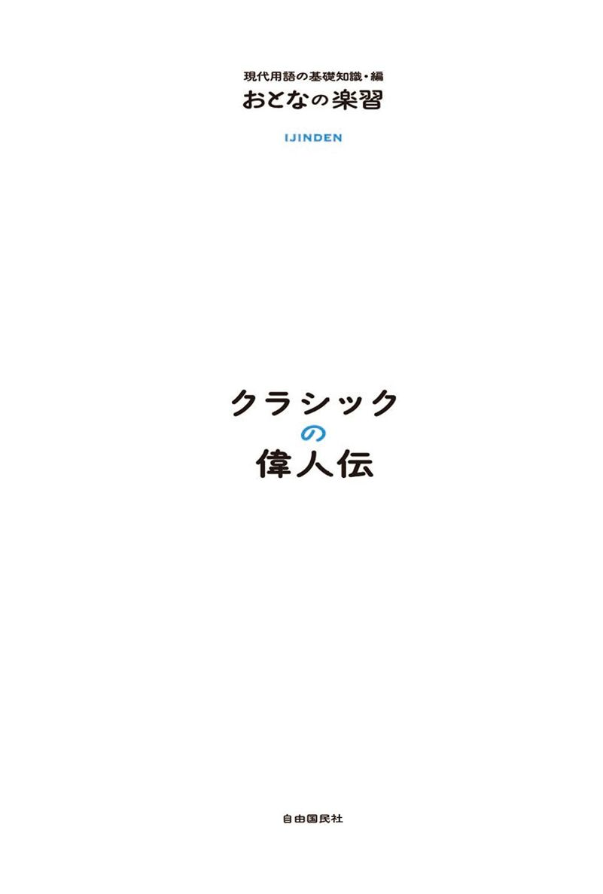
学校の音楽室の壁には、偉大な音楽家たちの肖像画が並んでいます。偉そうだったり、苦悩に満ちていたり、あるいは憂愁を帯びていたり、その表情はさまざまですが、共通するのは「偉大オーラ」ともいうべき何かを発していること。
音楽が五線譜に記録されるようになり、誰が作った曲なのかが明確に記されるようになったのは14世紀あたり。以後現在までの長い歴史の間に何万人、何十万人もの「作曲をした人」がいながらも、そのなかでほんの数十人だけが、いまも「クラシック音楽」として聴かれる曲を作ったのですから、たしかに、偉大なのです。その競争率たるやすさまじいもので、大統領や総理大臣になるのよりも難しい。
しかし、偉そうな顔の人たちも、恋に悩んだり、不倫でドロドロになったり、借金まみれになったり、けっこうドラマチックな人生なのです。聖人君子みたいな人はほとんどいません。みな何かが過剰な人たちです。だからこそ、そのありあまるエネルギーを音楽に注ぎ、名曲が生まれたわけです。
それぞれの曲については、聴いてもらうしかないので細かい解説はしていません。ぜひ、CDや配信、あるいはコンサートで聴いてください。
バロック
古典派
前期ロマン派
後期ロマン派
国民楽派
20世紀
コラム
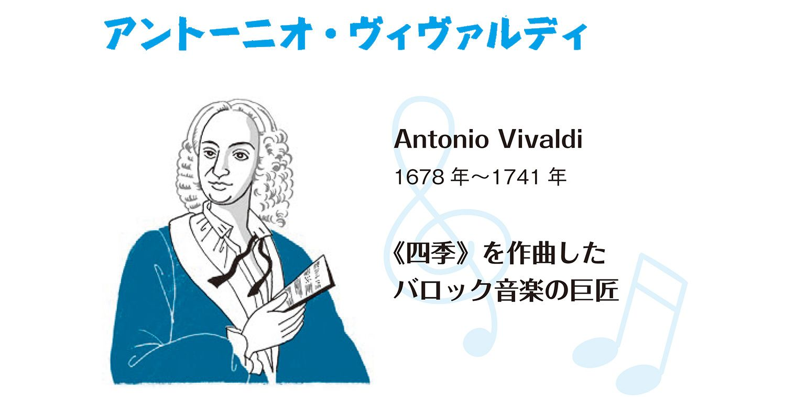
■バロック音楽の巨匠
バロック音楽の代名詞ともいえる《四季》の作曲者が、イタリアのヴィヴァルディです。17世紀に生まれましたが、活躍したのは18世紀になります。バロック音楽の時代は、1600年頃から18世紀半ばまでの約150年で、ヴィヴァルディはその後期の代表的な作曲家です。こうした時代区分は、19世紀になって「音楽史」が作られるようになった頃に生まれるので、ヴィヴァルディが生きた時代には「バロック音楽」なる言葉すら、ありませんでした。
世の中で、職業音楽家が最初に必要とされたのは教会でした。教会の儀式・祭典には音楽がつきものです。次に、王侯貴族の宮廷も音楽家を必要としました。教会や宮廷には専属の楽団が作られ、音楽家たちが雇われ、作曲し演奏していたのです。
ヴィヴァルディの本業はカトリック司祭で、そのかたわら作曲もして、演奏もしていたのです。
生まれたのはイタリアのヴェネツィアで、父親はサン・マルコ大聖堂付きオーケストラの一員として、ヴァイオリンを弾いていたそうですが、毎日オーケストラの仕事があったわけでもないので、理髪師の仕事もしていたそうです。
■赤毛の司祭
ヴィヴァルディは幼少から父にヴァイオリンを学び、10歳になると教会付属の学校に入りました。父は、かなり優秀なヴァイオリニストだったのですが、少年なのにその父の代理が務まるほど、ヴィヴァルディのヴァイオリンの才能は優れたものがあったようです。
ヴィヴァルディは音楽の勉強だけでなく、聖職者としての勉強も続け、1703年に25歳で司祭に叙階（任命）されました。髪が赤毛であったことから「赤毛の司祭」と呼ばれました。ニックネームが付けられたということは、それなりに人気があったのではないでしょうか。
司祭となった1703年9月から、ヴィヴァルディはヴェネツィアのピエタ慈善院付属音楽院で教えるようになりました。このピエタ慈善院は孤児院で、男の子は船大工や石工などの職業訓練を受けた後に社会に出ますが、女の子は結婚しない限り、生涯をこの院で過ごすことになっていました。とくに音楽の才能のある女の子は徹底的な教育を受け、慈善院付属音楽院の「合奏・合唱の娘たち」の一員として音楽活動をします（「娘」といっても少女楽団ではなく、平均年齢は40歳くらいでした）。この「合奏・合唱の娘たち」のコンサートは、慈善院の重要な収入源でした。慈善院は寄付だけでは運営できないので、手工芸が得意な女性たちが作ったものを売り、さらにコンサートでも稼いでいたのです。
このピエタ慈善院の楽団は、ヴィヴァルディが指導するようになると、一気にレベルが高くなり、コンサートはとても人気が出ました。それだけではなく、貴族の娘たちがヴィヴァルディに指導してほしいと慈善院に入るようになります。孤児院だったのが、貴族の娘の教育機関になっていくのです。もちろん、貴族からは多額の寄付金をもらったわけです。
ヴィヴァルディは慈善院の楽団のために、数多くの曲を作曲しました。この時代のコンサートは、「名曲」を演奏するのではなく、常に「新曲」が求められていたのです。そのかわり、新曲といっても、1曲ごとに大きな個性があったわけでもありません。
ヴィヴァルディはピエタ慈善院で1740年まで、実に37年間働きますが、フルタイムだったわけではなく、他の仕事もしていましたし、慈善院を離れた時期もありました。彼の500曲以上といわれる作品の大半は、この慈善院のために作られたものです。
慈善院以外の仕事としては、オペラがあります。1713年、35歳の年に最初のオペラ《離宮のオットー大帝》が初演となり、以後、現存するだけで52作を書きました。そのなかには、ローマ教皇の御前で演奏されたものもあります。オペラ上演のためにヨーロッパ各地を旅しました。
■《四季》は忘れられていた
オペラもありますが、ヴィヴァルディの作品の中核をなすのは、ヴァイオリン協奏曲でした。この様式を確立したのは、ヴィヴァルディよりも前の世代、25歳年長のコレッリで、18世紀前半はこのジャンルの曲が大流行していたのです。
ヴィヴァルディが書いて、このジャンルの名曲として知られるのが、《四季》です。春夏秋冬それぞれ3楽章、合計12の楽章で構成される曲で、日本でもとても人気があります。
春夏秋冬ごとに、それぞれの季節を描いた14行の短詩（ソネットという）があり、その内容を音楽で描いたもので、当時としても画期的だったと思われます。
ところが、この曲は、ヴィヴァルディの死後、ずっと埋もれていて、20世紀の1949年に楽譜が再発見され、それから演奏されるようになったのです。
1741年、63歳になるヴィヴァルディはウィーンに旅行し、その地で内臓疾患により亡くなりました。遺体は貧民病院の墓地に埋葬されたと記録にあるだけで、どこに眠っているのかは分かりません。彼自身も、その作品も完全に忘れられてしまい、20世紀になって復活したのです。
ＣＯＬＵＭＮ
バロック音楽
バロック音楽とは、17世紀から18世紀半ばまでの、イタリア、ドイツを中心とした音楽のことです。その多くが教会や宮廷で作られたもので、曲のイメージとしては、優雅とか典雅で、きらびやかなものです。いわば「天から聴こえてくる」ようなものが多いのです。だから、「バロックは癒される」としてヒーリング・ミュージックにもなりました。
「バロック」はもともとは美術用語でした。「歪んだ真珠」という意味の語で、18世紀後半の画家たちが、その前の世代の画家たちの絵を、「装飾過多」「気まぐれ」「風変わり」という軽蔑の意味で、「バロック」と呼んでいたものです。つまり、最初は蔑称でした。
その前のルネサンス時代は、「均衡」と「調和」が重視されていましたが、それだけでは物足りなくなった画家たちは、光と影のコントラストを駆使するようになり、人間や社会の暗黒面を描くようになります。かなりグロテスクなものが多いのがバロック絵画でした。
この絵画のバロックと、音楽のバロックとは同じではありません。
バロック音楽は、正確には「絵画におけるバロック時代の音楽」となり、単なる時代区分で、そこに深い意味はないし、バロック絵画との関係もありません。
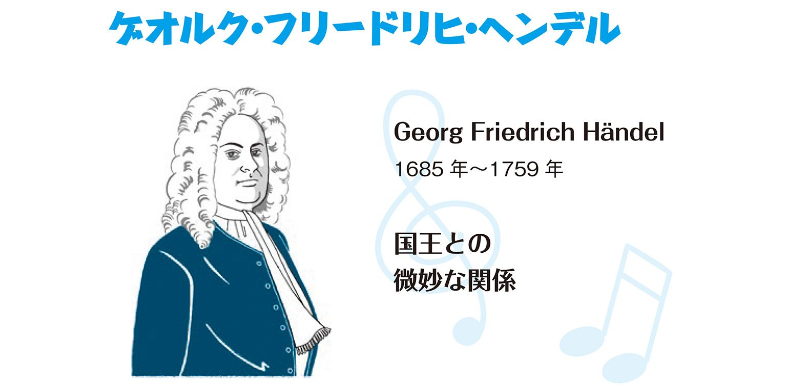
■2つの名前を持つ男
ヘンデルには、2つの名前があります。日本では「Georg Friedrich Händel」と書いて、「ゲオルク・フリードリヒ・ヘンデル」と読むのが一般的ですが、イギリス人は「George Frideric Handel」と書いて、「ジョージ・フリデリック・ハンドル」と読みます。ですから、英米人と話す時に、「ヘンデル」といっても通じないかもしれません。
このように2つの名前を持つのは、ヘンデルがドイツで生まれながら、作曲家としての活動のほとんどがイギリスでなされ、さらにイギリスに帰化したからです。
■法律家になるはずだった
ヘンデルはバッハと同じ1685年に現在のドイツのザクセン＝アンハルト州のハレに生まれました。父は外科医兼理髪師でした。昔は、理髪師と外科医は兼任していたのです。どちらも刃物を用いる仕事です。ヘンデルが生まれたとき、父は63歳でした。ヘンデルの母は後妻で、牧師の娘だったそうです。ヘンデルの両親は30歳も離れていました。
父は息子を法律家にしたいと考えていました。ところが、異母兄がチェンバロを弾いていたのを聴いて、ヘンデルは音楽好きな子となるのです。
ヘンデルが学校の勉強よりも楽器の演奏に夢中になっているので、父親は、ある日、家中のすべての楽器を屋根裏部屋に隠してしまいました。このあたり、いまのロック少年たちと父親との関係に似ています。ヘンデルの父親の感覚では、「音楽になどに夢中になると、ろくな人間にはならん」ということなのでしょう。
ヘンデルと父親との闘争は続きます。ヘンデルは屋根裏部屋にチェンバロがあるのを見つけると、嬉しくて、思わず、弾いてしまいました。父親は怒って、ついにチェンバロを処分してしまいます。するとヘンデルは友人の家に行って、チェンバロを弾いて楽しむようになります。
このしつこさが、バロックの巨匠を生むのです。
■音楽家への道
ヘンデルの父は、ザクセンのアウグスト公爵の宮廷に、外科医として仕えていました。ヘンデルは7歳になると、父について宮廷に行くようになります。宮廷では毎朝の礼拝で、オルガン伴奏の賛美歌が歌われており、それを聴くためでした。ある日、ついにヘンデル少年は、聖歌隊にもぐり込み、さらにはオルガンを弾いてしまいました。それを聴いた公爵は、父子を呼び出します。
ヘンデル父子は、叱られると思って公爵のもとに出向いたのですが、公爵は、ヘンデルには音楽の才能がありそうだから、ちゃんと勉強させるようにと言うのでした。
ヘンデルの音楽家への道は、こうして開けました。
ヘンデルの最初の音楽の師は、聖母マリア教会オルガニストのツァハウでした。1694年、9歳の年から、このツァハウの弟子となり、オルガン、チェンバロ、ヴァイオリンの弾き方、作曲の基礎を教わります。
しかし、父はまだ息子を法律家にさせることを諦めてはいないので、学校の勉強もさぼれませんでした。
ところが、1697年、父が74歳で死んでしまいます。法律家になってくれというのが遺言だったのですが、ヘンデルはハレの大聖堂の見習いオルガニストになりました。学業と並行しての音楽の実地での勉強も始まったのです。
さらに、17歳になる1702年には、正オルガニストになるとともに、法律の勉強のためハレ大学にも入学しましたが、1年後には大学を退学し、さらに故郷であるハレの町そのものとも別れ──当然、大聖堂のオルガニストの仕事も辞めました。
こうして、家族と故郷とを断ち切って、ヘンデルは大都会ハンブルクに出ます。といって、ハンブルクでの仕事のあてがあったわけではありません。都会でしたので、どうにかなるだろうと思ったのでしょう。
ヘンデルのこの決断は正しく、すぐにハンブルクの歌劇場のオーケストラに、ヴァイオリニストとして就職できました。この歌劇場には当時、カイザーという音楽家が監督として君臨しており、ヘンデルはカイザーによって作曲家としての才能が見抜かれたのです。1704年、19歳のヘンデルは最初のオペラ《アルミーラ》を書いて、これが成功しました。
こうしてオペラ作曲家として成功したからには、この道の大家になりたいと考え、ヘンデルはオペラについて本格的に勉強しようと、イタリアへ向かいます。1706年のことでした。
ところが、ローマに着いてみると、教会の命令で、オペラの上演が禁止されていました。そこでヘンデルは、今度は宗教音楽に取り組むことになります。これはこれで、後に多くのオラトリオ（宗教的な内容の叙事詩を、独唱と合唱とオーケストラで演奏するもので、オペラから演劇的な要素を除いたもの）を生み出すためのベースとなります。
■イタリア時代
ヘンデルがローマに着いたのが1706年の暮れで、各地での修行の後、イタリアを発つのは1710年2月。イタリアでの修行時代は3年ちょっとで終わったことになります。この間に、フィレンツェやナポリ、ヴェネツィアなどの歌劇場のためにオペラを書き、成功を納めました。
「修行」といっても、常に実際に作品を書いて、それが上演されていたわけで、このあたりも、現在のポップ系のミュージシャンに近いわけです。師のもとで下働きをするか、音楽院という象牙の塔のなかで学んでいる、いまのクラシックの音楽家と異なり、昔の大作曲家は、生活と修行と創作とが一緒でした。3年間のイタリア時代にヘンデルが書いたのは、オペラが2作、カンタータ（声楽作品）は100あまりとされています。
イタリア時代に知り合った、トスカーナ公子の紹介もあり、ヘンデルはハノーファー選帝侯の宮廷楽長というポストを得ました。
■ハノーファーへ
ハノーファーは、現在のドイツのニーダーザクセン州の首都です。
日本では「ハノーバー」とも発音されます。中世からの古い都市で、ハノーファー公国の首都だったのですが、1692年に、当時のハノーファー公であるエルンスト・アウグストが神聖ローマ帝国の皇帝を選ぶ選挙権を有する7人の選帝侯の1人となったことにより、ハノーファー選帝侯国と通称として呼ばれるようになります。
神聖ローマ帝国は、現在のドイツとオーストリアを中心とした一帯を示すもので、300あまりの大小さまざまな国（「領邦」ともいいます）がありました。ハノーファー選帝侯国は、大きなほうに属しました。
ヘンデルは、25歳の年に、この選帝侯の宮廷楽団のトップになったのですから、大出世といっていいでしょう。イタリアでの実績がものを言ったのです。
ところが、わずか1年にして、ヘンデルは長期休暇を願い出て、ロンドンに行ってしまいます。1710年6月に宮廷楽長になったのに、その年の暮れにはロンドンに着いているので、ハノーファーの楽長としての仕事は半年もしていません。
ロンドンでは、さっそくオペラを手がけ、14日間で仕上げたという伝説が残っている《リナルド》で注目されます。
しかしあくまで休暇をもらっている身なので、翌1711年6月になると、ヘンデルはハノーファーへ帰り、宮廷楽団の仕事に復帰しました。
■イギリス国王とハノーファー選帝侯
ここから少し人間関係が錯綜してくるので、注意して読んでください。この時点でのイギリス国王は、アン女王です。この女王と、ハノーファー選帝侯ゲオルクとは実は親戚なのです。ヨーロッパ各国の王家は、何重もの親戚関係で結ばれていますので、非常にややこしいのです。
アン女王には成人した子がいなかったので、次の国王を誰にするか、女王が即位する前から問題となっていました。一番近いのは、異母弟のジェームズなのですが、ジェームズはカトリックで、イギリスの議会はプロテスタントが強くなっていたので、カトリックの国王はダメだとなり、ゲオルクが次の国王になることが決まっていたのです。ゲオルクはそれまで一度もイギリスに行ったことがなく、英語は全然話せません。そんな国王のほうが、議会にとっては都合が良かったとの説もあります。
ヘンデルがロンドンに行ったり、ハノーファーに戻ったりしていたのは、そんな国王の交代が近い時期だったのです。
1712年秋になると、ヘンデルは再びロンドンに向かいました。1年ぶりとなります。「適当な時期に戻る」というのが、ハノーファーを発つときの約束でした。しかしヘンデルがいつまでも帰らないので、13年6月に、ハノーファーの宮廷楽団の楽長職を解任されてしまいます。これにより、ヘンデルはずっとロンドンにいてもいいことにもなったのです。この年の12月には、アン女王から年金を賜ることになります。
ところが翌1714年8月にアン女王が49歳で亡くなってしまいました。事前に決まっていたとおり、ハノーファー選帝侯ゲオルク1世がイギリス国王を兼ねることになります。
ゲオルク1世は、イギリスでは「ジョージ１世」と呼ばれます。このように、英独で呼ばれ方が違うのは、ヘンデルと同じです。
■《水上の音楽》のミステリ
ジョージ1世はイギリス国王になりましたが、ハノーファー選帝侯の地位もそのままでした。つまり、ロンドンとハノーファーの二重生活となります。どちらかというとハノーファーにいることのほうが多く、イギリスの国内政治は内閣に委ねられました。イギリスでは、この時代に「首相」というポストも生まれ、「王は君臨すれども統治せず」という原則も確立されました。
ヘンデルは、1716年にジョージ1世がドイツへ戻る際に同行して、生まれた町であるハレにも立ち寄っています。
そして翌1717年の夏に、ジョージ1世がロンドンのテームズ川で舟遊びをする際のBGMとして作曲されたのが、ヘンデルの《水上の音楽》なのです。
宮廷楽長を解雇され、ジョージ1世の不興をかっていたヘンデルでしたが、この曲を作ったので国王は赦したという伝説が長く伝えられていました。いまでもCDの解説書などにはそう書いてあるものが多いようです。
しかし、最近の研究では、ヘンデルがジョージ1世の不興をかっていたというのは、「偽装」だとの説が有力です。
ヘンデルがアン女王から年金を賜るまでになっていたことは、彼がかなり王宮の奥深くまで入り込んでいたことを意味します。音楽家は公的な社会的地位は低いのですが、「有名人」であることから、身分の上下に関係なく、王侯貴族に近づけました。これは、スパイにうってつけなのです。
ジョージ1世としては、アン女王没後は自分が国王になると決まっていたのに、それまで一度もロンドンに行ったことがなく、臣下となる貴族たちがどんな人間なのか、何も知りません。そこで、少しでも事前に知っておこうと、ヘンデルをロンドンに行かせ、王侯貴族たちと親しくさせて、彼らのことを報告させていたのではないか。スパイだったことがばれると不都合なので、ジョージ1世は、わざとヘンデルに冷たくあたり、不興をかっているとの噂を流したのではないか、つまり偽装というわけです。
しかし、アン女王が亡くなり、ジョージ1世が国王になってからは、不仲のふりをする必要もなくなり、むしろ、頻繁に会うには2人が和解したと見せつけたほうがよく、それを演出することになり、《水上の音楽》を国王に捧げるという物語が作られたらしいのです。
「スパイは証拠を残さない」ので、なかなか真実は見えません。たとえ、ヘンデルがスパイだったとしても、その音楽の評価とは別のものです。
ヘンデルは、その後は基本的にはロンドンに住み、1727年には正式にイギリスに帰化しました。以後、亡くなるまでロンドンで、オペラやオラトリオといった、劇場で上演される作品を作曲していきます。
つまり、宮廷や教会という、「公的機関のための音楽」ではなく、劇場という「民間資本」のために書いたのです。これは、当時すでに経済大国となっていたイギリスの首都ロンドンに、市民を客層とした劇場があり、興行が盛んだったことを意味しています。
1720年代から30年代が、ヘンデルの全盛期でした。この時代は人気歌手が何人もいて、オペラブームがロンドンに起きていたのです。ヘンデルが30代から50代の頃です。
■失明、そして...
1750年に、同世代のバッハが亡くなります。2人は何度か対面が実現しそうになったのですが、結局、一度も会いませんでした。
1751年、ヘンデルは左眼の視力を失い、やがて右眼の視力も衰えてしまいます。1752年には完全に失明したとされています。そして、1758年になって、眼科の名医というふれこみのジョン・テイラーという医師の手術を受けるのですが、眼は治らず、それどころか、翌年に死んでしまいます。74歳だったので、手術が原因なのかどうかは分かりません。
■死後の評価
明治維新によって、日本に西洋音楽が輸入された当初、ヘンデルは「音楽の父」バッハに並ぶ「音楽の母」として讃えられていましたが、やがてその人気は凋落してしまいます。作品のほとんどがオペラとオラトリオという、言葉を伴うものであり、さらに宗教的なものだったので、演奏機会が少なかったのも、人気のない理由でした。
しかし、20世紀の終わり頃から、バロック・オペラがブームとなり、ヘンデルのオペラも再評価されるようになっています。
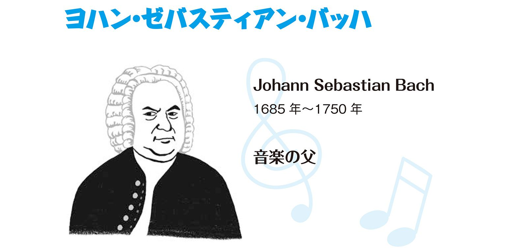
■「音楽の父」とはどういう意味か
バッハは「音楽の父」と呼ばれています。日本なら、「音楽の神様」なのですが、一神教のキリスト教社会では、神は神だけなのです。
バッハは、その生涯の大半を教会で働いていた音楽家なので、作品の大半は「宗教音楽」というジャンルに属しますが、日本のようにキリスト教の信者の数が少ない国では、キリスト教とは関係のない音楽のほうが人気があるようです。
教会音楽もオペラも、その発祥の地はイタリアでした。ですから、音楽はまずイタリアでさまざまなルールが作られたのです。音楽用語のほとんど──アダージョとかフォルテとかピアノなど──がイタリア語なのはそのためです。
そのイタリアで発展した音楽が、ドイツのバッハによって集大成され、ドイツ音楽の基本となったのです。こうして音楽は、バロックの次の「古典派時代」、すなわち「クラシック」の時代に突入します。
後の時代である「クラシック」世代からみると、バッハは、自分たちの音楽の始まりにあたるので「音楽の父」なのです。
■バッハの少年時代、青年時代
バッハは1685年にドイツのアイゼナハで生まれました。父は市庁舎付き音楽家で、その他、親戚のほとんどが音楽家という一族でした。この時代は、音楽家は一種の職人だったので、親の仕事を子供が継いでいましたし、音楽学校も整備されていないので、子供の頃から音楽教育を受けられるのは、親に教わることのできる音楽家の子しかいなかったわけです。
バッハは母を9歳で、父を10歳で亡くし、以後はオルガニストとして独立していた長兄のもとで育ちます。
15歳になる1700年には教会付属学校に給費学生として入り、その聖歌隊でボーイソプラノとして歌っていました。変声期を過ぎると、聖歌隊での仕事はなくなり、1703年にワイマールのヨハン・エルンスト公爵の宮廷で働くことになります。これが最初の就職でした。仕事は宮廷楽団でのヴァイオリンの演奏でした。
その後、アルンシュタットの新教会のオルガニストになり、さらにミュールハウゼンの聖ブラジウス教会のオルガニストに好条件で雇われるなど、オルガニストとしての名声が高まっていきます。
■「音楽家の父」でもあったバッハ
バッハは生涯に二度、結婚します。最初は1707年10月で、親戚でもあった1歳年上の女性マリア・バルバラ・バッハ。7人の子が生まれます。
しかしマリア・バルバラは1720年に亡くなり、その翌年に16歳下のソプラノ歌手と再婚しました。アンナ・マグダレーナ・ヴィルケです。彼女との間には13人の子が生まれ、合計20人の父となりますが、この時代は幼児死亡率が高いので、成人した男子は5人で、4人が音楽家として成功します。バッハは「音楽の父」であるだけでなく、「音楽家の父」としても大成功したのです。
息子だけでなく、父や祖父、伯父たちも含めると、「バッハ」という音楽家が何人もいるので、区別するために、「大バッハ」と呼ばれることもあります。
■バッハの仕事
バッハは、ドイツ各地で「教会付きオルガニスト」、「宮廷オルガニスト」、「宮廷楽長」として働きました。オルガンの演奏だけでなく、作曲も仕事でした。教会で毎月1曲ずつカンタータを作曲して上演していましたし、宮廷で働いていたときは、「世俗音楽」つまり、宗教音楽ではない音楽を作曲しました。
バッハの全盛期にあたるのが、1723年からのライプツィヒ時代で、聖トーマス教会のカントルに就任すると同時に、ライプツィヒ市の音楽監督にもなりました。
「市の音楽監督」というのは日本にはない職業なので分かりにくいのですが、その市の音楽活動全体の責任者のことです。市の行事のための作曲もすれば、歌劇場がある市ではその指揮者としても活躍することもあり、なかなか忙しい仕事です。
バッハはオペラの作曲はしませんでしたが、膨大な量のさまざまなジャンルの曲を作りました。生涯に1,000曲以上、CDにして200枚以上になります。
量的には膨大なのですが、その代わり、オリジナリティはあまりないのです。バッハの功績は、独創性にあったのではなく、当時流行していたさまざまな様式を採り入れて作曲することで、音楽を集大成した点にあるのです。具体的には、イタリアの器楽曲、北ドイツを起源とするオルガン音楽、プロテスタントの教会音楽、フランスの宮廷音楽などが、バッハによって集大成され、技法の点では、対位法という音楽書法を究めました。
しかし、そうした評価は後世になってのもので、当時はあまり偉大な存在ではなかったらしいのです。
■不運な死
バッハは1750年に65歳で亡くなります。その前年、1749年暮れに失明してしまい、50年春にジョン・テイラーというイギリス人医師による手術を受けたのですが、これが失敗し、その後遺症で死んだとされています。この医師の名を覚えていますか？ ヘンデルの眼を手術して死に至らせたあの医者です。
偉大な音楽家2人が、眼の病気となり、同じインチキ医師の手術を受けて、その後数カ月で死んでしまうというのは、なんとも不思議です。
■忘れられた人
バッハの時代、「音楽家」とは教会や宮廷に雇われて演奏する人のことでした。バッハはオルガニストとしては高名でしたが、録音のない時代ですから、死んでしまえば演奏家は終わりでした。
バッハの作品もほとんど忘れられてしまいました。ごく一部の音楽家がその作品の偉大さに気づいていただけだったのです。プロの音楽家になった4人の息子たちも、日本の能や歌舞伎とは異なり、父親の芸を継承していくという発想はないので、それぞれ独自の作品を作っていました。
バッハが「再評価」されるのは、死後100年近くが過ぎた19世紀半ばのことなのです。
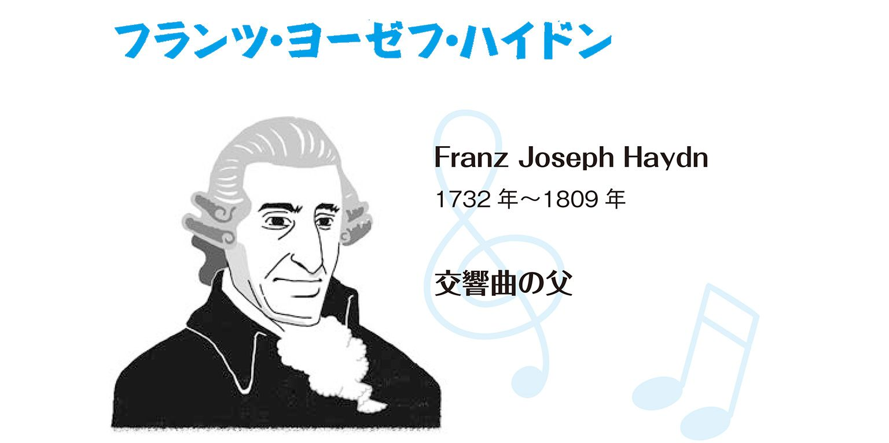
■交響曲というジャンルを確立
「音楽の父」バッハと「音楽の母」ヘンデルの次の世代がハイドンです。この作曲家は、「交響曲の父」と呼ばれています。分かっているだけで、104曲もの交響曲を書いたからで、そもそも「交響曲＝シンフォニー」というジャンルを確立したのが、ハイドンだからです。
交響曲の歴史はハイドンに始まり、モーツァルトを経て、ベートーヴェンによって完成されます。
■美声の持ち主
ハイドンは、当時はハンガリー領だったローラウという村で、1732年に生まれました。
父は車大工で、身分は低かったのですが、収入はけっこうありました。ハイドンの父は音楽家ではありませんでしたが、仕事が終わると、ハープを弾いて歌うなど、音楽好きな人でした。
ハイドンも歌が好きな子で、とてもうまかったので、近所では「歌のうまい少年」として注目されていました。
ハイドンが6歳になる年、ハンブルクにいた親戚が、「この子にはちゃんとした音楽の勉強をさせたほうがいい」と両親に言い、引き取りました。
いくら才能があっても、ローラウのような田舎町では、いつまでも埋もれたままです。天才は都会に出ないとならないのです。
8歳になると、ハイドンはウィーンのシュテファン大聖堂の聖歌隊の一員になりました。この聖歌隊は、ウィーンの神聖ローマ皇帝の宮廷礼拝堂少年聖歌隊とよく共演していました。この宮廷の聖歌隊が、今日のウィーン少年合唱団です。どちらも、少年合唱団としては名門で、ハイドンが少年歌手としていかに優秀であったかが分かります。
しかし、ハイドンがいくら美声の持ち主でも、17歳になると高音が出なくなり、聖歌隊を解雇されてしまいます。なんでも、女帝マリア・テレジアが、ある日の音楽会に臨席し、「あの子は怒鳴ってばかりいた」と言ったのが、解雇の理由だったそうです。
解雇といっても、退職金が出るわけではなく、17歳のハイドンにはなんの財産もなく、洗いざらしの3枚のシャツだけが、彼の財産でした。残酷なものです。
もしハイドンが美少年だったら、いまの日本なら、ジャニーズ事務所に入る手もあるのでしょうが、当時のウィーンにはそういうものはまだありません。
■修行時代
失業したハイドンを助けてくれたのが、裕福な商人ブッホルツでした。150フロリン、いまの日本円に換算して、大雑把にいって150万円くらいを、無利子で貸してくれたのです（あくまで、貸付であり、もらったわけではありません。相手は商人なのです）。
この金を元手に商売を始めたら、「交響曲の父」は存在しなかったわけですが、さすがハイドン、そんなことはしません。貧乏な修行時代が始まります。
ハイドンは屋根裏部屋を借りると、働きながら音楽の勉強を始めました。基本的には、独学でした。
仕事は、教会で歌うこと（ボーイソプラノではなくなりましたが、歌はうまかったので、けっこう仕事はあったようです）、さらにはパイプオルガンも弾きました。夜には貴族の舞踏会や裕福な市民のパーティーでヴァイオリンを弾きました。ピアノの前身である鍵盤楽器クラヴィーアの家庭教師もしました。いまの、「売れない音楽家」と似たような生活です。
「僕は、音楽のなかにいられれば、それで幸福なんだ」とハイドンが言ったかどうか分かりませんが、そんな気分だったのではないでしょうか。
そんな生活が10年ほど続きます。いちばん実入りがいいのが、音楽の家庭教師で、良家の子女にクラヴィーアを教えていました。
やがて、ハイドンは当時のウィーンのオペラ界で台本作家として著名なメタスタージオと知り合いになり、彼の仲介でイタリアの作曲家の弟子兼雑用係となったりもすれば、ある男爵に依頼されて室内楽を作ったりするようになります。
■宮廷楽団に雇われる
1759年、27歳になるハイドンは最初の就職をします。モルツィン伯爵の宮廷楽団の楽長になったのです。この伯爵の年間の生活パターンは、冬はウィーン、夏はボヘミアのルカヴィーツェという城で過ごすというもの。楽団は伯爵とともに移動していたのです。
ハイドンの記念すべき最初の交響曲は、このモルツィン伯爵の楽団のために書かれたものでした。その演奏会には、エステルハージ侯爵も来ていて、この若い楽長の音楽を聴いて、とても気に入りました。そうです。このエステルハージ侯爵こそが、ハイドンが生涯の大半を仕える貴族なのです。
ハイドンは、1760年11月に結婚するのですが、その相手はハイドンが下宿していた鬘師の娘でした。最初ハイドンは妹のほうを好きになったのですが、彼女は修道院に入ることが決まっていたため、その親の薦めで、姉のほうと結婚することになったのです。あまりロマンチックではない結婚で、子供も生まれませんでした。
家庭を持ったのに、ハイドンは失業してしまいます。モルツィン伯爵が財政難に陥り、宮廷楽団を解散、音楽家たちを解雇してしまったからです。しかし、ハイドンにはすぐに再就職先が見つかりました。ハイドンの失業を知ったエステルハージ侯爵が、「ぜひ、うちに来てくれ」と雇ってくれたのです。
こうして、1761年、29歳の年にハイドンはハンガリー西部を領地とする大貴族エステルハージ侯爵家の副楽長になりました。楽団には「楽長」がいましたが、かなり高齢だったので、ほとんど仕事はせず、名ばかりでした。そんなに長くはないとも思われており、ハイドンは副楽長という肩書きでしたが、実質的には楽長になったのです。実際、5年後の1766年には、この老楽長が亡くなり、ハイドンは正式に楽長となります。そしてハイドンは、30年近く、この家に仕えることになるのです。
さて、宮廷楽団の楽長とはどんな仕事をするのでしょう。エステルハージ侯爵はいくつも邸宅を持っていて、ハイドン率いる楽団は侯爵が移動するたびについて行き、儀式や宴会、食事のためにBGMを演奏していました。いまのようにオーディオも放送もないので、音楽は生演奏のみでした。とても贅沢な話です。
ハイドンは演奏においては指揮者として楽団を統率していましたが、それだけが楽長の仕事ではありません。作曲家として新曲を次々と書き、さらには楽団の人事や楽譜や楽器の管理といった楽団運営の実務も担わなければならなかったのです。
この楽団で演奏されていたのは、弦楽四重奏曲と交響曲でした。交響曲といっても、現在のオーケストラのように数十人から100人を超えるような大編成で演奏されるものではありません。侯爵の宮廷のなかで演奏されていたので、聴くほうも多くても数十人でしたから、そんなに大きな音は必要がなかったのです。
■交響曲の父
1790年、エステルハージ家の当主であるニコニウスが亡くなりました。後を継いだアントンは音楽に関心がなく、宮廷楽団は解散が決まります。ハイドンの仕事もなくなってしまうわけですが、30年近く働いた大功労者ですので、楽長の肩書きだけは残り、ハイドンは事実上フリーの音楽家として活動することになりました。ハイドンは58歳になっていました。
この時点で、すでにハイドンは交響曲80曲近くを書いています。
ハイドンの時代は、交響曲の形式が完成をみた時期にあたり、ハイドンは「交響曲の父」の異名どおり、少なくとも104曲の交響曲を書きました。数は多いのですが、どれも十数分、長くても20分くらいのものです。交響曲が「長い音楽」になるのはベートーヴェンからなのです。
■ロンドンで大儲け
エステルハージ家の宮廷楽団がなくなり、いわば失業したハイドンのもとに、ザロモンという興行師がやって来て、ロンドンでコンサートをやろうと持ちかけます。前の世代のヘンデルもロンドンで成功しましたが、この当時すでに経済大国となっていたイギリスのロンドンでは、裕福な一般市民を客層にしたコンサートが興行として成り立つようになっていたのです。
オーストリアは神聖ローマ帝国の中核であり、ウィーンはその首都でしたが、当時のヨーロッパでは人口だけみても、ロンドン、パリに次ぐ第三の都市で、音楽マーケットが確立されていなかったのです。音楽家たちは、貴族や教会に雇われる仕事しかありませんでした。
ハイドンは1791年から92年にかけてロンドンに滞在し、連続演奏会を開きました。そのために新しい交響曲を6曲書き、ハイドンの指揮で演奏されたのです。この1年でハイドンはいまの日本円にして1億円以上の大金を得ました。晩年になっての大成功です。
ハイドンがロンドンに旅立つ時にウィーンで見送ってくれた同業者のひとりが、モーツァルトでしたが、ハイドンが帰国した時には35歳で亡くなっていました。一方、ハイドンがロンドンからの帰路に立ち寄ったボンで出会った青年が、ベートーヴェンでした。ハイドンはベートーヴェンの才能を見抜いて、ウィーンに来れば弟子にしてやると約束したのです。ベートーヴェンはその言葉をあてにしてウィーンに来て、弟子入りします。
ハイドンは1794年から95年にかけて、再びロンドンに行きます。そのままずっとロンドンで活躍することもできたのですが、1795年にエステルハージ家の当主がまたも交代し、新しい当主が音楽に熱心で、宮廷楽団が再結成され、ハイドンは楽長に復帰します。その後、1804年まで勤め、さすがに高齢となったので引退、ウィーンで余生を送っていました。
時代はフランス革命からナポレオン戦争に突入しており、1809年、ナポレオン率いるフランス軍がウィーンを攻撃している最中に、ハイドンは亡くなりました。77歳になる直前でした。この時代としては長寿です。
ハイドンが67歳の年に、妻が71歳で亡くなりました。ケチで芸術にまるで理解がなく、お金の要求ばかりしていたと評判の悪い奥さんでした。夫婦のことは当事者にしか分かりませんが、愛のない結婚生活だったようで、ハイドンは歌手と浮気したりしています。しかし、その浮気が大事件に発展することもなく、この「交響曲の父」の生涯は、ドラマとしてはあまり面白くないのです。けれども、音楽史では重要な人物と位置づけられています。
ＣＯＬＵＭＮ
交響曲
交響曲は、オーケストラで演奏される曲で、4つの楽章によって構成されます。どうして4つなのかは、あまり深い意味はなく、なんとなく、落ち着きがよかったので、4楽章と定着したのです。
「交響曲」は「交響楽」とも呼ばれますが、英語とドイツ語ではシンフォニーで、これを「交響曲」と訳したのは、ドイツに留学してこの音楽を実際に聴いた、森鷗外でした。
シンフォニーも、そもそもの始まりはイタリア。オペラの序曲が「シンフォニア」と呼ばれていたものが、独立した曲として発展していったのです。当初のイタリア式序曲は、最初が速い部分で、次がゆったりとした部分、そして最後がまた速い部分という、「急－緩－急」の3部からなっており、この3部分が後に楽章として独立したのです。
一方、ソナタ形式というものが生まれます。原則として2つのテーマ（メロディーとリズムの集合体）があって、それが交互に登場して、それぞれ影響しあいながら、変奏されていくものです。
ドイツで確立されたシンフォニーは4つの楽章を持ち、そのひとつはソナタ形式である、というのがとりあえずの定義です。しかし、これはあくまで原則で、この形式を破ったもののほうが傑作は多いのです。
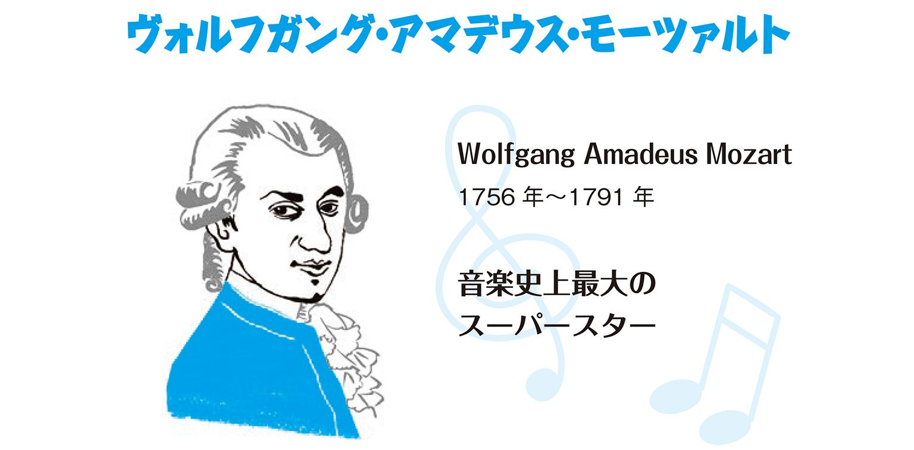
■ウィーン古典派
サラリーマン生活が長く、定年後にブレイクしたハイドンと異なり、モーツァルトは子供時代にデビューし、35歳で死んでしまいました。対照的な人生と言えるでしょう。
モーツァルトは1756年にザルツブルクで生まれました。ハイドンの24歳年下になりますが、ハイドンよりも先に死んでしまいます。モーツァルトの14歳年下がベートーヴェンで、この3人は、「ウィーン古典派」の巨匠と言われますが、別にそういう派閥があったわけでもなく、グループとして活動したわけでもありません。ハイドンとモーツァルトは親しく、ハイドンとベートーヴェンは師弟関係、モーツァルトとベートーヴェンは1回だけ「会った」という程度の関係です。
しかし、この3人によって、「クラシック音楽」のほとんどのジャンルが確立されたのは間違いないのです。「古典派」とは、すなわち「クラシック」です。つまり、「クラシックの中のクラシック」にあたるのが、モーツァルトとベートーヴェン、そしてハイドンというわけです。
■神童
モーツァルトが生まれたザルツブルクは、現在はオーストリアの州ですが、当時はカトリックの大司教が領主を兼ねている、大司教領国でした。代々の大司教は音楽好きで、宮廷楽団がかなり早くからありました。モーツァルトの父は、この宮廷楽団のヴァイオリニストだったのです。
モーツァルトには姉がひとりいて、ナンネルといいます。この姉が父から音楽を習っていたのをそばで聴いていたモーツァルトが、「僕もやる」と言いだし、クラヴィーアを弾いたところ、完璧だったので、「この子は天才だ」となったのです。モーツァルト伝説によると、4歳でクラヴィーアを弾き始め、5歳で最初の作曲をしたとなっています。
モーツァルトの父レオポルトは自分も宮廷楽団のための作曲をしていたし、ヴァイオリニストとしても優秀で、さらには音楽教師としても優れていました。彼は自分の息子と娘に才能があると見抜くと、これで一旗揚げてやろうと考えます。2人の「神童」を連れて、ヨーロッパ各地の王侯貴族を訪ね、興行するのです。
モーツァルトは35歳の生涯のうち、合計すると10年以上を旅していたと言われますが、その旅の大半は幼少年時代のもので、父に連れられて、ヨーロッパ中を演奏旅行していたのです。要するに、旅回りの家族楽団でした。
小さな子がクラヴィーアをちゃんと弾くだけでも驚きでしたので、モーツァルト姉弟はたちまち評判になり、なかでも弟のモーツァルトは自分で作曲もするというので、人気がありました。
この旅のひとつでウィーンに行き、神聖ローマ皇帝の家族が居住するシェーンブルン宮殿で御前演奏をしました。女帝マリア・テレジアとその夫の皇帝フランツ1世と12人の子供たちが聴きました。そのなかには後のフランス王妃マリー・アントワネットもいました。モーツァルトがすべって転んだ時、彼女がそばに駆け寄り、手を差し伸べてくれたので、「おとなになったら、ぼくのお嫁さんにしてあげるよ」とモーツァルトが言ったというエピソードが有名ですが、これは創作のようです。でも、マリー・アントワネットがモーツァルトの演奏を聴いたのは事実です。
モーツァルトの最も長い旅は、7歳から10歳にかけての3年にわたる旅で、ドイツ各地をまわった後にパリへ出て、さらにロンドンにまで行っています。ロンドンではバッハの息子のひとりと知り合い、いろいろと教えてもらいました。
父レオポルトは、子供の興行でかなり儲けたようです。その間、ザルツブルクの宮廷楽団からは休暇をもらっていたので、帰国すると、楽団に復帰しました。
■サラリーマン時代
長い旅から帰ったモーツァルトは10歳になっていたので、もう「神童」ではありません。いまでも、ドラマなどで名演技をした子役が、成長して大人の俳優として成功する例は少ないように、音楽の神童も10歳を過ぎると、ただの少年になってしまうことが多いのです。父レオポルトはそれをよく分かっていたので、モーツァルトをなんとか一人前の音楽家に育てようと考え、1769年、モーツァルトが13歳の年、イタリアに留学と興行を兼ねた旅に出ます。
レオポルトは、歴史のある都市とはいえザルツブルクは田舎なので、もっと大都市の宮廷楽団に転職したがっていました。モーツァルトをイタリアの歌劇場か宮廷楽団に売り込み、自分も雇ってもらおうと画策していたのでした。
モーツァルトはイタリアでオペラを学び、何人もの音楽家や王侯貴族と知り合いになるという収穫はありましたが、父子とも就職はできず、ザルツブルクに戻りました。
すでにイタリアに旅立つ前から、モーツァルトも宮廷楽団の「無給のコンサートマスター」という地位にありましたが、帰国後は有給となりました。モーツァルトは、大司教のために多くの曲を作曲し、演奏します。
しかし、このサラリーマン生活が、モーツァルトには面白くありません。ヨーロッパ中の大都会を知ってしまったので、刺激のない田舎町は退屈だったのです。モーツァルトはザルツブルクの宮廷楽団を辞めて、自由になりたいと思うようになっていきます。
■フリー・ミュージシャンになる
1781年、モーツァルトは25歳にして、ついに自由の身になります。大司教と大げんかして、クビになってしまうのですが、これは彼の計算だったかもしれません。この時代、モーツァルトのような身分の者には、勝手に宮廷楽団を退職する権利もなかったのです。権利は、大司教にしかありません。大司教は解雇する権利もあれば、退職を認めない権利もありました。
モーツァルトはこの時点で何作かのオペラがイタリアで成功しており、宮廷楽団を辞めても、どうにかなるとの目算がありました。
こうして、モーツァルトは当時としては珍しい、フリー・ミュージシャンになるのです。この頃、ハイドンはまだエステルハージ家のサラリーマンでしたから、モーツァルトの生き方は音楽家としては先駆的でした。もちろん、リスクも大きく、なんの保証もありません。
宮廷楽団を辞めたことを父は激怒しました。こうして、生まれた時から続いていた父との蜜月関係も終わります。モーツァルトは親離れし、自立したのです。モーツァルトの師でもあり、マネージャーでもあり、ステージパパでもあったレオポルトの人生は、事実上、ここに終わりました。彼はザルツブルクで、息子の心配をしながら暮らします。
■妻コンスタンツェ
史上、ソクラテスの妻と並ぶ「悪妻」として有名なのが、モーツァルトの妻コンスタンツェです。しかし、これは後世の人々がモーツァルトを神格化する際に、悪妻伝説を作ったというのが真相で、そんなにひどい妻ではなかったようです。
ハイドンは妹と結婚しようとしたら修道院に入ると言われ、その姉を妻としましたが、モーツァルトはその逆でした。モーツァルトは、1778年にマンハイムに旅した時に、ソプラノ歌手アロイジアと知り合い、恋に落ちたのですが、彼女は心変わりしたのか、最初からその気はなかったのか、他の男と結婚してしまいました。アロイジアは4姉妹の2女で、そのすぐ下の妹がコンスタンツェです。姉に失恋したモーツァルトにこの妹が急接近し、2人は結婚したわけです。
この夫婦には6人の子が生まれましたが、4人が夭逝し、成人したのは2人の男子だけでした。彼らには子がなく、したがってモーツァルトの子孫はいません。
コンスタンツェは浪費家で、遊びまわっていたという「伝説」が作られますが、浪費家だったのはモーツァルトのほうで、彼女は言われるほどの悪妻ではありません。
■命じられて作る音楽からの脱皮
モーツァルトを主人公にした映画『アマデウス』が描くのが、ウィーンでのフリー時代です。
フリーになったモーツァルトは、「予約制演奏会」という、斬新なかたちの興行を始めます。会場を決め、宣伝をして予約を集めて、入場料を取ってコンサートを開くのです。これまでのコンサートは、貴族の宮廷や大富豪の邸宅で、その家の主が主催して、友人知人を招待するかたちで行われていました。貴族たちは、自分がいかに優秀な音楽家を雇っているかを見せびらかすために、音楽会を催していたのです。そうした音楽会には、招待客以外は入れません。
そこで、誰でもお金さえ払えば音楽会に行けるようなシステムが考え出され、ロンドンやパリでは、興行が成り立つようになっていました。ウィーンでその先駆的な役割を果たしたのがモーツァルトで、彼は、自ら興行師となって、自分の新作ピアノ協奏曲や交響曲の演奏会を主催したのです。
モーツァルトはさらに、イタリア人台本作家ダ・ポンテと知り合い、オペラ《フィガロの結婚》を作ります。これも、歌劇場から依頼されたのではなく、2人が意気投合して作り、出来上がってから、神聖ローマ皇帝に売り込んで、宮廷歌劇場で上演されたものです。
モーツァルトは演奏会での興行収入、楽譜の出版による収入（当時は印税という概念はなく、1曲いくらで出版社に売っていました）、オペラの作曲代で生計を立てていきます。ウィーンに来た当初は良家の子女の音楽の家庭教師の仕事もしていました。印税がないのを除けば、現代の音楽家とほぼ同じです。
雇い主に命じられて作ったり、興行師からの依頼で作ったりするのではなく、音楽家が自分で作りたいから作る──作らないことには生活できませんから──ようになったわけです。日本の歌謡曲の世界では、作詞家・作曲家はみなどこかのレコード会社の専属で、たとえば「今月は美空ひばりの曲を作ってくれ」と依頼されて作っていましたが、1960年代後半から、若者が自分で歌いたいものを作り、それがレコードになって大ヒットする時代となっていきました。フォークソングであり、ニューミュージックとなって、いまのJ-POPへと発展します。それと似たような構造改革が、モーツァルトの時代から始まるのです。
■モーツァルトの歴史的な位置づけ
モーツァルトにどこまで音楽産業の革命をしようという意識があったかは、分かりません。自然の成り行きだったのかもしれません。なにしろ、モーツァルトがウィーンに出てきた1780年代は、76年にアメリカ独立があり、やがて89年にはフランス革命が勃発するという動乱期にありました。経済、社会、そして政治の構造が大きく変わる時期だったのです。当然、「音楽のあり方」も変わります。
その時代に、モーツァルトという天才は巡りあわせ、音楽の革命へと向かうのです。
モーツァルトには「音楽の父」とか「交響曲の父」といった尊称はありません。「神童」と言われることもありますが、それはまさに子供の時の話です。モーツァルトは何だったのでしょうか。
モーツァルトは音楽史上、とくに新しい様式を確立したわけではありません。あえて探せば、それまではイタリア語で書かれていたオペラを、ドイツ語で書いたこと──《後宮からの逃走》《魔笛》などがそのドイツ語オペラです──がありますが、これもモーツァルトが初めてというわけではなさそうです。
ジャンルや様式の「発明」はないのですが、モーツァルトは、音楽に「感情」を持ち込んだ点が、革命だったといえるのです。ただ鳴り響いていて、聴いて心地良いものであればよかった音楽は、何かの感情が込められ、聴き手がそれを感じ取るものになったのです。
モーツァルトの後期の作品になると、深刻で悲しいイメージの曲が多くなっていきます。
これは、音楽が「道具」から「芸術」へと変化したことを意味します。芸術音楽の誕生でした。
しかし、モーツァルトにその道を究める時間は残されていません。
フランス革命の勃発から2年、フランスではまだ混乱が続くなか、モーツァルトは1791年に35歳で急死します。
死の床で書いていたのが、謎の人物からの依頼による「レクイエム」、訳すと「鎮魂歌」です。まるで、自分のために作ったような曲でしたが、未完成のまま亡くなります。
死因については、はっきりせず、毒殺されたという暗殺説も根強くあります。
35歳は、当時としても若すぎる死でした。しかも、フリーとなってからは10数年。ようやく作りたい音楽を書ける環境となったところでの死でした。
オペラ《フィガロの結婚》《ドン・ジョヴァンニ》《魔笛》などは現在も世界中のオペラハウスのレパートリーとなっています。交響曲は判明しているだけで41番まであり、とくに最後の3曲は有名です。27番まであるピアノ協奏曲も20番以降は名曲ばかり。その他、あるゆるジャンルの曲を書いています。その数は生涯で600から700曲と推定され、CDにして180枚前後になります。5歳で作曲を始めたので、35歳で亡くなるまで単純計算で年にCD6枚。他に楽譜が現存していないものもかなりあると思われるので、全貌は分かりません。
遺体は共同墓地に埋葬されたので、現在ウィーンにある墓には遺骨はありません。どこに眠っているのか、永遠の謎となってしまいました。
■伝説
モーツァルトが秘密結社フリーメーソンに入ったのは本当のようです。その作品には、フリーメーソンにしか分からない暗号があるとか、いろいろな説があります。
とても稼いでいたのに、借金がたくさんあったのも事実。浪費家だったし、人気音楽家としての体面を守るために、贅沢に暮らしていたのです。
妻コンスタンツェは、モーツァルトの死後に別の男性と再婚したことで、モーツァルト・ファンの心象を悪くし、「悪妻伝説」が作られてしまいました。モーツァルトの遺体をちゃんとした墓に埋葬しなかったのも、悪く言われる理由のひとつです。しかし、再婚相手はニッセンといい、モーツァルトの最初の伝記を書いた、モーツァルト研究の大家なのです。モーツァルトをとても尊敬していた人でした。
さらにコンスタンツェは、モーツァルトが遺した楽譜を出版することでお金にし、借金も返済しています。
生前のモーツァルトを冷遇し、モーツァルトも嫌っていた故郷ザルツブルクは、モーツァルトの死後は「モーツァルトが生まれた町」として観光地となります。20世紀に入ると、モーツァルトを尊敬する芸術家たちによって、モーツァルト作品を上演する音楽祭が開催されるようになります。毎年夏に1カ月以上にわたり開催されるザルツブルク音楽祭です。
モーツァルトは生前も人気のある音楽家でしたが、その名声は、やはり死後になって膨れ上がりました。
そして、このザルツブルクでは、モーツァルトの死から1世紀と少し後に、もうひとりの偉大な音楽家が生まれます。20世紀後半のクラシック音楽界で「帝王」と称された、ヘルベルト・フォン・カラヤンです。
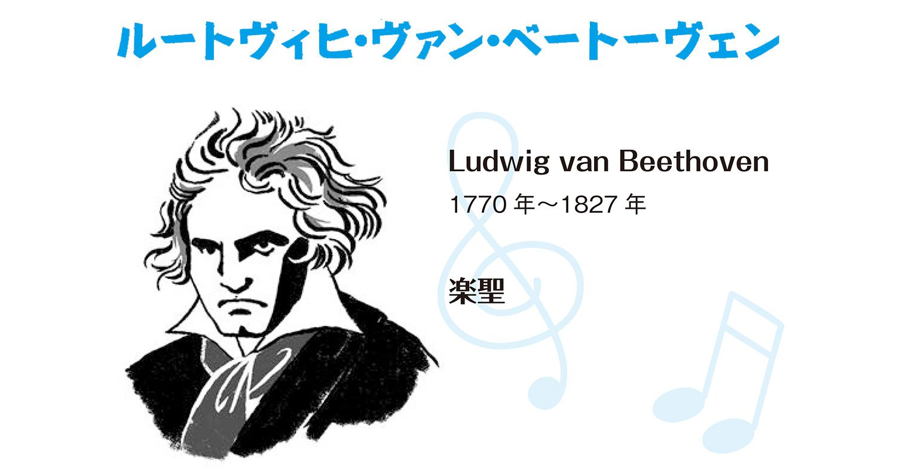
■古典派からロマン派へ
いまでこそ、日本でのクラシック音楽作曲家の人気ナンバーワンの座はモーツァルトに奪われましたが、ベートーヴェンは戦後初期までは、最も重要視されていた人物で、「楽聖」と讃えられていました。音楽室にある肖像画は、髪の毛はモジャモジャで、鋭い目で睨み、いかにも気の難しそうな人、「これがクラシックだ」って感じでした。
ベートーヴェンはクラシック音楽の古典派様式を完成させ、次の時代であるロマン派の幕開けをした人として、音楽史には位置づけられます。
生まれたのは、ドイツが東西に分断されていた時代の西ドイツの首都、ボン。ベートーヴェンが生まれたのは、1770年、父はボンの宮廷の歌手でした。祖父も宮廷歌手で宮廷楽長にまで出世した人です。つまり、ベートーヴェン家は父子三代にわたる音楽家だったわけです。
偉大な祖父はベートーヴェンが3歳の年に亡くなります。ですから、ベートーヴェンは祖父のことはほとんど覚えていません。宮廷楽長にまでなった祖父に対し、父はそれほど才能がなかったのか、世渡りが下手だったのか、出世できません。祖父の死後、自分が楽長になれると思い込んでいたらしいのですが、そうはなりませんでした。むしろ、自分では気づかないでいたのですが、これまでは「楽長の息子」として優遇されていただけだったのです。そういうわけで、ベートーヴェンの父は宮廷で冷遇されるようになり、そのウサをまぎらわすために、酒浸りとなります。
ベートーヴェンの苦難の人生は、祖父の死とそれによる父のアルコール中毒から始まるのです。さいわいにも、母は頭がよく優しい人で、あまり働かない夫をあてにせず、内職などをして、子供たちを育てていきます。
■神童としてデビュー
ベートーヴェンの父ヨハンは、彼の立場で考えると、気の毒な人です。父は宮廷楽長にまで上り詰め、息子は天才音楽家になるのに、彼は同業でありながら、パッとしないのですから。
ヨハンは息子に音楽の才能があると分かると、徹底的に教育することにしました。おそらく彼は、息子を神童にして大儲けしたモーツァルト家を意識していたのでしょう。幼いベートーヴェンが嫌がっても、音楽漬けにしました。ヴァイオリンを持たせて地下室に閉じ込めて練習させたり、一日中、ピアノを弾かせたりしたそうです。いまなら、児童虐待で逮捕されたかもしれません。
しかし、その甲斐もあって、ベートーヴェンは1778年3月、7歳と3カ月の時にケルンでコンサート・デビューしました。ところが、このとき「6歳」と年齢をごまかしたのです。父ヨハンが、7歳では「神童」としての衝撃がないと考えたからです。このため、ベートーヴェンは自分の年齢について大人になっても混乱していました。現在では、ヨーロッパの戸籍にあたる教会の洗礼名簿で1770年生まれと確定していますが、生年については1771年説もあったのです。
ベートーヴェンのデビューコンサートは、センセーションを巻き起こすほどの大評判は立ちませんでしたが、彼の才能は知られるようになり、「あの父親にまかせていたのでは潰れてしまう」と周囲の人が思い、宮廷楽団の音楽家たちが、自発的にベートーヴェンを教えてくれることになったのです。
こうしてベートーヴェンは、プロの音楽家たちから、ピアノやヴァイオリン、さらにはホルンまで習うことになりました。
その一方、父のアルコール依存症はますますひどくなり、ついに歌手として使いものにならなくなります。ベートーヴェンは11歳から宮廷楽団に入っていましたが、当初は無給でした。しかし、13歳になると給料が出るようになり、その分、父ヨハンが減給、つまりベートーヴェン家の収入全体は変わらない状態でした。父が稼ぎのほとんどを酒代に使ってしまうので、生活費の分はベートーヴェンに振り分けたのでしょう。
ベートーヴェンは14歳になると、ピアノの家庭教師もするようになります。そのため、中学にあたるギムナジウムには進学できませんでした。もう一家の大黒柱となっていたのです。
■モーツァルトとの一期一会
1787年4月、16歳になったベートーヴェンは知人たちが旅費を工面してくれ、ウィーンに音楽の勉強のために向かいます。実はこの旅については、本当に行ったのかどうかも含め謎が多いのですが、モーツァルトにも会ったという「伝説」があります。
モーツァルトはとても忙しい時期で、ボンから来た見知らぬ少年を、はじめは相手にしなかったのですが、ベートーヴェンがピアノを弾くと、とても興味を持ち、その隣の部屋にいた友人に、「彼はいつか語るに足るものを世界に与えるだろう。注目したまえ」と言ったと伝えられています。しかし、これはモーツァルトもベートーヴェンも死んだ後に広がった話なので、信憑性には乏しいのです。
2人の天才が、ほんの数時間でも一緒にいたという話は、とても「いい話」なのですが、残念ながら、確認はできません。たとえ会ったとしても、2人の交流はこれが最初で最後。以後は会ったこともなければ、手紙のやりとりもありません。そういうわけで、本当に会ったのかどうか、疑問が持たれています。
ベートーヴェンがこの時、どれくらい滞在するつもりだったのかも分からないのですが、ウィーンに着いて2週間もしないうちに、最愛の母が危篤だとの知らせが届き、ベートーヴェンはボンに帰ります。
母は7月に亡くなってしまいました。16歳にしてベートーヴェンは、酔いどれの父と、2人の弟という扶養家族を持つようになったのです。稼ぐだけでなく、弟の面倒と家事もみなければならなくなるのです。
■ベートーヴェンの運命
ベートーヴェンの音楽の才能は、演奏にとどまらず、作曲においても開花していきます。1792年に皇帝ヨーゼフ2世が亡くなると、「追悼カンタータ」を書き、次の皇帝にレオポルト2世が即位すると、「戴冠式カンタータ」を書いています。これらはベートーヴェンの生前は演奏されませんでしたが、ハイドンがロンドンに行っての帰路にボンに立ち寄った時に、この楽譜を見て、ベートーヴェンの才能を見抜き、「弟子にならないか」と誘うのです。
ベートーヴェンにはすでにワルトシュタイン伯爵をはじめ、貴族の後援者がいたので、彼らがボンを支配するケルン選帝侯に働きかけ、ベートーヴェンを宮廷の経費でウィーンに留学させることが決まりました。
こうしてベートーヴェンは1792年11月にボンを旅立ちます。これが、生まれ故郷との永遠の別れでした。22歳。
ベートーヴェンがウィーンに着いたのは、1792年12月のはじめ。この町では、ちょうど1年前にモーツァルトが亡くなったところでした。後世からみると、鮮やかなスター交代なのですが、この時点のベートーヴェンはウィーンではまったくの無名です。
事前の約束通り、ベートーヴェンはハイドンに弟子入りしますが、ハイドンは次のロンドン公演を控え、新作交響曲の作曲で忙しく、あまりかまってくれませんでした。そこでベートーヴェンは、ハイドンには内緒で他の作曲家に弟子入りし、一方、ピアニストとして貴族のサロンに呼ばれて演奏し、名声を得ていきます。良家の子女へのピアノの家庭教師の仕事もしました。
ウィーンに着いてすぐ、ベートーヴェンのもとに父の訃報が届きました。かつて「母危篤」の報にはすぐに帰ったベートーヴェンでしたが、父の死には冷淡で、知人に葬儀などをまかせ、帰りませんでした。残された弟たちは引き取ることになりますが、父の死により、ボンとの縁は完全に切れたのです。
ピアニスト・ベートーヴェンの人気は高まり、1795年、モーツァルトがやっていたように予約制の公開演奏会が開かれ、成功します。こうしてベートーヴェンはウィーン音楽界の寵児となるのです。
ベートーヴェンの人気は、即興演奏にありました。ベートーヴェンは子供の頃から、楽譜どおりに弾くことよりも、自分で即興で曲を作り、その場で弾いていくのが好きだったのです。
ところが、このベートーヴェンの栄光の日々はそう長くは続かないのです。
■難聴という不幸
ベートーヴェンは19世紀に入る直前の1800年に、初の弦楽四重奏曲と交響曲を完成させます。この時点では、ハイドンの作った枠組みに収まっていますが、やがてそれを突き抜けた、独自の世界が構築されていきます。
ところが、そのベートーヴェンの行く手に大きな障害が待っていました。すでに数年前から兆候があったのですが、耳が聞こえにくくなるのです。その原因は、結局のところ分かりません。つまり、治療もできず、ベートーヴェンは死ぬまで難聴に苦しみます。完全に聞こえないのではなく、ひどい耳鳴りがして聞こえにくくなるとか、そういう症状だったようです。
音楽家にとって、聴覚は命の次に大事なものです。それがおかしくなったのですから、音楽家人生が失われたといっても過言ではありません。30歳を過ぎ、いまさら他の職業に就くこともできず、悲嘆したベートーヴェンは死を考えるようになります。
自殺を考えたベートーヴェンは1802年５月からウィーン郊外の町ハイリゲンシュタットに滞在し、10月６日と10日に弟と甥に宛てた「遺書」を書くのです。しかしこの遺書は、送られることはなく、ベートーヴェンの死後になって発見されました。遺書を書くことでベートーヴェンは気持ちを整理し、苦悩とともに生きることを決意するのです。
ピアニストとして生きることは断念しますが、作曲家としては耳が聞こえなくなっても可能だと信じ、作曲家として生きることになります。
苦悩から勝利して歓喜へ──これがベートーヴェンの以後の音楽を貫くテーマとなりました。その最も分かりやすい例が、交響曲第5番です。日本でだけ「運命」と呼ばれていますが、これはベートーヴェンが付けたタイトルではありません。冒頭の"ジャジャジャジャーン"という部分についてベートーヴェンが「運命はこのように扉を叩く」と弟子に説明したという逸話が日本に伝えられ、こう呼ばれるようになったのです。
第5番を「運命」と呼ぶのは、本来の音楽鑑賞の姿勢としては間違っているのですが、あまりにもぴったりなので、定着してしまいました。この曲の最後は、勝利の歓喜の爆発で終わるのです。
さて、いま「勝利の歓喜の爆発で終わる」と書きましたが、この曲には歌詞はありません。言葉のない楽器だけで演奏されるのに、どうして、「勝利の歓喜の爆発で終わる」と分かるのでしょう。たしかにベートーヴェンはそんなことは説明していないのですが、「そう聴こえる」のです。
モーツァルトの後期から、楽器だけで演奏される交響曲などの音楽は、感情表現が可能になってきました。ベートーヴェンはモーツァルトの未完の革命をさらに推し進め、楽器だけでも感情はもちろん、思想だって表現できることを実践したのです。
音楽は、ついに「何かを表現するもの」になりました。
それと同時に、音楽は「商品化」されるのです。それまでの音楽は雇い主のために作られていましたが、ベートーヴェンの音楽は楽譜として出版され、価格がつけられて流通しました。入場料をとるコンサートも始まっています。このように音楽マーケットが確立した時代に、ベートーヴェンは登場したのです。
ピアノ曲や室内楽曲の楽譜は、貴族や富裕な市民が自分で演奏するために買いましたが、交響曲の楽譜は、それを読んで楽しむためのものでした。レコードがないので、このようなかたちで音楽は複製され、売られ、鑑賞されていたのです。
ベートーヴェンは鑑賞するための音楽をマーケットに提供できた、最初の音楽家だったといえるでしょう。
■《英雄》という革命
第5番は1808年に初演されますが、その4年前の1804年の第3番《英雄》こそが、交響曲における「革命」でした。この曲は最初、フランスの英雄ナポレオンに捧げようとして書かれたものでしたが、ナポレオンが皇帝になってしまったため、ベートーヴェンは、ナポレオンに捧げると書いた表紙を破ったとも伝えられます。
ナポレオンに献呈する予定ではありましたが、これは別にナポレオンという英雄を描いたものではありません。「英雄的な交響曲」という意味で、とても勇壮な曲です。ベートーヴェンの1番と2番はハイドンやモーツァルトの後期の交響曲のように、20分前後の曲でしたが、この3番は40分を超える、当時としては「超大作」でした。ですから、初演のときは「長いだけで、疲れた」とさんざんな評価だったようです。ベートーヴェンもまた時代よりも一歩も二歩も先んじていたわけです。
ベートーヴェンのさらなる革命は続きます。第5番と同時期に書かれ、同じ日に初演された第6番《田園》は、明確に「田園」の光景や田園を歩く気分を音楽で表現したものです。このような音楽は、後に「標題音楽」と分類されるのですが、その最初のものでした。
ベートーヴェンはこのように、楽器だけでもさまざまな感情や思想が表現できる、それこそが音楽芸術であると考えていくわけですが、最後の交響曲となる第9番では、やはり楽器だけでは足りなくなり、シラーが書いた「歓喜に寄せて」という詩を第4楽章に組み入れ、大合唱曲とします。これが、日本では暮れになると演奏される「第九」です。第3番で40分を超えた交響曲は、「第九」では１時間を超えるようになってしまいました。
この「第九」は、1824年に初演されました。その後、第10番にも着手しますが、断片的なもので終わり、1827年、ベートーヴェンは56歳で亡くなります。
家族と友人だけだったモーツァルトの葬儀とは異なり、2万人とも3万人とも伝えられるウィーン市民が参列した、空前の葬儀となりました。ベートーヴェンはウィーンの英雄となっていたのです。
交響曲以外にも、ピアノ・ソナタ、ピアノ協奏曲、弦楽四重奏曲などあらゆるジャンルに傑作を遺しましたが、残念ながらオペラは《フィデリオ》1作でした。
その人生において、一度も、誰にも「雇われなかった」という点で、最初の自立した音楽家でした。
ベートーヴェンは何人もの女性に恋愛感情を抱いていたようですが、一度も結婚しませんでした。死後、「不滅の恋人」へ宛てたラブレターが見つかり、この相手が誰なのかを巡り、さまざまな説があります。
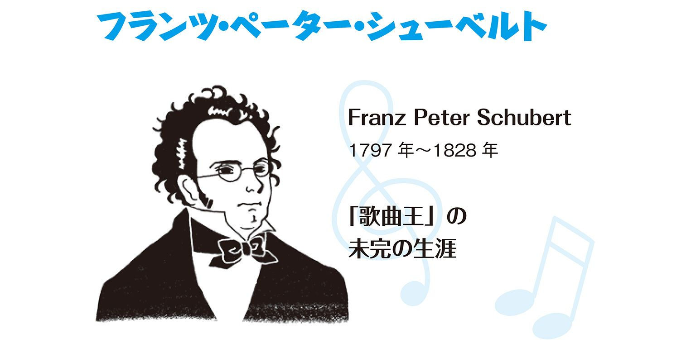
■生前は無名の大作曲家
ベートーヴェンの死の翌年、31歳の青年が後を追うようにして亡くなりました。シューベルトです。この本のこれまでの音楽家たちは、死後忘れられてしまう人はいても、存命中は大音楽家として活躍していました。音楽史に残る大作曲家のなかで、存命中はほぼ無名で死後になって名声が高まった最初の人が、このシューベルトなのです。
シューベルトは、音楽に限らず、自分の才能は信じているのになかなか芽の出ない人にとって、希望の星とも言えます。
シューベルトは31歳という短い生涯、そして、プロの音楽家としての実績はほとんどないにもかかわらず、その作品数は膨大です。断片的なもの、下書きで終わったものも含めれば1,000曲近くあるそうです。なかでも有名なのが《未完成》と呼ばれる交響曲と、《野ばら》《魔王》《冬の旅》《死と乙女》などの歌曲です。歌曲をたくさん作ったことから「歌曲王」と呼ばれることもあります。
■順調な少年時代
シューベルトは、1797年にウィーン近郊で生まれました。父は小さな学校の経営者でした。14人きょうだいでしたが、成人したのは5人だけ──フランツと3人の兄と妹──でした。アマチュアでしたが、父はチェロをたしなみ、2人の兄は父からヴァイオリンを教わっていました。長兄は父の学校を継ぎ、次兄も教員となり、すぐ上の兄は風景画家になります。父はシューベルトも教員にしようと考えていたようです。
音楽好きな家庭でしたので、シューベルトも幼少の頃から父や兄に音楽を教わります。父からはヴァイオリン、長兄イグナーツからはピアノを習いました。しかし、すぐにアマチュアの2人ではとても教えられないと、専門家に委ねられます。つまり、シューベルトもまた「神童」だったのです。
シューベルトの音楽教育を頼まれたのは、リヒテンタール教会の聖歌隊指揮者でした。
1808年になると、11歳のシューベルトは全寮制の帝室王位寄宿神学校（コンヴィクト）の奨学金を得て、そこで学ぶようになります。この学校では、読み書き、算数などの一般教育の他に、音楽の専門教育も受けました。
また、宮廷礼拝堂少年聖歌隊で歌っていました。この聖歌隊が、いまのウィーン少年合唱団です。
神学校には音楽教師として、モーツァルトのライバルだったアントニオ・サリエリがいて、イタリア式の歌曲の作曲について学びました。これが後の「歌曲王」の基礎となったのです。
しかし、楽器だけで演奏する器楽曲や室内楽曲、さらにはオーケストラの曲の作曲については師とあおぐ人はなく、ハイドンやモーツァルトの作品の楽譜を読み込んで、独学で勉強しました。また、神学校の学生オーケストラにも入り、ヴァイオリンを弾いていましたが、ここでオーケストラの魅力に取り憑かれます。
このへんまでは、シューベルトの音楽人生は、順調でした。
■ベートーヴェンの音楽との出会い
1809年5月、ナポレオンのフランス軍によって、首都ウィーンは包囲されました。ハイドンが死ぬのがこの時です。シューベルトはびくびくしながら暮らしていたわけですが、この頃にオーケストラの練習で、ベートーヴェンの交響曲第5番と出会います。この曲に心を奪われたシューベルトは、以後、ベートーヴェンを尊敬してやまなくなるのです。
しかし、同じ都市にいながらも内気なシューベルトはベートーヴェンのもとを訪れることはありませんでした。その作品に憧れ、自分もこのような曲を書きたいと夢見ていただけだったのです。
この神学校では16歳まで学びました。師はサリエリくらいしかいないのですが、ここで得たのは多くの友人たちでした。モーツァルトは父との関係がべったりで、その伝記に同世代の友人はほとんど登場しません。ベートーヴェンはボン時代には何人かの友人ができていましたが、ウィーンに出てからは後援者、あるいは弟子といった上下関係の知人は多くても、横のつながりの友人は少なかったようです。
それに比べると、シューベルトは多くの友人に囲まれていたのです。彼は人に好かれる性格だったのか、あるいは、「こいつはどこか頼りないから支えてやらなければ」と思わせるものを持っていたのかもしれません。
実際、シューベルトが貧しくて、五線紙を買えないと知った友人たちは、自分もそれほど裕福ではないのに、カンパを寄せ合い、五線紙を買い与えたというエピソードが残っています。
■父との確執
さて、なぜシューベルトは貧乏だったのでしょう。父は学校の経営者なので、大富豪ではないにしても、息子が五線紙も買えないほど貧乏であるはずがありません。実は、シューベルトは音楽に夢中になりすぎて、学業がおろそかになり成績が下がってしまいました。それを知った父は、音楽はほどほどにして学業に専念するように諭すのですが、シューベルトは「音楽を捨てられない」と聞き入れず、「お前は、勘当だ」となってしまったのです。というわけで、仕送りはなくなりました。学費は奨学金があったのでどうにかなりましたが、小遣いはなくなってしまったのです。
勘当されて1年半ほど後の1812年、母がチフスで亡くなりました。
父は母が重篤になってもシューベルトに知らせなかったので、母の死に目に会えませんでした。母の死を知ったシューベルトは、自分に知らせてくれなかった父を恨みます。
母は、死の床で父に、「フランツが音楽を続けることを認めてあげて」と頼みました。そのため、父もようやくシューベルトが音楽を続けることを認め、勘当は解かれました。
1813年にシューベルトは神学校を退学し、父の学校の教師見習いになりました。音楽以外の成績が悪く落第したのと、声変わりで聖歌隊にいられなくなったこと、さらに、教員は徴兵されなかったので、父が強引に教員にしたのがその理由のようです。
■演奏できない作曲家
ベートーヴェンまでのこれまでの作曲家は、名演奏家でもあったのですが、シューベルトは結局、楽器演奏の名手にはなりませんでした。演奏家になるには子供の頃からのスパルタ式の英才教育が必要ですから、それを受けなかった点で、シューベルトは不幸でした。彼が音楽家としてデビューできなかったのは、ここにも理由があります。神童から天才少年になる才能はあったはずなのに、そうならなかったのです。
才能は持っているだけではだめで、それを発見し、伸ばし、さらには世間に売り込んでくれる人がいないと、開花するものではありません。父親が教育者で、アマチュア音楽家であったことが、この場合、マイナスに作用しました。父は、シューベルトの才能をアマチュアとしてしか捉えることができなかったのです。
モーツァルトやベートーヴェンの父のように、息子の才能で儲けてやろうと考えるのは、世間の常識ではひどい親ですが、結果としては、そういう親だから、彼らの才能は開花したわけで、シューベルトの父のように、常識的な人は息子の才能を潰してしまうこともあるわけです。
結果として、シューベルトは作曲することしかできない音楽家となります。しかし、この時代、作曲コンクールもないので、無名の作曲家の作品の演奏機会もなければ、出版の機会もありません。シューベルトのような専業作曲家を世の中に出すシステムがまだなかったのです。
シューベルトは趣味として、作曲を続けます。
シューベルト初期の傑作として歌曲《魔王》があります。18歳のときの作品ですが、ゲーテの詩を歌詞にしたものです。シューベルトは、この曲のピアノ伴奏で、革命的なことをしています。歌詞が展開する物語を補完するように、ピアノが、魔王から逃れようと疾走する父子の乗った馬車を表現しているのです。このピアノ伴奏によって、聴く人は、歌詞という「言葉」が直接語っていない、馬車が疾走していく光景を脳裡に描くことになります。音楽が「光景」を表現するのです。
シューベルトの音楽様式は古典派の枠組みのなかにありましたが、音楽で物語を表現するというロマン派の方法論を、先駆けていたのです。
■売れない作曲家
教員になったシューベルトですが、もともとやりたい仕事ではないので、熱心ではなかったようです。趣味で続けている作曲に熱心でした。どうしても音楽家になりたいので、ライバッハ（現在のリュブリャナ）の音楽監督に志願しますが、不採用になってしまいます。
1816年、こうした窮状を知った学生時代の友人が、自分の家に住み、好きなように作曲をしたらいいと提案してくれます。こうしてシューベルトは、友人の家の客人となり、最初は音楽の家庭教師をしていましたが、やがて作曲に専念するようになります。しかし、まったくお金になりません。コンサートでも演奏されないし、出版もされないのです。
その一方で友人たちの輪は広がり、友人となった金持ちの商人の家で暮らすようになり、その家のサロンに友人たちが集い、シューベルトの曲を演奏するようになっていきます。それは「シューベルティアーデ」と呼ばれるようになり、現在まで続く、シューベルトを讃えた音楽会組織になるのです。
友人たちのおかげで生活はできましたが、音楽家として脚光を浴びるまでにはいたらず、シューベルトは「売れない作曲家」でした。それでも、作品がコンサートで演奏されるようになったり、友人が出版社を強引に口説いて出版させたりして、その名は少しずつ知られるようになっていました。
1822年、シューベルトはついに憧れの人ベートーヴェンと対面しました。ベートーヴェンはシューベルトの才能を認めたようですが、師弟関係になったわけでもなく、友人にもなりませんでした。この年、後に《未完成交響曲》と呼ばれる交響曲を作曲しています。
1827年3月にベートーヴェンが亡くなった時、シューベルトはもちろん葬儀に参列しました。
その1年後の1828年春、シューベルトの生涯で最初の、そして最後となる彼の作品の演奏会が開かれました。いよいよ、「これからだ」という感じになってきたのです。
ところが、この年の11月、シューベルトはまるでベートーヴェンの後を追うかのように、31歳9カ月で死んでしまいました。10月にレストランで食べた魚料理が原因の腸チフスだったと言われています。
こうして、「売れない作曲家」としてのシューベルトの短い生涯は終わりました。彼が「大作曲家」となるのは、次の世代が、シューベルトを発見してからとなるのです。
ＣＯＬＵＭＮ
未完成と『白鳥の歌』
作曲家に限りませんが、人間は自分の寿命が予測できないため、ある作品を未完成のまま逝ってしまう例が少なくありません。その意味では、ベートーヴェンの交響曲第10番も未完成ですし、ブルックナーの第９番やマーラーの第10番も未完成なのですが、シューベルトの交響曲第８番だけが、特別に《未完成交響曲》と呼ばれています。４楽章あるべきなのに、２楽章までしかないからです。
シューベルトのこの曲は、1822年に第１楽章と第２楽章が作曲され、なんらかの理由で中断し、どうもそのままになっていたらしいのです。この曲が死後に発見されると、この２つの楽章だけでも十分に名曲なので、《未完成交響曲》と名付けられて、よく演奏されるようになりました。
シューベルトが最後に書いたとされるのが、歌曲《鳩の便り》で、これは死後に、『白鳥の歌』という歌曲集に収められました。このことから、一般に、作曲家の最後の作品のことを「白鳥の歌」というようになりました。
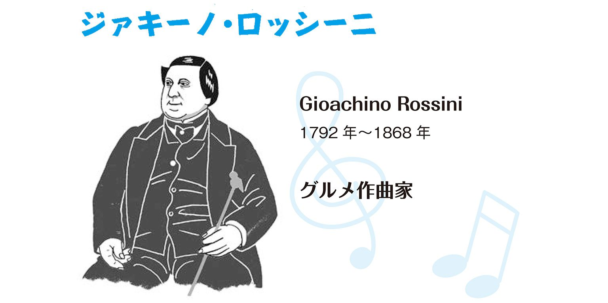
■久々のイタリアの大作曲家
この本もイタリアのヴィヴァルディが始まりでしたが、音楽の歴史はイタリアから始まりました。しかし、18世紀あたりから、ドイツ音楽が隆盛となります。もちろん、イタリアでもずっとオペラは上演され、新作が生まれていましたし、それ以外のジャンルの曲もあったのですが、「名曲」として演奏され続けるものは、しばらく生まれませんでした。
音楽先進国のはずのイタリアが低迷していた頃、彗星のごとく登場し、大活躍の後に消えてしまったのが、ロッシーニです。
ロッシーニはイタリアのペーザロで、1792年に生まれました。モーツァルトが亡くなった翌年になります。父は食肉工場で働いていましたが、トランペット奏者でもあり、母は後にオペラ歌手となる人でした。
ロッシーニの父はフランスびいきだったので、イタリアをナポレオンが征服した時は喜んでいました。というのも当時のイタリアはオーストリアの支配下にあったので、ナポレオンはそれから解放してくれたわけです。しかし1796年にオーストリアが奪還すると、フランスの味方をしていた父は投獄されてしまいました。働き手を失ったので母は歌劇場の歌手になり、生計を立てていました。やがて父が釈放されます。
■18歳でオペラ作曲家デビュー
両親とも音楽に関係のある仕事でしたので、ロッシーニも幼い頃から音楽教育を受けました。演奏よりも、12歳で四重奏曲を作曲するなど、作曲の才能を示していたのです。
14歳でボローニャの音楽学校に入り、在学中にオペラを作曲しています。1810年、18歳の年に《結婚手形》が初演され、これが正式なデビュー作となりました。この作品もそうでしたが、ロッシーニは喜劇を得意とします。
2年後の1812年に《試金石》がスカラ座で初演されると、大ヒットし、これによってその名が広く知られるようになります。1815年にはナポリのサン・カルロ劇場音楽監督に就任し、次々と作品を書いていきます。音楽監督であり、座付き作曲家でもあったのです。
なかでも1816年、24歳の作品《セビリャの理髪師》は、フランスのボーマルシェの戯曲のオペラ化ですが、大ヒットしました。これはモーツァルトの《フィガロの結婚》の前日譚にあたる話です。
ロッシーニの作品はイタリアだけでなく、ウィーンでも人気が出ました。ロッシーニがウィーンに登場するのは、1822年。まるで作風が違うベートーヴェンも、ロッシーニに会い、その才能を讃えています。もっとも、ベートーヴェンはロッシーニばかりがもてはやされている状況には、怒っていたようです。
■パリ征服
ロッシーニは1823年にパリを訪問し、大歓迎されます。このパリ来訪をフランスの文豪スタンダールは「ナポレオンは死んだが、別の男が現れた」と書いています。
翌1824年、32歳の年に、ロッシーニはパリに拠点を移します。オペラ座の音楽監督になったのです。
当時のパリはフランス革命の混乱、ナポレオン登場と失脚、王政復古という怒涛のような時代は終わっていましたが、この年に国王ルイ18世が亡くなり、シャルル10世が即位します。その翌年にロッシーニは即位記念のオペラ《ランスへの旅》を作曲して国王に献呈、「フランス国王の第一作曲家」の称号と終身年金を得ます。このパリ時代は、喜劇だけでなく、シリアスな題材のオペラも書きました。
1829年、人気も絶頂にあり、気力・体力ともにまだまだ盛んなはずの37歳の年に、ロッシーニは引退を宣言します。最後のオペラとなったのが、《ウィリアム・テル》でした。プロの作曲家としてデビューしてからの20年間に39作のオペラを書きました。全盛期には年に4作から5作というハイスピードで、まさに「量産」していました。現在のベストセラー作家のような活躍ぶりだったのです。
その間の1822年には歌手と結婚しました。ロッシーニは美少年だったので、青少年期から女性にもて、いったい何人の女性と関係があったのかは、まさに、数えきれないほどだったと伝えられていますが、結婚は、この一度だけでした。
■引退後はグルメ
オペラ座を退いた後の1830年、フランスはまたも革命が起き（7月革命）、国王シャルル10世はイギリスに亡命しますが、ロッシーニは新政府とかけあい、シャルル10世が約束した年金は引き続きもらえることになりました。このあたりは、しっかりしています。
引退の理由は何だったのでしょうか。売れなくなったからではありませんでした。才能がなくなったからでもないようです。病気でもありません。遊んで暮らせるだけ稼いだからというのは、半分は当たっているようです。
ロッシーニは37歳でオペラからは引退しますが、その後も他のジャンルの曲は作っていました。しかし、44歳で完全に引退し、パリを引き払って、イタリアのボローニャ、のちにはフィレンツェで隠居生活を送っていました。
1855年、63歳の年には再びパリで暮らすようになり、今度は高級レストランを経営します。ロッシーニは音楽も好きでしたが、それ以上に食べることが好きだったのです。「食べ、愛し、歌い、消化すること──これが人生と呼ばれるオペラの四幕である」と言ったことがあるそうです。
彼の「食」へのこだわりはものすごく、自分のレストランで出す豚肉のために、養豚場を持つほどでした。
このレストランで出された料理のひとつが、牛フィレステーキにフォワグラとトリュフのソテーを添えた「トゥールヌド・ロッシーニ」です。
このように、料理の世界でも「名作」を遺した人なのです。晩年には、料理の名前を付けたピアノ曲も作っています。
1855年からの二度目のパリ時代には、オペラはまったく書きませんでしたが、プライベートな演奏会をよく開き、そこで演奏するために、150曲にのぼるピアノ曲や声楽曲を書いています。何を書かせても、早く、それゆえに多作なのがロッシーニの特徴です。
また、それまで教会の儀式でのみ演奏されていた宗教音楽を、一般のコンサートでも演奏するようにさせたのも、ロッシーニの隠れた功績のひとつとされています。彼の宗教曲《スターバト・マーテル》も、コンサートのための曲でした。13世紀に作られたカトリック教会の聖歌をもとにして作曲されたものです。このほかにも、数多くの宗教音楽を遺しました。
■死後の評価
美食家に病気はつきものですが、晩年は淋病、躁鬱病、慢性気管支炎などに悩まされ、さらには直腸癌となり、その手術の際に丹毒に感染して、1868年、76歳で亡くなりました。
ロッシーニは、存命中は「超」がつく人気作曲家でしたが、その死後、彼の曲はほとんど演奏されなくなりました。20世紀まで歌劇場のレパートリーに残っていたのは《セビリャの理髪師》くらいでした。
そのわりには有名なのは、オペラ《ウィリアム・テル》の序曲です。運動会の曲にもなり、ファミリー向きのコンサートの定番になっているからでしょう。しかし、このオペラも、序曲は有名でも、めったに上演されません。
つまり、ロッシーニは、その時代の好みにあまりにもぴったりだったので、時代が変わると聴かれなくなってしまったのです。ロッシーニ自身に、後世に残る名作を作ろうという意識がなかったからかもしれません。そのあたりも、ベートーヴェンと対照的です。
ロッシーニ作品は歌劇場からも聴衆からも見放されてしまいますが、彼によってイタリア・オペラは盛り返し、ベッリーニ、ドニゼッティといった大作曲家を生み、19世紀後半になると、ヴェルディによって頂点に達し、プッチーニへとその伝統が続きました。
ロッシーニも20世紀の終わりになると、再び評価されるようになります。
ＣＯＬＵＭＮ
ロマン派、ロマン主義
ベートーヴェンのあたりから、「ロマン派」「ロマン主義」という言葉が登場しました。「ロマン」は日常でもよく使われる言葉ですが、よく考えると、意味が分からない言葉でもあります。
たとえば、女の子が「ロマンチックな恋がしたいわ」と言う時の「ロマン」と、秘境を探検に行く男が「これが男のロマンだぜ」と言う時の「ロマン」には、ずいぶんと隔たりがあるように思うのです。
「ロマン」のおおもとの意味は、「ローマ的」です。「ローマ」とは、古代のローマ帝国のローマです。当時のローマ帝国には大きく分類して2つの言語がありました。ひとつはラテン語で、公用語であり知識階層が使っていた言葉です。もうひとつがロマンス語と呼ばれるもので、庶民が使っていた言葉で、このロマンス語で書かれた物語が、「ロマンス」と呼ばれるようになったのです。
「ロマンス」は庶民向きの、日本風にいえば「通俗文学」「大衆文学」、つまりエンターテインメント小説のこと。そこから、ロマンス語ではなくても、庶民の娯楽のために作られた物語を「ロマン」というようになったのです。
この「ロマン」が「主義」とか「派」になるのは18世紀末から19世紀にかけてです。フランスとドイツのロマン主義は少し違うし、音楽と文学と美術のそれぞれのロマン主義も微妙に異なります。
ここでは音楽に絞りますが、ロマン主義音楽とは、単純にいえば、「自由な音楽」。古典派の時代は形式が重視されていましたが、その形式から自由になり、作曲家それぞれの感性が重視されるようになりました。
さらに、標題音楽＝「何かを描いた音楽」が、重要になっていきます。そして、これまで別々のものだった美術や文学とも関係が深まっていくのです。
音楽においては、産業革命を経て楽器の改良も進みました。鶏と卵の関係に似ていますが、大きな演奏会場ができたので、楽器に大音量が必要とされたとも言えるし、大きな音の出る楽器に改良されたので大会場で演奏されるようになったとも言えるのです。いずれにしろ、その会場を埋めるだけの豊かな市民層の出現という背景がありました。
こうして、ピアノはより大きな音が出せるようになり、オーケストラも編成が巨大化し、それにふさわしい曲が必要になったとき、音楽家と聴衆は、大袈裟な音楽を求めました。
音楽を大袈裟にするために、「物語」が必要になったのかもしれません。物語音楽の隆盛を迎えます。ひとつは歌曲、ひとつはオペラ、そして、楽器のみで物語を表現する標題音楽です。
音楽は、19世紀に突入するとともに、大きく変わります。
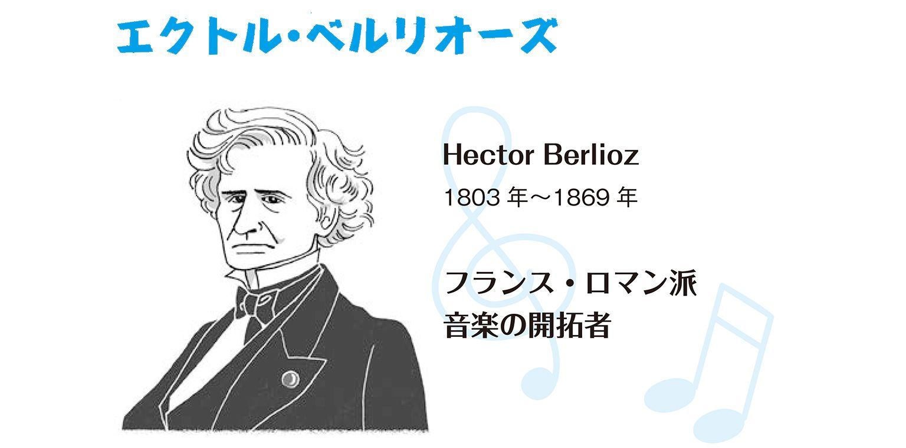
■フランス人は自由が好き
これまでバッハ以後、ほとんどドイツ系の音楽家が続きましたが、もちろん、フランスやイタリアでも音楽は盛んでした。
古典派音楽は、ウィーンを中心に発展したわけですが、これはドイツ人の性格に合っていたのかもしれません。ある意味でゴヂゴチの形式に則った音楽だからです。
一方、フランス人は縛られるのが嫌いな国民性なので、音楽においても、形式を重視するものは発展せず、ウィーン風の古典派音楽はそれほど発展しなかったようです。
ベースはドイツの古典派音楽にありながら、そこから飛躍して独自の新時代の音楽を築いたのが、ベルリオーズ。フランス近代音楽は、彼から始まるのです。
■医者の息子
ベルリオーズは1803年にフランス南部、リヨンとグルノーブルのほぼ中間に位置するラ・コート＝サンタンドレで生まれました。ナポレオンが皇帝になるのが1804年なので、その前年、革命直後の大動乱は終わっていましたが、中央での政変がひっきりなしに起きていた時代です。
父親は開業医でした。息子も当然、自分の後を継いでくれると思っていました。ベルリオーズもそのつもりで、18歳になると、パリの医学の大学に入ります。
ベルリオーズの家は、趣味として音楽を楽しんではいましたが、息子を音楽家にさせようとはまったく思っていないので、とくに音楽の勉強はさせませんでした。
地方から出てきたベルリオーズは、この刺激的な大都会パリの魅力にすっかり取り憑かれてしまいます。なかでも、音楽が彼の心を捕らえました。ベルリオーズは医学の勉強よりも、音楽に夢中になり、医科学校を退学、ル・シュウールという音楽家に弟子入りします。
ベルリオーズは思い込みの激しい人でした。自分を中心にして世界がまわっていると思うタイプの人です。彼のこの性格は、後に傑作を生むエネルギーとなりますが、この時点でも、親の意見は無視して医学を捨て、音楽の道を選びました。親の言いなりになる「いい子」では、フランスには大作曲家は生まれず、平凡な医師がひとり増えただけでしょう。
ベルリオーズが音楽の勉強を始めた2年目の1823年、イタリアで生まれてウィーンで大人気だったロッシーニがパリのオペラ座の音楽監督となりました。当時、爆発的な人気があったのが、ロッシーニのオペラでした。
■ベートーヴェンに感動
ベルリオーズは、ロッシーニにはそれほど影響は受けませんでした。彼がこの時期のパリで影響を受けたのは、ベートーヴェンの交響曲だったのです。
パリ音楽院のオーケストラは教授と卒業生のなかでも優秀な人によって構成されています。当時のパリのみならず、ヨーロッパ有数のオーケストラのひとつでした。このオーケストラがベートーヴェンの交響曲を演奏していたのです。
1827年にベートーヴェンは亡くなりましたが、その翌年の1828年にパリでは彼の９曲の交響曲が連続して演奏され、そのコンサートを聴いたベルリオーズは、なかでも第6番《田園》に感銘を受けました。ベルリオーズは《田園》を聴いて音楽で情景が描けることを知り、自分が書きたいのはこういうものだったんだ、と気づくのです。
■女優への恋
ベートーヴェンの交響曲を聴いた頃、ベルリオーズは恋をしていました。それは片思いでした。相手は、パリに公演に来ていたイギリスのシェイクスピア劇団の女優、ハリエット・スミスソンでした。彼は『ハムレット』のオフィーリアを演じた彼女に一目惚れしたのです。
ハリエットはパリで評判になっていました。そんな人気女優が、無名の青年の恋を受け入れてくれるはずがない。ここまではベルリオーズも冷静な判断をしました。しかし、彼はこう考えるのです。
「俺も有名になればいいんだ」
こう考えたベルリオーズは自腹を切ってオーケストラを雇い、会場も借りて、自分がこれまで作曲した曲のコンサートを開きます。しかしハリエットは無名の音楽家の作品のコンサートには興味がなく、聴きに来てくれません。コンサートは好評でしたが、赤字でした。ベルリオーズは恋も実らず、借金だけが残ったのです。
■《幻想交響曲》
しかしベルリオーズは諦めません。彼は自分が天才であると確信していました。ベートーヴェンの交響曲を聴いたことで創作意欲が燃え上がっていたので、一気呵成に交響曲を書き上げます。それが、《幻想交響曲》。副題として、「ある芸術家の生涯のエピソードから」とあり、全部で5楽章で、それぞれの楽章ごとに、何が描かれているか、そのストーリーも記されています。
5楽章なので「交響曲は4楽章」という形式も逸脱し、標題音楽にした点が革命といえるのですが、もちろん、5楽章でなおかつ標題がある点は、ベートーヴェンの《田園》と同じです。ベルリオーズはベートーヴェンがいくつも達成した革命のなかの、「標題を持つ交響曲」をさらに発展させたのです。ベートーヴェンが描いたのは、「田園」という「風景」や、あるいはそこでの「気分」でしたが、ベルリオーズの《幻想交響曲》は「物語」を音楽で描いたのです。
この《幻想交響曲》によって、音楽だけで物語を表現する標題音楽が確立され、ロマン派音楽の本格的幕開けとなりました。
《幻想交響曲》はオーケストラだけで──つまり言葉がないのに──物語が展開されることも衝撃でしたが、そこで展開される物語もスキャンダラスでした。ベルリオーズ自身がつけた説明には、「若い芸術家が恋の悩みからアヘンで自殺を図るが、量が足りなかったので、死ぬことはなかったものの、その代わりに幻覚を見た」とあるのです。「幻想」という題なのでロマンチックなものかと思って聴くと、かなりグロテスクな音楽なので、驚くでしょう。子供なら怖がって、まさに悪い夢でも見そうな音楽です。実際、ベルリオーズはアヘンを吸っていて、幻覚症状になったことがあり、その経験も生かされているのです。
書いているときは、ハリエットのことはあまり頭にないようでしたが、そもそもの出発点は、彼女の気をひくためでした。女性への恋が芸術を生む──ベルリオーズと《幻想交響曲》の物語は、まさに、ロマンそのものなのです。
■失恋、新しい恋、婚約、破局
《幻想交響曲》は1830年4月に完成しました。しかし、すぐに初演されたわけではありません。演奏してくれるオーケストラと会場を探さなければならなかったのです。ピアノ曲ならば、作曲家がピアノを弾ければ簡単に発表できますが、オーケストラ曲は簡単には演奏してもらえません。
ベルリオーズはこの年、別の作品でローマ賞を授賞していました。フランスの芸術アカデミーが与える賞で、奨学金とローマへの留学という特典があります。若い芸術家が一躍有名になるにはこれを受賞するのが手っ取り早く、ベルリオーズは3回挑戦して、落選していました。彼の作品が新しすぎて、保守的な審査員に受け入れられなかったのです。
しかし、この1830年には、ベルリオーズは妥協して、保守的な作品を書いて見事、受賞を果たしました。賞というものの実態はこんなものです。
そして12月5日、パリ音楽院管弦楽団によって、ベルリオーズの《幻想交響曲》は初演されたのでした。当時としては大編成で難しい曲でしたので、完璧な演奏とはいきませんでしたが、評判は上々でした。
一旗揚げたベルリオーズは、これでハリエットに求愛する資格を持ったわけですが、この頃、彼には別の恋人がいました。ハリエットはパリから他の都市へ巡業に出てしまい、もうこの恋は実らないと思ったベルリオーズは新しい恋に落ち、今度は実って婚約します。ところが、ローマ賞を受賞したので、ローマへ留学しなければならなくなります。結婚は留学を終えるまで延期となりました。
ベルリオーズはローマへ行き、遠距離恋愛が始まります。メールもケータイも、固定電話すらない時代ですから、遠く離れた婚約者とは手紙のやりとりしかできません。
ローマへの単身赴任ならぬ、単身留学にベルリオーズは6週間で我慢できなくなり、フランスへ帰ることにします。その旅の途中のフィレンツェで、ベルリオーズは婚約者の母からの手紙を受け取りました。そこには、彼女がピアノ・メーカーの御曹司と結婚すると書いてあったのです。気も狂わんばかりになったベルリオーズは、不実な婚約者とその母と結婚相手を殺してやると決意してパリへ向かおうとしますが、さすがに途中でばからしくなり、ローマに戻ります。
なんとも、エキセントリックな人です。
■同世代の音楽家たちとの出会い
ローマ留学中、ベルリオーズはメンデルスゾーンと知り合いました。ベルリオーズはメンデルスゾーンの才能を心から尊敬し、「凄い奴だ」と思っていました。メンデルスゾーンは上辺は親しくしていましたが、内心ではベルリオーズをはったりだけの男と軽蔑していたようです。
1832年にパリに戻ったベルリオーズは、前年秋からパリで暮らしていたショパンとも知り合いになります。その頃、ハリエットもパリに戻っていました。前回は大入りとなった彼女の芝居でしたが、もうその人気はなくなっていました。落ち目になったハリエットは、ベルリオーズと知り合うと、あっさりと結婚に同意します。彼女は興行の失敗で負債を抱えており、それから逃れるための結婚でした。
ベルリオーズはハリエットの経済状況を救う目的でコンサートを開きますが、そのときにピアノを弾いたのがショパンでした。
こうしてベルリオーズは1833年11月に、憧れの女優と結婚したのですが、この結婚はすぐに破局を迎えました。ハリエットはフランス語が得意ではなく、ベルリオーズも英語ができないという言葉の壁もありましたし、何よりもベルリオーズが好きになったのはハリエットその人ではなく、彼女が演じたオフィーリアでありジュリエットであったことに、結婚してから気づいたのです。「愛は幻想」でした。2人は1841年には別居、ベルリオーズは歌手と同棲するようになり、1854年にハリエットが亡くなると、その歌手と結婚しました。
■演奏以外は何でもできた人
ベルリオーズは青年になってから音楽に目覚め、勉強を始めた点で、これまでの作曲家とは決定的に違いました。シューベルトもそうでしたが、「演奏しない音楽家」が誕生したのです。同時代にはショパンのように自作自演の音楽家もたくさんいましたが、演奏と作曲とは、19世紀半ばになって、分離していくのです。
さらに、ベルリオーズは楽器の演奏はしませんでしたが、指揮者として交響曲のコンサートのステージに立ち、オペラ指揮者としてピットで指揮していました。自作だけでなく、他人の書いた作品も指揮しています。
さらに自分のコンサートの興行師でもありました。パリだけでなく、ドイツ各地、さらにはロシアにまで、演奏旅行に出かけています。
《幻想交響曲》以外にも、劇的物語《ファウストの劫罰》、劇的交響曲《ロメオとジュリエット》、歌曲集《夏の夜》、交響曲《イタリアのハロルド》、オペラ《ベンヴェヌート・チェッリーニ》《トロイアの人々》などを遺しました。
彼の多くの作品が文学作品を題材にしたもので、いずれも発表当時はかなり異端視されたものでした。だから、彼は自作を自分で興行しなければならず、その公演は赤字になることが多く、それを埋めるために、『回想録』を書いたり、音楽評論を書くなど、膨大な量の著作も遺しました。
ベルリオーズは「音楽評論」という文芸ジャンルの嚆矢でもあったのです。
1869年、ベルリオーズは65歳で亡くなりました。二度目の結婚では息子が生まれましたが、妻も息子も、ベルリオーズより先に亡くなり、寂しい晩年でした。
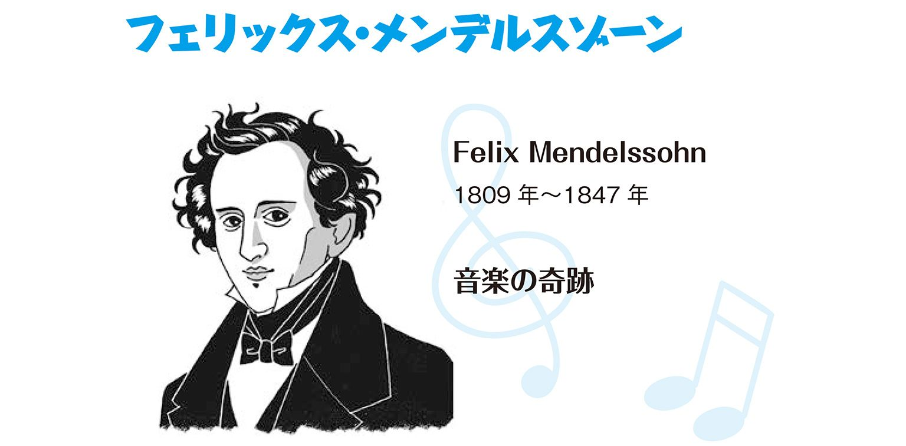
■すべてに恵まれていた人
世の中には、お金持ちの家に生まれ、両親は優しく、何不自由なく育ち、芸術の才能にも恵まれ、さらには容姿端麗にして眉目秀麗と、すべてに恵まれた人が時々生まれるようです。音楽史において、最も恵まれていたのがメンデルスゾーンです。その正確な名は、ヤコプ・ルートヴィヒ・フェリックス・メンデルスゾーン・バルトルディ。
欧米では、メンデルスゾーン・バルトルディと略さずにいうことが多いようです。
この名前は、すべてに恵まれていた彼にとって、数少ない苦悩のひとつでもありました。もともとは「メンデルスゾーン」だけがファミリーネームだったのですが、彼の家はユダヤ系で、一家が少年時代にプロテスタントに改宗した際に、「メンデルスゾーン・バルトルディ」となったのです。しかし、フェリックスはキリスト教徒になりながらも、ユダヤ系に生まれたことを誇りに思っていたので、「メンデルスゾーン」と名乗っていました。本書でも、彼の意志に従いましょう。
■裕福な家、最高の教師たちに囲まれて
メンデルスゾーンは1809年、ハンブルクで生まれました。父は銀行家でした。祖父は、カントにも影響を与えたとされるユダヤ人哲学者です。知性と財産に恵まれた家でした。父はその兄、つまりメンデルスゾーンの伯父とともに銀行経営をしており、ナポレオン戦争の際にナポレオンがヨーロッパ大陸とイギリスとの貿易を禁止すると、密輸をして大儲けしました。こう書くと、犯罪者一家みたいですが、ヨーロッパの人々にとってはイギリスの製品が必要でしたし、イギリス人は品物を売って儲けたかったので、どちらにも喜ばれたのです。怒ったのは、ナポレオンだけでした。
1811年、そのナポレオンのフランス軍にハンブルクが占領されたので、メンデルスゾーン家はベルリンへ引っ越しました。メンデルスゾーンはまだ2歳。ですからハンブルクのことは何も覚えていないでしょう。
ベルリンでは、ユダヤ人たちが弾圧を受けていました。大金持ちの家のメンデルスゾーンは、直接ひどい目にあうことはありませんでしたが、社会の現実を知って、少なからずショックを受けます。
メンデルスゾーンが10歳の年、一家はベルリンの新市街から旧市街の広大な邸宅へと引っ越しました。
メンデルスゾーンの音楽教育は、6歳で母からピアノを習うことに始まり、8歳からは当時の最高のピアノ教師が雇われ、ヴァイオリンの教師にはベルリンの宮廷楽団のヴァイオリニストが、そして10歳からはバッハの孫弟子にあたるツェルターから音楽理論と作曲も学びます。その他、語学、乗馬、美術なども家庭教師がついて、最高の教育を受けたのです。そのおかげで、彼はドイツ語の他、ラテン語、イタリア語、フランス語、英語までも話せましたし、絵もとてもうまかったのです。
メンデルスゾーンは4人きょうだいの長男で、4歳上の姉ファニーととても仲がよく、2人は音楽を一緒に学んでいました。
姉ファニーはピアニストとしても優れ、さらに作曲家として作品も発表するようになります。モーツァルトの姉ナンネルが子供の頃しか音楽家として活躍できなかったのに対し、半世紀後の世代になると、女性の社会進出も始まっていたので、女性ピアニスト、女性作曲家として活躍する人が出てきます。ファニーはその先駆者と言えます。しかし、それもメンデルスゾーン家の財力があってこそ可能でした。
■ゲーテが「音楽の奇跡」と讃える
1821年、12歳になったメンデルスゾーンは、師ツェルターに連れられてワイマールに旅し、文豪ゲーテと出会います。ゲーテはこの年、72歳でした。この少年を気に入ったゲーテは毎日ピアノを弾かせました。この2年後にメンデルスゾーンはゲーテに再会しますが、そのときゲーテは「音楽の奇跡」とこの少年を讃えました。
バッハはこの当時はほとんど忘れられていたのですが、その孫弟子であるツェルターに師事したおかげで、メンデルスゾーンはバッハの音楽を早くから知り、その偉大さと魅力に夢中になっていました。
14歳のクリスマス、メンデルスゾーンは祖母からバッハの《マタイ受難曲》の写筆スコアをプレゼントされました。こんにち、西洋音楽の最高峰として絶賛されている《マタイ受難曲》ですが、当時はまったく演奏される機会がなかったのです。
メンデルスゾーン家は、ファニーとフェリックスに音楽教育を授けただけでなく、その才能を披露する場も与えました。広大な屋敷に知人、音楽界の重鎮たちを招いて、日曜音楽会を定期的に開催したのです。いくら才能があっても、それを聴いてもらえないことには、宝の持ち腐れです。メンデルスゾーン姉弟は、その才能を磨きに磨き、そして披露する場も常にあり、さらに才能は伸びていったのです。
メンデルスゾーンは記憶力も抜群によく、一度聴いた音楽は完璧に記憶できたとも伝えられています。
■蘇った《マタイ受難曲》
1826年夏、メンデルスゾーン家の子供たちとその友人は、ファニーを「総監督」にして、多くの人を招いて、シェイクスピアの『夏の夜の夢』を上演しました。その時、フェリックスはファニーとのピアノ連弾のための序曲を作曲しました。この序曲はとても評判がよく、すぐにオーケストラ用の曲に編曲されました。17歳の作品で、いまでもコンサートではよく演奏されます。
メンデルスゾーンはピアニストとしても活躍します。バッハやモーツァルトを体系的に学び弾いたことが、作曲にも生かされていきます。
10代のメンデルスゾーンは旅も多くしました。ヨーロッパ各地で演奏し、さらに現地の音楽家たちと知り合い、ネットワークができていきます。こうした旅も財力があったから可能でした。モーツァルトのように稼ぐ必要はなかったのです。
1829年、メンデルスゾーンの生涯にとっても、そして音楽史上にとってもエポックメイキングな公演が実現しました。バッハの《マタイ受難曲》が作曲者の死後初めて、初演から100年以上が過ぎて、20歳のメンデルスゾーンの指揮と主催で、再び上演されたのです。この曲を初めて知った人々は、こんな作品があったのかと驚き、さらにはこれを20歳の青年が指揮していることにも驚きました。
ここに、《マタイ受難曲》は蘇り、バッハという音楽家が再認識され、「音楽の父」になるのでした。
さらに、「名曲」という概念が生まれます。これまでのコンサートは自作自演が基本で、亡くなった作曲家の曲はあまり演奏されなかったのですが、メンデルスゾーンは指揮者としての地位を確立すると、積極的に「名曲コンサート」を実施するのです。
こうして「クラシック」という概念も生まれます。
演奏家、作曲家としてだけでなく、メンデルスゾーンの真の業績は、「クラシック」という概念を音楽において確立した点にもあるのです。この仕事での仲間がシューマンでした。2人はとても親しく、シューベルトの再評価にも貢献しますし、同時代のショパンも高く評価し、彼が名声を築くのにも貢献します。
■指揮者としての業績
1833年、24歳にしてメンデルスゾーンは、デュッセルドルフ市の音楽監督に就任します。市の音楽活動全般の責任者となるのです。ドイツは、それぞれの都市ごとに歌劇場とそれに付随するオーケストラを持つのが一般的で、オペラとコンサートが毎日のように開かれます。その責任者として、プログラムを決めたり、公演の指揮をしたり、歌劇場やオーケストラのマネージメントをするのが音楽監督です。
デュッセルドルフでは、若すぎたのか、メンデルスゾーンは楽団員にも市民にも不評で、2年後にはライプツィヒに移ります。
ライプツィヒには、1743年創立で世界最古の民間オーケストラといわれる、ゲヴァントハウス管弦楽団があり、メンデルスゾーンはその指揮者となったのです。ここでは、思う存分に仕事ができました。前述の「名曲コンサート」はこのオーケストラで確立されるのです。昔の曲だけでなく、自作やシューマンの曲なども演奏されました。
こうした功績がベルリンのプロイセン王の耳にも届いたのでしょう。メンデルスゾーンは、1841年、32歳の年にプロイセン王フリードリヒ・ヴィルヘルム4世によって、ベルリンの音楽アカデミーに招かれ、王立オーケストラの指揮、大聖堂の合唱隊の指揮、宮廷劇場での演劇のための音楽の作曲などを担いました。
これまでの音楽家が、自分の作品の創作についてのみ考えていればよかったのに対し、メンデルスゾーンは誰に命じられたわけでもないのに、音楽界全般を考えるようになっていきます。自分がすべてに恵まれていたので、音楽の才能のある人を埋もれさせてはならないという使命感を抱いていたのです。
1843年には、メンデルスゾーンは自ら設立資金を集め、44年にライプツィヒ音楽院を開校し、その院長となり、作曲とピアノの教授にはシューマンを呼びました。
彼の最もよく知られる名曲、ヴァイオリン協奏曲は、この1844年の作品です。
■フランクフルト一の美女との結婚
財産と音楽の才能、そしてとてもハンサムな容姿──メンデルスゾーンはすべてに恵まれていたのですが、その結婚もまた申し分のないものでした。
1833年にメンデルスゾーンは、プロテスタントの牧師の娘でフランクフルト一の美女といわれていたセシルと結婚します。とても幸福な家庭となり、3男2女が生まれ、1人は早世しますが、4人が育ちました。セシルはとても絵が上手だったとも伝えられます。
一方、姉のファニーは1829年に宮廷画家ヴィルヘルム・ヘンゼルと結婚しました。ファニーの才能を認め、音楽に理解のある夫だったので、彼女は結婚後も作曲を続けました。
しかし、ファニーは1847年5月、弟フェリックスの《ワルプルギスの夜》をリハーサル中に、脳卒中に倒れ、そのまま亡くなってしまいました。
このとき、メンデルスゾーンはイギリスに向かう途中でした。最愛の姉の訃報を聞くと、彼はその衝撃で神経障害を起こします。どうにか快復したかにみえましたが、半年後の11月に姉の遺稿を整理している最中、彼も脳卒中に倒れ、そのまま急逝しました。
そして、妻セシルも、メンデルスゾーンの死から６年後に肺結核で亡くなってしまいます。
すべてに恵まれていたメンデルスゾーンでしたが、天は、彼に「長寿」は与えなかったのです。
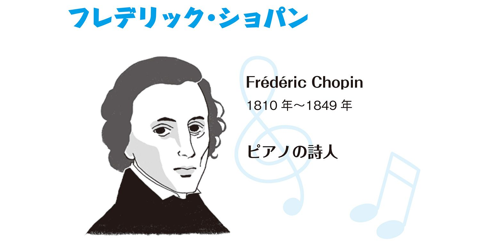
■ピアノ曲しか作らなかった作曲家
ショパンは音楽史上特異な存在です。楽譜が現存する作品は、それをすべて演奏するとCD16枚ほどに収まり、ショパンよりも3歳早く亡くなったモーツァルトが180枚前後なのに、その1割もないのです。
しかも、モーツァルトやベートーヴェンなど、大作曲家はあらゆるジャンルの曲を作ったのに、ショパンはピアノで演奏する曲しか書きませんでした。しかも、1台のピアノだけで演奏する曲が大半で、ピアノとオーケストラとの曲、ピアノと他の楽器の曲は、ごくわずか。オペラや交響曲は1曲も書いていません。こういう人は、大作曲家のなかではショパンただひとりです。
■ポーランド生まれ
ショパンがプロの音楽家として活動したのは1830年以降のパリですが、生まれ育ったのはポーランドでした。当時のポーランドはロシア、プロイセン（ドイツ）、オーストリアに囲まれ、これら大国によって勝手に分断・占領されている、不幸な時代でした。ポーランドの人々は民族自決を求めて何度も立ち上がり、そのつど鎮圧されていたのです。
そんななか、1810年にショパンは生まれました。父ミコワイはフランス人で、ポーランド貴族が持つブドウ園で働いていたところ、頭のいい少年だったので、その貴族の誘いでポーランドに帰化しました。独立運動に参加したこともありましたが、それが敗北してからは、フランス語の教師となりました。母ユスティナはポーランド貴族の末裔でした。
この2人の間に、1810年、ジェラゾヴァ・ヴォラという地方の町にフレデリック・ショパンは生まれました。姉がひとりいて、後に妹2人が生まれます。ショパンが生まれて半年ほどで、一家はワルシャワに引っ越します。父がワルシャワ高校のフランス語教師の職を得たのです。
■ワルシャワの神童
ショパンは神童から天才少年コースを歩んだ音楽家です。趣味としてでしたが、父はヴァイオリンとフルートをたしなみ、母はピアノを弾きました。音楽好きな一家だったのです。モーツァルトと同じように、姉がピアノを母から習っているのをそばで聴いていて、ショパンは音楽と出会います。一度聴いたメロディーは完璧に覚え、それだけでなく、ピアノで再現できたのです。そして、そのメロディーから新しいメロディーを生み出すこともできました。
息子の才能を知った両親は、母ではこの子の才能を伸ばせないとすぐに判断し、6歳の時から家庭教師を頼みます。その音楽家がヴォイチェフ・ジヴヌィでした。モーツァルトと同じ1756年生まれの60歳になろうとする人で、バッハ、ハイドン、モーツァルトを崇拝している音楽家でした。ピアノはそれほど得意ではなく、ヴァイオリンが専門でしたが、そのほうがショパンのピアノの才能を伸ばすには都合がよかったのです。ピアノ教師のなかには、自分の演奏法を弟子に押しつけて潰してしまうタイプが多いのです。
ショパンは「神童─天才少年コース」を順調に歩みます。1817年、7歳にして作曲した「ポロネーズ ト短調」が出版されました。批評の対象となり、「正真正銘、音楽の天才」と雑誌で評されたのです。そして、「この少年がドイツかフランスに生まれていたら、あらゆる人々の注目を浴びたはずだ」とも書かれました。これは逆にいえば、ワルシャワのようなヨーロッパの田舎にいたのでは才能が埋もれてしまうという警告でもありました。
8歳になると、ワルシャワで初の公開演奏をします。雑誌記事でショパンの名は有名になり、貴族たちのサロンに招かれるようになるのです。そうしたサロン以外での初の公開演奏会は、モーツァルトのような興行ではなく慈善演奏会でした。父ミコワイは息子の音楽で儲けるなどもってのほかだと考えていたのです。
12歳になると、ワルシャワ音楽院の院長だったエルスネルに対位法と和声学を学ぶようになります。
そして16歳になると、ワルシャワ音楽院に入学しました。音楽理論と作曲科です。もうピアノについては学ぶ必要がなかったのです。在学中にショパンはモーツァルトのオペラ《ドン・ジョヴァンニ》のアリア〈お手をどうぞ〉の変奏曲を書きました。これがショパンの「作品2」となります。ここでいう「作品」とは、公式に出版された作品という意味で、それ以外にもたくさんの作品をショパンは書いています。この時点でも50曲以上はあったと伝えられますが、楽譜はほとんど遺っていません。
この「作品2」は1830年に出版されます。そして、この作品に感激してエッセイを書いたのがシューマンでした。このエッセイは小説風で何人かの人物の会話形式なのですが、そのひとりがショパンのこの作品についてこう言います。
「諸君、脱帽せよ、天才だ」
■初恋
音楽院在学中、ショパンは声楽科で学んでいる歌手の卵コンスタンツィア・グワトコフスカに一目惚れします。しかし内気な性格なので、彼女と町で偶然出会っても逃げ出してしまい、とても恋の告白などできませんでした。彼女への「思い」を込めたのが、ピアノ協奏曲第2番の第2楽章だと、ショパンは友人への手紙で告白しています。
1829年7月、ショパンは音楽院を首席で卒業しました。しかし、「就職」先はありません。ショパンのような天才を雇う音楽産業が、ワルシャワにはなかったのです。それは同時にフリーランスとして仕事をしていけるほどの音楽市場がないことも意味していました。
ショパンの父はこのままでは息子の才能が何も活かされないことに危機感を抱き、ウィーンへの留学を考え、教育大臣に申し出て留学資金を政府から出してくれと頼みます。教育大臣はその気になったのですが、内務大臣の反対にあい、奨学金は貰えそうもありません。しかし、ショパンはすっかりその気になっていました。不憫に思った父は、短期の旅行ですが、ウィーンに行かせることにしました。こうして、1829年夏、ショパンはウィーンへ出かけるのです。
一方、ロシアの圧政に苦しんでいたポーランドの独立運動派は、この頃から活動を活発にしていきます。
■ウィーンでのデビュー
ウィーンに着いたショパンは、楽譜出版社に作品を持って行きます。当時のウィーンはベートーヴェンが死んだばかりで、新しいスターを探していました。夏はシーズンオフなので、著名な音楽家たちは避暑に行っていて、コンサートはありません。そこで楽譜出版社主のハスリンガーは、ショパンに作曲家よりもスター・ピアニストの素質を見抜き、コンサートをやろうと持ちかけます。
ショパンはコンサートをする気はなかったのですが、説得されて了承、あっと言う間に話は決まり、10日ほど後にウィーン宮廷歌劇場でコンサートが開かれました。好評だったので2回開かれ、ショパンはたちまち有名になります。
この時は長期滞在する気はなかったので、ショパンは9月になるとワルシャワに帰りました。
いまの日本で、アメリカやヨーロッパで成功すると、たちまちもてはやされるように、ワルシャワに戻ったショパンは「ウィーンで成功した音楽家」として、ますます人気が出ます。しかし、父は金儲けには興味がないし、ショパンも内気なので、すぐに大々的な凱旋コンサートをするわけでもありませんでした。ショパンは家にいて、ひたすらピアノと五線紙に向かう日々を過ごすのです。
ワルシャワでの本格的なコンサートは、1830年3月にようやく開かれ、大成功しました。このとき、ピアノ協奏曲第2番が初演されました。ピアノはもちろん、ショパンが自ら弾きました。第2番とありますが、完成したのは第1番よりも2番が先で、これがショパンの最初の協奏曲です。
1830年になると独立運動はいよいよ激化していきます。ショパンの父は息子がこのままワルシャワにいたのでは動乱に巻き込まれ、命を失うかもしれないし、何よりもせっかくの音楽の才能が無駄になると考え、無理をして資金調達し、ショパンをウィーンに行かせることを決めます。出発は秋の予定でしたが、政情不安もあって11月になりました。
ポーランドも混迷していましたが、フランスでは七月革命が起きていました。ナポレオン失脚後、フランスでは王制が復活していましたが、その王制が倒れたのです。しかし、その次の政権は、「共和派の王制」という、なんとも奇妙なものでした。
ショパンは10月11日にワルシャワで告別コンサートを開き、そこではピアノ協奏曲第1番が演奏されました。片思いのコンスタンツィアとはこの頃までにはかなり親しくなっていました。彼女は旅立つショパンにこんな手紙を書きました。
「悲しい運命。あなたが決めたこと。しかたがないから受け入れましょう。忘れないで。ポーランドにはあなたを愛する人がいることを」
しかし、彼女は翌年に別の男と結婚してしまいます。
ショパンは11月2日にワルシャワを旅立ちました。これが祖国との永遠の別れとなるのです。
■パリへ
ウィーンに着いたショパンは、さっそく前年にコンサートを企画してくれた出版社主を訪ねます。しかし、冷たい態度でした。ショパンの人気は一過性のものと見られ、相手にしてもらえなかったのです。コンサートも楽譜出版も、なんの見通しもたちません。そうこうしているうちに、ワルシャワで独立運動派が蜂起したとの知らせが届きます。
オーストリアは、ポーランドを占領していた国ですので、ポーランド人は冷たくされました。ショパンは祖国に帰り、独立運動に参加しようとしますが、友人に、「君みたいにひ弱なのが参加しても役に立たない。それよりも、君には音楽がある」と説得され、ウィーンに残りました。
1831年になると、ポーランド独立軍とロシア軍との闘いは熾烈を極めていきます。当初、ポーランド軍が優勢でしたが、やはり大国ロシアにはかないません。
ショパンはウィーンにいても仕事がないので、亡命ポーランド人が多いパリへ行くことを決断します。ウィーンからパリへの旅の途中、ドイツのシュツットガルト滞在中に、ショパンはワルシャワがロシア軍によって陥落し、独立運動が敗北したことを知ります。悲嘆にくれたショパンが祖国への激しい思いを曲にしたのが、エチュード《革命》だと伝えられています。
ショパンがパリに着いたのは1831年9月下旬でした。
■パリのデビューコンサート
パリへ着いて約半年後の1832年2月、ショパンは初のコンサートを開きます。客席には後にシューマンの妻となるクララ、パリに暮らしていたリスト、旅行中のメンデルスゾーンがいました。会場となったのはピアノ・メーカーのプレイエル社のホールでした。ベルリオーズの婚約者が結婚してしまった相手が、プレイエルの御曹司です。というわけで、ロマン派の巨人たちは、けっこう濃い人間関係なのです。
パリ・デビューは成功し、ショパンには貴族や富豪たちから子女の家庭教師の依頼が舞い込み、生活基盤ができていきます。ショパンが家庭教師をした家のひとつがロスチャイルド家でした。
ロスチャイルドは世界を支配していると言われる国際金融資本ですが、当時は二代目の時代です。ユダヤ系ドイツ人のロスチャイルドがフランクフルトで金融業を始めたのが1750年代で、彼の5人の息子は、フランクフルト、ロンドン、パリ、ウィーン、ナポリの店をまかされ、ヨーロッパ全土に情報網を張り巡らせ、戦争が始まればどの国が勝ってもこの一族が儲かるシステムを構築したのです。パリには5男がいて、ショパンはその夫人と娘の家庭教師になりました。
■サンドとの出会い
世界史において最も有名な芸術家同士のカップルが、ショパンと作家ジョルジュ・サンドでしょう。
サンドは1804年生まれなので6歳上となります。父は軍人で貴族、母は庶民の出でした。ジョルジュ・サンドはペンネームで、本名はオーロール・デュパン。1822年、18歳でカジミール・デュドヴァン男爵と結婚し、1男1女を産みます。しかし、恋多き女で、次から次に愛人を作ります。7歳下で19歳だった学生ジュール・サンドーも愛人で、彼との合作で、1831年に小説を書いてデビューします。その後、ひとりで書いた 『アンディアナ』で脚光を浴びますが、この時から、ジョルジュ・サンドの名を使うようになりました。サンドは男装して社交界に出入りしたことでも話題となります。
ショパンと知り合ったのは、1836年の秋でした。その前に彼女はリストと付き合ったこともあったのですが、リストはやがて人妻のマリー・ダグー伯爵夫人と愛人関係になり、そのダグー伯爵夫人のサロンで、ショパンとサンドは知り合うのです。
ショパンは「なんて感じの悪い女なのだろう」とその第一印象を知人への手紙に書いています。しかし、やがて2人は恋に落ちるわけです。
ショパンにはそれまでにも結婚を考えた女性が3人ほどいましたが、いずれも破局を迎えていました。そんな失意のどん底にある頃にサンドと知り合ったのです。草食系男子の元祖的なショパンと、肉食系女子であるサンド。積極的だったのは、もちろんサンドのほうでした。やがてショパンはサンドを受け入れます。
サンドには夫も子もいましたし、さらに何人も愛人がいましたので、2人の仲は当初は隠されていました。
1838年から39年にかけて、パリでは人目につくので、スペインのバルセロナ沖に浮かぶ地中海のマジョルカ島に2人は出かけ、幸福な時を過ごします。もっとも、サンドの 2人の子も一緒でした。ショパンはもともと病弱で、この頃はかなり衰弱していたので温暖な気候を求めたのですが、この年は雨が多く寒くて、逆効果でした。
ショパンはますます具合が悪くなってパリへ戻ります。しかし、サンドとの関係は続き、以後1840年から47年まで、夏はサンドが相続で得た大邸宅のある、パリから南へ270キロほどのところのノアン、冬はパリという生活が続きます。
1845年頃から、2人の関係は悪化します。サンドの息子はショパンを攻撃し、娘はショパンの気を引こうとするという、なんとも複雑な関係になってしまうのです。さらにサンドがショパンをモデルにした小説を書いたことも原因だとの説もあります。
■孤高の作曲家
いろいろと悪評の高いサンドですが、ショパンにとって、彼女と暮らした7年間が、音楽家としては最も充実した日々でした。ほとんどの傑作はこの時期に書かれているのです。
ショパンはピアニストとしても優秀でしたが、体力がないため、大きな音が出せず、広いコンサートホールでの演奏は得意ではなく、貴族や富豪たちのサロンに招かれて演奏することで、生計を立てました。そのサロンでの演奏ではショパン自身の作品が演奏されました。即興演奏も得意でしたので、楽譜として残されなかった、無数の曲もあったと思われます。
ピアノ・ソナタといった古典派時代にできた様式の曲も書きましたが、ノクターン、ポロネーズ、ワルツ、エチュードなど、ショパンならではの様式から自由になった曲が大半で、ショパンは音楽史において、孤高の存在となります。誰も仲間がいないのです。
音楽の主流とされていた交響曲にも、オペラにも手を出さなかった点でも、異質でした。
ショパンといえば、《別れの曲》《仔犬のワルツ》《雨だれ》など、ロマンチックなタイトルのものが有名ですが、これらはショパンが付けたものではありません。そのほとんどが日本のレコード会社やコンサート業者が勝手に付けたものです。
■サンドとの別れ
1847年、ショパンはついにサンドと別れましたが、精神的に不安定となり、鬱に陥ります。1848年2月にパリでコンサートをしますが、これが最後となってしまいます。最後の力を振り絞るように、その後ロンドンに行き、ヴィクトリア女王の御前演奏をして好評でした。しかし、旅のため、体力はますます衰弱してしまいます。
1849年10月、姉に看取られながら、39歳でショパンは亡くなりました。パリの墓地に埋葬されましたが、遺言で心臓だけは姉がポーランドに持ち帰り、ワルシャワの聖十字架教会の柱の中に納められました。
サンドは1876年に亡くなりました。
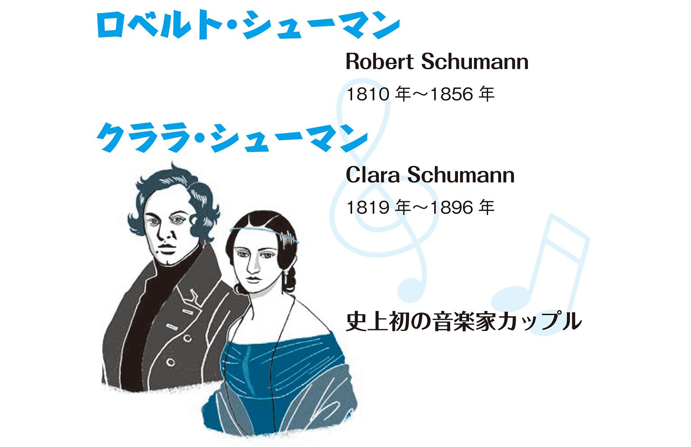
■夫婦ともに有名音楽家
夫婦がともに音楽史上の重要人物として登場するのは、シューマン夫妻が最初です。妻もピアノが上手かったという夫婦であれば他にもいるでしょうが、クララ・シューマンはピアニストとしては「当代一」の実力と人気でしたし、作曲家としても多くの作品を遺し、立派な音楽家でした。「シューマンの妻」でなければ、もっと業績を遺したかもしれないのです。
■文学に囲まれた少年・ロベルト
ロベルト・シューマンは1810年にドイツのザクセン王国のツヴィッカウに生まれました。父はその弟と出版社を営んでおり、自分も翻訳し小説を書いていた文学者でした。母は外科医の娘でしたが、その親戚には文学者がいたので、いわば文学一家に生まれ育ったのです。ロベルトは6人きょうだいの末っ子で、父が37歳、母が43歳の時の子だったので、溺愛されて育ちました。
ドイツの教養のある一家は音楽を趣味とするのが一般的でしたので、シューマンも7歳から、教会のオルガン奏者にピアノを教えてもらい、音楽に親しみ始めます。さらにアマチュアの音楽家からでしたが、音楽理論の基礎も学びました。初めて作曲したのは9歳といいます。10歳で初めて父に連れられてオペラを観ました。モーツァルトの《魔笛》です。
しかし、この程度の音楽体験であれば珍しいものではなく、シューマンは、モーツァルトやベートーヴェンのように「神童」と騒がれることもなく、平凡な幼少期を過ごしました。むしろ、文学のほうに関心もあり、才能もあったようです。
中学・高校にあたるギムナジウムでは成績がよく、リーダーの素質もあったのか、学生オーケストラを結成して指揮していました。詩を書くなど、文学の才能も見せ始めています。
シューマンの人生の最初の大きな出来事は、1826年、16歳の時に姉が自殺し、その半年後に父が病死したことでした。精神的には、仲のよかった姉の自殺のほうが打撃でした。
父はそれなりの財産を遺していたので、シューマンは大学に進学します。音楽の道に行くことも考えたのですが、母の希望もあり、安定した職業である法律家を目指し、1828年にライプツィヒ大学の法科に入学しました。
1年後にハイデルブルグ大学の法科に転校しますが、この頃から授業に出ず、音楽に夢中になっていきます。この大学で師事した法律学のティボー教授は音楽愛好家としても知られ、とくにバッハなど昔の音楽を広める活動もしており、シューマンの音楽熱は、法科に入ったことでかえって高まってしまいました。ピアノの練習と作曲に励む日々が続きます。
1830年、シューマンはついに母に、「僕は法律家には向かないので音楽家になりたい」と手紙を書き、ライプツィヒの高名なピアノ教師フリードリヒ・ヴィークに、自分に音楽の才能があるか聞いてみてくれと頼みます。すでにヴィークの前でピアノを弾いて聴いてもらっていたのです。ヴィークは母に対し、「私のもとで毎日ピアノのレッスンを受ければ、3年以内に偉大な音楽家になる」と返事をしました。これで母も認め、シューマンはヴィークの弟子になります。
しかし、ヴィークはこの弟子の面倒をあまりみてくれません。彼にはピアノの天才少女となる娘がいたのです。その少女こそが、クララでした。
■天才少女・クララ
クララが生まれたのは、1819年。シューマンの9歳下になります。シューマンが彼女の父の弟子となるのは1830年秋なので、出会った時は20歳と11歳でした。この時点では、お互いに恋愛感情を抱くことはなかったでしょう。
クララの父フリードリヒ・ヴィークは、 1785年に生まれました。音楽家を志したのは青年になってからで、自身は演奏家にも作曲家にもなれませんでしたが、音楽教育者として成功しましたし、ピアノ工場と楽譜出版社を創立するなど、事業家でもありました。ソプラノ歌手でピアニストの女性と結婚し、2人の女の子が生まれ、長女は夭逝し、次女がクララです。しかし、1825年、クララが6歳の年に両親は離婚してしまい、クララは父に育てられます。
子供の頃に「親の死」を体験する人は、これまでの音楽史には多いのですが、「離婚」はこの時代からのようです。クララの母は音楽家として自立していたので、離婚も可能だったのです。19世紀は「女の時代」の始まりでもありました。
とはいえ、女性が離婚して女手ひとつで娘を育てることはまだできなかったのでしょう。
ヴィークは優れたピアノ教師でしたので、すぐに娘クララの才能を見抜き、猛訓練をさせます。1828年、9歳になったクララは早くもプロデビューし、ライプツィヒ・ゲヴァントハウス管弦楽団の演奏会で、モーツァルトのピアノ協奏曲を弾くのです。この成功で彼女の名はドイツ中に天才少女として知られるようになりました。ヴィークとクララの関係は、モーツァルト父子に似ています。
■ピアノを断念し作曲と評論へ
シューマンがヴィークの弟子となった時、このようにクララはすでにスター・ピアニストで、かつてモーツァルトがそうだったように父に連れられて、ヨーロッパ各地を巡業していました。ですから、ヴィークは弟子の面倒をみている時間などなかったのです。
さらに、この頃から練習のしすぎなのか、シューマンは手を痛め、ピアニストとしての大成は断念せざるを得なくなります。そんなこともあり、シューマンは作曲家を本格的に目指すようになるのです。すでに1830年には作品1として《アベッグ変奏曲》が出版されていました。
ベルリオーズもそうでしたが、「演奏できない音楽家」の最初期のひとりとなるわけです。
そして、1831年の秋、シューマンはポーランド出身の若い音楽家の作品の楽譜を見て、感動します。あまりにも素晴らしかったのです。そして興奮した状態でこの作品についてのエッセイとも評論ともつかないものを一気に書きました。このポーランドの音楽家こそが、ショパンでした。
シューマンのエッセイは雑誌に掲載され、パリにいたショパンのもとに送られました。ショパンはそれを読むなり、「あまりにも見当違いだ」と怒るやら呆れるやらという反応だったといいます。シューマンとショパンとが出会うのは数年後のことですが、その作品を通じて先に知り合っていたのです。
その頃、ショパンはパリで初めてのコンサートを開いていましたが、その会場には父に連れられてパリに公演に来ていたクララもいました。
パリから帰ると、ヴィークの二度目の妻が子を産んでいました。彼女はヴィークの20歳も年下でした。多感な年頃となったクララは父の再婚と異母きょうだいの誕生で、精神的に不安定になります。そのとき、兄のように優しく接してくれたのがシューマンだったのです。2人の間に、新しい感情が生まれていました。もっとも、シューマンにはその頃、別の女性との恋愛事件もあったのですが。
■恋、そして結婚
シューマンは1834年に「ライプツィヒ音楽新報」という週2回刊行の新聞を創刊し、編集を担当します。翌年には週刊となり、1836年にはシューマンが主筆を務め、活発な評論活動を始めるのです。このあたり、出版社経営者で著述家でもあった父譲りと言えましょう。
評論と並行して、シューマンの作曲も本格的に始まります。
クララとシューマンがいつ恋愛関係に落ちたのかは諸説ありますが、1833年にクララが「ロマンス・ヴァリエ・作品3」を作曲してシューマンに捧げ、そのお返しにシューマンは「クララ・ヴィークの主題による即興曲・作品5」を書いた頃には、すでに恋愛感情が、少なくともクララにはあったのではないかとされています。
2人が愛を告白しあうのは1837年夏のことで、これは手紙が残っているそうです。そして9月、クララが18歳の誕生日を迎えると、シューマンはヴィークに結婚の承諾を求めるのですが、猛反対されます。これは単に娘が可愛くて、他の男に取られたくなかったのではなく、芸能プロダクションがアイドルの結婚に反対するようなものでした。
結婚には親の承諾が必要だったので、裁判にまでなって、3年後の1840年9月にようやく正式に結婚できました。以後は2人ともシューマンなので、「ロベルト」としましょう。
■私生活の幸福が芸術をより豊かに
結婚後、ロベルトは旺盛に作曲していきます。1841年には交響曲第1番《春》が完成し、初演はメンデルスゾーンが指揮しました。
クララは1841年に長女を出産、以後1854年まで14年間に8人の子を産み（妊娠は10回）、ひとりが夭逝、7人が育ちました。この出産・子育てと並行して、彼女はピアノ演奏も続け、その収入で一家を支えていたのです。ロベルトの作曲は、当時としてはそれほどお金にならなかったわけです。さらに彼女自身も作曲していたのです。妻、母、主婦、ピアニスト、作曲家とひとりでいくつもの役割をこなしました。
ロベルトの作曲家としての全盛期は1840年代前半、つまり30代前半でした。交響曲第1番の評判もよく、さらに歌曲やピアノ五重奏曲、オラトリオ《楽園とペリ》なども作曲し、名声を得ます。その一方、この頃から精神を病むようになっていました。こんにちではロベルトの名声のほうが高いのですが、当時はクララのほうが圧倒的な人気を誇っていたのがその原因かもしれません。才能と人気のある妻を持つ同業の夫というのは、辛いものです。
1844年、シューマン一家はドレスデンに移住します。この地では、ロベルトはピアノ協奏曲、交響曲第2番、唯一のオペラ『ゲノフェーファ』が書かれました。
1850年にロベルトはデュッセルドルフの音楽監督に招かれ、この地で交響曲第3番《ライン》やチェロ協奏曲、多くの室内楽曲を作曲しました。音楽監督ですのでオーケストラのコンサートでの指揮もしました。しかし、楽団員との意思の疎通がうまくいかず、1853年には辞任に追い込まれます。精神の病は、ますますひどくなります。
■あまりにも美しい3人の関係
1853年9月、シューマン家に20歳の青年がやって来ます。ロベルトをとても敬愛している音楽家でした。ブラームスです。ブラームスが自作のピアノ曲を弾いて聴かせると、ロベルトは天才が出現したと、とても歓びました。シューマン夫妻とブラームスとの美しい師弟関係が始まるのです。
ロベルト43歳、クララ34歳、ブラームス20歳。何かが起こる、危険な年齢差であることは、間違いありません。はたして、何か起こるのか。
ロベルトの精神はますます不安定となります。1854年、ロベルトはライン川に投身自殺を図りますが、助かりました。これは大変だというので、精神病院に入り、2年後に46歳で亡くなりました。
クララが産んだ最後の子についてロベルトは、父親はブラームスではないかと疑っていたともいいます。ロベルトの死後も2人が親しくしていたこと、ブラームスが生涯独身だったことなどから、2人の不倫説は当時から、そしていまもなお伝えられますが、2人ともそれについては何も語っていないし、手紙や日記などにも、証拠らしきものはありません。愛はあってもプラトニックな関係だったのか、師弟関係にすぎないのか、そのあたりは永遠の謎です。
クララはロベルトの死後、残された７人の子供を育て、人気ピアニストとして公演し続けました。さらに夫ロベルトの作品全集の編纂にあたりました。さらにクララは父同様に優れたピアノ教師でもあり、1878年からフランクフルト音楽院の教授も務め、後進を育てました。
作曲家としてのクララは、50曲以上を遺し、この時代の女性としては異例なことに、そのほとんどが出版されました。600以上の曲を書きながら、そのまま埋もれてしまったメンデルスゾーンの姉ファニーとは、この点で違います。クララは、成功した女性職業作曲家第１号なのです。
1896年5月、クララは76歳で亡くなりました。そして、その１年後の1897年4月、クララの後を追うようにブラームスも63歳で亡くなるのです。彼は生涯、独身でした。
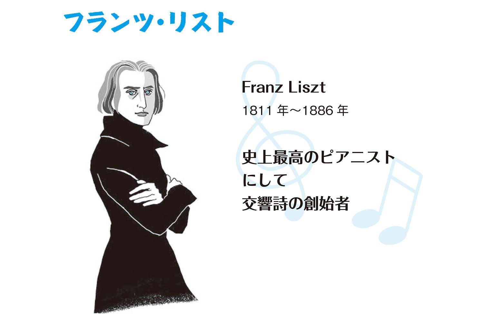
■長生きした人
リストが生まれたのは1811年──ショパンとシューマンとは1歳しか違わず、同じ時代に青春時代を過ごしました。しかし、この2人やメンデルスゾーンが若くして死んだのに対し、リストは75歳まで長生きしたので、後期ロマン派になります。
ドイツでは、リストはドイツの作曲家とされていますが、ハンガリーでは自国を代表する作曲家とされています。リストをハンガリー人とする理由は、生地が当時はハンガリー王国の領域だったからです（現在はオーストリア領）。
リストの家系は曾祖父まで遡ることができ、その曾祖父はドイツ語を母国語とする小作人で、その息子、リストの祖父にあたる人物は大貴族エステルハージ家の管理人を務めていました。あのハイドンが宮廷楽長として勤めていた侯爵家です。リストの父アダムもエステルハージ家に勤め、アマチュアでしたが、チェロを弾いていました。母マリア・アンナ・ラーガーはドイツ系の女性です。
リストはハンガリーで生まれたものの、幼少期の家庭ではドイツ語で話し、パリで暮らすようになってからはフランス語で話していたので、生涯ついにハンガリー語は話せませんでした。
■神童から天才少年へ
リストの父は、モーツァルトの父と同じタイプでした。息子に音楽の才能があると知ると、神童に仕立てあげるのです。
リストは6歳で父からピアノを習い始め、たちまち才能を発揮、1820年に9歳で初コンサートを開いて評判になると、ウィーンに向かうのです。父親としては音楽の都で息子の才能を伸ばしてやろうという意識と、ひと儲けしようという思いの両方があったのでしょう。
この時点のウィーンはベートーヴェンも健在ですが、サリエリが宮廷楽長として権勢をふるっており、リストは作曲理論をサリエリに、ピアノはベートーヴェンの弟子のひとりチェルニーに師事しました。
1822年12月には、ウィーンでの最初のコンサートを開きます。客席にいたベートーヴェンが感激してステージに上がり、この天才少年にキスをしたとのエピソードが伝えられていますが、これは創作のようです。ベートーヴェンはこの時点でかなり難聴が進んでおり、会場にいたとしても聞こえなかったはずなのです。ただ、この前後にリストがベートーヴェンを訪ねたことは確かなようです。
ウィーンで成功を納めると、リスト一家はいったんハンガリーへ帰り、凱旋コンサートをした後に、再びウィーンを訪れ、その次にはパリへ向かいます。パリ音楽院に入学するためでした。
■音楽家の身分
リストはパリ音楽院に入学を申し込みますが、外国人であるという単純な理由で、入学できませんでした。そこで、パリの音楽家パエールの個人指導で、作曲と音楽理論を学び、その一方で、貴族のサロンでの演奏会を頻繁に開きました。1824年3月には、劇場でのコンサートを開き、12歳の天才少年の名は広く知られるようになります。
1825年にはパエールの勧めでオペラ《ドン・サンシュ》を発表するなど、作曲家としても早熟ぶりを発揮します。
その運命が一転するのは、1827年、16歳で父が急死します。マネージメントを担っていた父の死で、リストは演奏活動ができなくなり、ピアノ教師として生計を立てながら、独学で勉強することになりました。音楽だけでなく、宗教や文学、哲学を学びました。
そして17歳の年、家庭教師をしていた伯爵令嬢カロリーヌと恋に落ちます。父はシャルル10世の内閣で大臣だった名士です。2人は師弟関係が恋愛関係になるという、よくあるパターンでした。リストは彼女に音楽を教え、彼女はリストに文学を教えているうちに、恋に落ちるのです。しかし、あくまでプラトニックな関係だったようです。カロリーヌの母親は2人を温かく見守っていましたが、1828年に亡くなってしまい、伯爵に2人の関係が発覚してしまいます。
音楽家はどんなに有名であっても社会的身分は低いので、父は娘がリストと交際するのを許さず、出入禁止を言いわたされてしまいました。リストは失恋もさることながら、自分がそんなにも低い身分であることに衝撃を受けてしまいます。あまりのショックで寝こんでしまい、いまでいう「ひきこもり」状態が2年にわたり続くのです。
■華麗なる女性遍歴
リストがひきこもっている頃、パリではベルリオーズが頭角を表します。1830年の《幻想交響曲》初演の頃にはリストも社会復帰し、この初演を聴き、1832年のショパンのパリ・デビューにも立ち会っています。
リストはショパンとはかなり親しくなりました。内気なショパンと、派手に動き回るリストと性格は対照的でした。ショパンはリストの演奏技術には感心し、またライバルとして脅威も抱いていましたが、作曲については自分のほうが上だと思っていたようで、「僕（ショパン）の曲を彼（リスト）が弾くと、いちばん素晴らしい」と友人に語ったそうです。
伯爵令嬢との引き裂かれた恋の後、リストは生涯にわたり派手な女性遍歴をしますが、最も有名なお相手が、マリー・ダグー伯爵夫人です。
この女性は1805年生まれなので、リストの6歳上。亡命フランス貴族の娘としてフランクフルトに生まれ、1827年にダグー伯爵と結婚、2人の娘が生まれましたが、1835年に離婚。リストとはこの年に知り合い、スイスへ駆け落ちのように出かけ、10年にわたり同棲生活を送ります。3人の子が生まれ、そのひとりがワーグナーの妻となるコジマです。
マリーとの関係は1844年まで続きます。別れた原因は、リストがあまりにも多くの女性と関係していたからとも伝えられます。人気ピアニストだったので、彼に群がる女性ファンが多かったわけです。いまのロック・ミュージシャンと同じようなものです。
1847年には演奏旅行で行ったキエフの大地主の侯爵夫人カロリーネと恋に落ちました。リストとしては結婚を望んだのですが、彼女はカトリックで離婚が禁止されていたので、できませんでした。
1848年、リストはワイマールの宮廷楽長になります。カロリーネがピアニストとしては引退し、作曲に専念すべきと助言したからでした。
■ピアニスト、指揮者、作曲家
リストは何も女性と遊んでばかりいたのではありません。
ピアニストとしてのリストは、おそらく史上最高の演奏技巧の持ち主だったに違いないとされています。リストのピアノ曲には「超絶技巧練習曲」がありますが、まさに、超絶技巧の人だったのです。
また、それまでのコンサートは、ひとつの演奏会でオーケストラも演奏すれば、歌手も出て、ピアノの独奏もあるという、ごった煮のものだったのですが、ひとりのピアニストだけで、最初から最後まで演奏するという「リサイタル」の形式を始めたのもリストでした。
このように、リストは、まずピアニストとしての業績が大きいのです。自作だけでなく、バッハの鍵盤楽器作品を復活させたり、無名のシューベルトの歌曲を広めたり、あるいはベートーヴェンの交響曲をピアノ曲として編曲して演奏するなど、他の音楽家の作品を広げることにも貢献しました。
指揮者としても、ワイマール時代には、ワーグナーやベルリオーズといった同時代の作品を演奏して、広めました。
作曲家としてのリストの功績には、オーケストラによる標題音楽で、交響曲という様式にはとらわれない自由なもの──すなわち交響詩というジャンルの創設があげられます。
1854年にバイロンの詩を題材にした《タッソー》という作品が「交響詩」と銘打たれて発表された最初のものです。
オーケストラで物語を表現するのは、ベルリオーズの《幻想交響曲》という前例がありますが、リストはもっと意識的に、「交響詩」というジャンルを創り上げたのです。以後、リストはいくつもの交響詩を作曲しました。いずれも文学作品を題材にし、それを音楽で表現したものでした。形式としては、合唱や独唱など歌はないし、楽章ごとに分かれることはなく、最初から最後まで休むことなく続くのが特徴です。
■晩年
1859年にワイマールの宮廷楽長を辞任すると、1861年にはローマに移住し、1866年には、なんと僧籍に入ってしまいます。この頃から宗教曲が多くなってくるのです。
長寿でもあったので、リストはドイツ音楽界のまとめ役的な存在になり、後進のために資金援助も惜しみませんでした。
1886年にバイロイト音楽祭で娘婿となったワーグナーの《トリスタンとイゾルデ》を見た後、慢性気道閉塞と心筋梗塞で亡くなりました。
正式な結婚は一度もしませんでしたが、前述のようにマリー・ダグー伯爵夫人との間に3人の子が生まれました。
作品数は膨大で、1,400を超えますが、判明しているもの以外にも、400曲はあると言われています。ピアノ曲だけでも、CDにして100枚近くになるそうです。
割合最近の人なのに、その全貌はまだ摑みきれない巨人なのです。
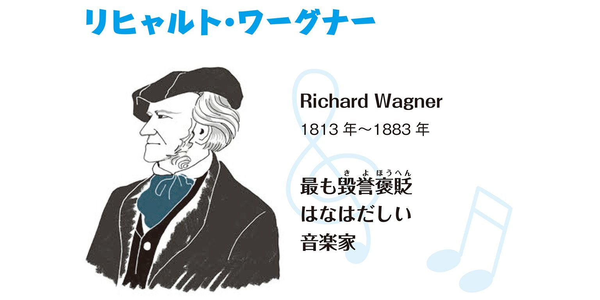
■ヒトラーが心酔した音楽
ワーグナーは最も有名な作曲家のひとりですが、その「有名」には「悪名」も含まれると言っていいでしょう。なにしろ、あのヒトラーが心酔していたとあっては、どうしてもイメージは悪くなります。しかし、ヒトラーが生まれたのはワーグナー没後。ワーグナーとしては、「自分の死後、とんでもない男が自分の音楽に夢中になったからと、自分まで悪者にされるとは心外だ」と言いたいところでしょう。しかし、彼の悪名はそれだけではないのです。
■複雑な家庭
ワーグナーは1813年に、ライプツィヒに生まれました。
父フリードリヒは警察の書記でしたが、ワーグナーが生まれて半年後に発疹チフスで急死してしまいます。劇場が大好きで女優と浮気するのが趣味のような人でした。母ヨハンナは貧しいパン屋の娘でしたが、女優を目指した時期もあった人です。夫婦には9人の子が生まれ、リヒャルトは末っ子、兄弟姉妹で成人したのは7人でした。長兄はテノール歌手に、姉たちも女優や歌手になり、芸能一家でした。
父の死から半年後、母ヨハンナは再婚します。継父となったガイヤーはユダヤ人の俳優で、法律を学んだこともあり、歌もうまく、戯曲を書き、絵も描いていた、なかなか多方面に才能のあった人でした。ガイヤーはフリードリヒの友人で、彼の死後すぐにその妻と結婚したことになります。再婚した際、母はすでにガイヤーの子を宿していました。そんなわけでワーグナーは、自分もこの継父の子ではないかと疑った時期もあったようです。ワーグナーは後に反ユダヤ主義になるのですが、継父の子だとすると、自分にもユダヤ人の血が流れていることになるので、悩みます。本当の父がどちらなのかの答えは出ていません。
ワーグナーは子供の頃から演劇やオペラに親しんでいましたが、幼児期には特別な音楽教育は何も受けませんでした。
■演劇少年から音楽少年へ
少年になるとワーグナーはギリシャ悲劇やシェイクスピアといった演劇に夢中になり、学校の勉強はおろそかになりました。詩人を志していた時期もありました。
当時のオペラはイタリア語オペラが主流でしたが、1821年初演のヴェーバーの《魔弾の射手》はドイツ語でのオペラで当時としては珍しいものでした。ワーグナーは少年時代にこれを観て感激します。9歳の頃には、自己流でしたが、このオペラの序曲をピアノで弾き、音楽の才能を示しました。
そこで両親はちゃんとした音楽教育を受けさせようと11歳からピアノ教師をつけるのですが、ワーグナーは教えられた通りに弾く単調なレッスンが嫌いで、辞めてしまいます。音楽教育は、子供が自我に目覚める前から始めないとならないという教訓のひとつです。
ピアノのレッスンは退屈でしたが、音楽の道は諦められなかったので、オルガニストのヴァインリヒに師事します。ヴァインリヒはワーグナーの性格では基礎から順々に学ぶのは不向きと考え、ハイドンやモーツァルトの楽譜を与えて、どういう仕組みで音楽が作られているか、実際の作品を通して教えることにしました。
■《第九》との出会い
15歳の年に、ワーグナーはベートーヴェンの交響曲第9番を聴いて、ますます音楽に熱中し、この交響曲の楽譜を手にして、それを模写することで研究を始めます。しかし独学では限界があることにも気づき、ヴァインリヒから和声学と対位法という作曲の基本理念を学びました。通常は4年から5年はかかるテクニックの習得を、ワーグナーは半年で終え、ベートーヴェンの第九のピアノ編曲版を作ります。17歳でした。そして大胆にも出版社に持ち込み、「これを出版してくれ」と頼むのです。まったくの無名の青年の申し出に出版社は驚きました。もちろん、出版はされませんでしたが、この出版社ショット社は後にワーグナー作品の出版元となります。ワーグナーはこのように身の程知らずというか、大胆な行動をとる人なのです。
1831年、18歳の年、ワーグナーはライプツィヒ大学に入学し、哲学や音楽を学ぶようになります。
1832年夏、初めてウィーンに旅しました。自作の交響曲の楽譜を持って行ったので、出版かコンサートでの上演を狙っていたと思われますが、当時のウィーンはヨハン・シュトラウスのワルツのような軽い音楽が流行で、ワーグナーの趣味とは合いません。失望したワーグナーはプラハに行きます。ここでは音楽院の院長がワーグナーの交響曲を認め、11月に初演されたのです。この頃、オペラの台本を書いていました。このオペラ《婚礼》は作曲も進んでいましたが、気に入らず破棄され完成しませんでした。
翌1833年1月にはライプツィヒでもゲヴァントハウス管弦楽団のコンサートで、ワーグナーの交響曲が演奏されました。同じ日のコンサートでは天才少女が独奏者としてピアノを弾いていました。クララ・ヴィーク、後のシューマンの妻です。まだ13歳でしたが、すでにシューマンへの恋心をいだいていたので、彼女はシューマンに手紙で「あなたはワーグナーに追い越されたわ」と書きました。叱咤激励のつもりだったのでしょう。
ワーグナーは少年時代は演劇に夢中で、戯曲を書き、また詩人を目指したこともあり、文学的才能もあると自分で確信していました。ワーグナーとこれまでのオペラ作曲家との決定的な違いは、台本も自分で書いたことにあります。
1833年、ワーグナーは初めて職を得ます。すでに大学は中退していたので、働かなければなりませんでした。そこで、歌手になっていた兄の紹介で、ヴュルツブルク市立歌劇場の合唱指揮者となったのです。しかし、これが一生の仕事だとは考えていません。
■オペラ作曲家としてデビュー
ワーグナーが最初に完成させたオペラは《妖精》ですが、この作品はワーグナーの生前は上演されず、最初に上演されたのは1836年の《恋愛禁制》でした。しかし、公演は失敗に終わります。同時期に女優のミンナ・プラーナーと結婚しました。オペラを作曲しても上演されなければお金になりません。ワーグナーの、各地の歌劇場を指揮者として転々とする生活が始まります。貧乏なのに浪費家だったので、借金がどんどん膨らんでいきます。
1839年、ワーグナーはこの窮状を打破するために、当時のオペラの中心地であるパリに向かいます。この大都市で成功することが偉大なオペラ作曲家への第一歩だったのです。《リエンツィ》、《さまよえるオランダ人》がパリにいる間に完成しましたが、上演に結びつけることはできません。食べるための仕事として、写譜や編曲を引き受けていました。
1842年、ワーグナーはドイツに戻りました。《リエンツィ》がドレスデンで初演され、翌年には《さまよえるオランダ人》も初演され、ともに成功しました。ようやくオペラ作曲家ワーグナーが誕生したのです。29歳の年です。
この2作の成功によって、ワーグナーはザクセン王国の宮廷歌劇場指揮者に就任しました。これでもう食べるための仕事はしなくてもよくなります。指揮者として活動するのと並行して、《タンホイザー》、《ローエングリン》を完成させました。オペラ作曲家ワーグナーは順風満帆と思われましたが、彼の波乱の人生はここから本格化するのです。
■亡命生活
1849年3月、ドレスデンで革命運動派が蜂起しました。ワーグナーはその革命派に属していたので、国家反逆罪で逮捕状が出され、あやうく命まで危なくなります。そこでドレスデンを脱出し、ワイマールに向かいました。この都市では友人のリストが宮廷楽長をしており、偽のパスポートを作ってもらい、スイスへ亡命しました。以後、1860年に恩赦となるまでドイツに戻れなくなります。一説には借金取りから逃れるための亡命だったともいいます。
亡命中にワーグナーは『音楽におけるユダヤ性』というユダヤ人批判の論文を書きました。これが後にヒトラーのナチに利用されることになります。
音楽史上、あるいは演劇史上でも空前の超大作、上演時間16時間で4夜かかる《ニーベルングの指環》4部作の台本を書いたのもこの亡命時代でした。1853年2月に台本は出来上がり、秋から作曲を始めますが、3作目の途中で中断して、《トリスタンとイゾルデ》にとりかかり、こちらを先に完成させています。最高傑作と称されるものです。
1853年、40歳になったワーグナーはリストの娘コジマと出会います。彼女はこの年16歳でした。コジマは20歳になる1857年に指揮者ハンス・フォン・ビューローと結婚し、2人の子を産みますが、1862年頃からワーグナーと不倫の関係になります。1866年になると、2人は公然と同棲するようになり、1869年にビューローと正式に離婚する前に、コジマはワーグナーの子3人を産みました。1870年にワーグナーとコジマは結婚しますが、こんな関係にありながらも、ビューローはワーグナー作品を指揮し続けていました。この3人の関係は、音楽史上最も不可思議な三角関係です。
亡命時代のワーグナーは、他にも何人もの女性との関係があり、創作意欲だけでなく、私生活も充実していました（浮気、不倫を充実といっていいかどうかは、難しい問題です）。
■ルートヴィヒ2世との出会い
1864年、ワーグナーの運命は一転します。バイエルンの若き国王となったルートヴィヒ2世と出会うのです。国王はワーグナーを崇拝しており、その芸術活動を全面的に支援したいと申し出ました。こうして、ワーグナーを長年苦しめていた借金問題は解決、さらに超大作《ニーベルングの指環》の上演も現実味を帯びてきます。まず、1865年にミュンヘンで《トリスタンとイゾルデ》が初演されました。
1872年には、国王によりバイロイトに土地が提供され、超大作《ニーベルングの指環》を上演するための祝祭劇場を建てることになりました。完成するのは1876年です。《指環》はワーグナーの演出と指揮で上演され、大成功しました。ワーグナーはついに頂点に達したのです。63歳でした。
ワーグナー最後の作品は、1882年の《パルジファル》で、その翌年の1883年、ワーグナーはヴェネツィアへ旅行中に亡くなりました。69歳でした。
■死後
ワーグナーのオペラの上演には莫大な資金がかかりました。バイエルン王国の財政に響くほどでした。それだけが理由ではないでしょうが、1886年、国王側近は王を精神疾患だとして逮捕し、退位させてしまいます。その直後、ルートヴィヒ2世は湖で水死体となって発見されました。その死因は謎に包まれています。
妻コジマはワーグナーの死からさらに半世紀近く生き、1930年に92歳で大往生を遂げます。バイロイト音楽祭は、ワーグナーの死後もワーグナー家の音楽祭として、いまも存続しています。
ワーグナーの息子ジークフリートは作曲家になり、バイロイト音楽祭の責任者でもありましたが、母の死の直後に後を追うように急死し、その妻、イギリス生まれのヴィニフレートが後を継ぎます。彼女はワーグナーを崇拝しているヒトラーと親しく、バイロイト音楽祭はナチ政権の庇護のもと、特権が与えられました。そのため戦後になると、ヴィニフレートはナチ協力者として糾弾されることになります。
バイエルンのルートヴィヒ2世とナチのヒトラーという2人の権力者に庇護されることで、ワーグナーの音楽は普及しました。しかし、その音楽は単に権力者に愛されただけでなく、多くのドイツ国民にも、そしていまや世界中の人々に愛されているのです。
借金王でもあり、不倫王でもあり、「金と女」のスキャンダルでは右に出る者がなく、敵も多く、聖人君子・品行方正といったクラシック音楽のイメージとはまったく相容れない、毀誉褒貶はなはだしい人ですが、その作品は不滅なのです。
芸術とは何かを考える上で、ワーグナーの性格・人格と、そのスキャンダラスな生涯は、無視できません。
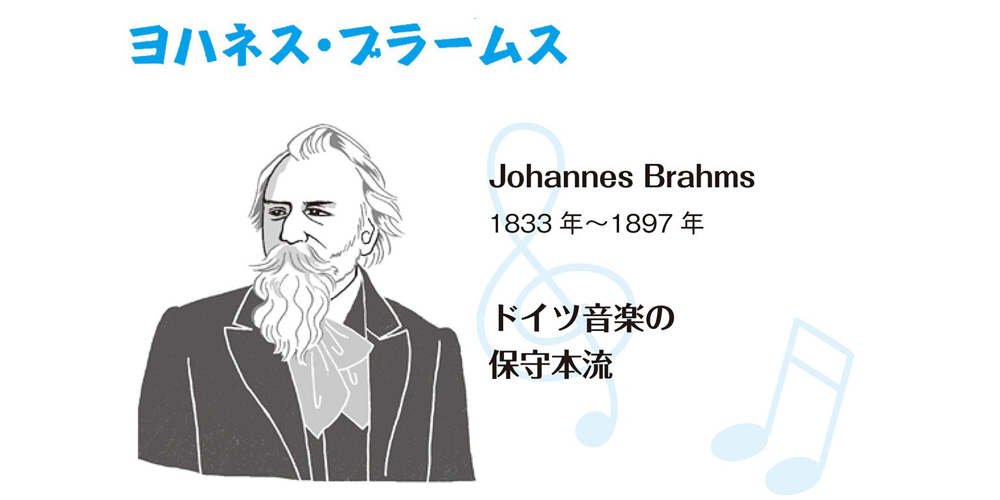
■3大B
40年前の映画『ある愛の詩』で、ヒロインが「4人目のBはビートルズ」というセリフがありますが、これはバッハ、ベートーヴェン、ブラームスが「3大B」だというのが前提となっています。
3人がBなのは偶然ですが、バッハ、ベートーヴェン、ブラームスが、ドイツ音楽の、いわば保守本流なのは確かです。
ベートーヴェンとブラームスの間には、シューベルト、メンデルスゾーン、シューマンらがいますが、3人とも若くして亡くなったこともあり、3大Bほどの存在感はありません。ベートーヴェンの後継者と位置づけられるのは、ブラームスなのです。
■音楽界の底辺から始まる人生
ブラームスは1833年にドイツのハンブルクに生まれました。父は劇場オーケストラのコントラバス奏者でした。一世代前のメンデルスゾーンやシューマンたちが、音楽家以外の裕福な家に生まれ、趣味として音楽を始めたのに対し、ブラームスは音楽家の家に生まれた点で、ベートーヴェン以前の音楽家と似た境遇です。
ブラームスの父はオーケストラの一員、つまりサラリーマンだったので、一家は裕福とは言えませんでした。母は父の17歳も年上でした。姉と弟は身体も弱く内向的で、ブラームスも子供の頃から頭痛持ちだったというので、にぎやかな家庭ではなかったようです。
父が音楽家でしたから、ブラームスは6歳で父から音楽を習いました。最初はヴァイオリンやチェロを習っていましたが、7歳でピアノ教師コッセルに師事します。
ピアニストとしての才能がすぐに開花し、10歳の年に父親が開いた室内楽のコンサートでモーツァルトやベートーヴェンを弾いて、注目されます。たまたまこのコンサートを聴いていた興行師が、アメリカに行かないかと誘ったほどでした。もし、この時にアメリカへ行っていれば、別の人生でしたが、師のコッセルの助言で両親はこの話を断ります。
コッセルはブラームスがあまりにも才能があるので、もう自分の手には負えないと判断し、当時のハンブルクで随一とされた作曲家でピアニストのエドゥアルド・マルクスゼンを紹介し、この天才少年を託します。
マルクスゼンは、ブラームスにはピアノ演奏よりも作曲の才能のほうがありそうだと見て取り、この師によって、演奏よりも作曲へとブラームスの関心も導かれていくのでした。
作曲の勉強をしながら、ブラームスは家計を助けるために、レストランや居酒屋でのピアノ演奏の仕事をして稼いでいました。「作曲では飯が食えない」のは、いまも昔も同じでした。この習作時代の作品はすべて破棄され現存しません。
■シューマンとの出会い
1848年3月、ハンブルクにヴァイオリニストのヨーゼフ・ヨアヒムがコンサートのためにやって来ました。ヨアヒムはブラームスの2歳上で、ハンガリー生まれです。5歳からヴァイオリンのレッスンを受け、12歳でライプツィヒ音楽院に入りました。このライプツィヒ音楽院の院長がすぐにヨアヒムは天才だと見抜き、さっそくメンデルスゾーンやクララ・シューマンと共演して、一躍有名になりました。1848年、17歳からライプツィヒのゲヴァントハウス管弦楽団の楽団員として、またソリストとしても活躍していたのです。
ブラームスはヨアヒムが弾いたベートーヴェンのヴァイオリン協奏曲に深い感銘を受け、自分もこういう音楽を作りたいと思うのでした。
1850年に、ブラームスはロベルト・シューマンが指揮し、クララがピアノ独奏をするコンサートを聴きました。この演奏にも感激したブラームスは、思い切って自作をシューマンに送りました。シューマンは音楽批評家としても名声を得ていたので、評価してもらおうとしたのです。ところが、当時のシューマンは多忙だったので、そのまま送り返してしまいました。
しかし、ブラームスのシューマンへの敬意は変わりません。
1853年、20歳になったブラームスはヨアヒムと直接知り合うようになり、そのヨアヒムの紹介でシューマン夫妻の家を訪ねます。シューマンは暖かく迎え、ブラームスが自作のピアノ・ソナタを弾くと、「ベートーヴェンの後継者だ」と絶賛します。シューマンはライプツィヒの音楽出版社にかけあい、このピアノ・ソナタを出版させました。これが、ブラームスの「作品1」となります。
シューマンは自分が出している音楽批評誌でもブラームスを紹介し、絶賛しました。このようにシューマンの後押しがあって、作曲家ブラームスは世に出たのです。
ブラームスはこれまでの作曲家が、神童としてセンセーショナルにデビューしたり、コンサートが大成功したりして有名になったのとは違い、批評家が文章として批評したことによって世に出たのです。これは、音楽批評と出版ジャーナリズムというものが、この時代になって確立していたことを意味しています。父親がマネージャーとなって売り込む時代ではなくなっていたのです。
この恩があったので、ブラームスは生涯にわたり、シューマン夫妻に尽くします。そう考えると、ロベルトの没後、その妻クララとブラームスが男女の関係になったとは考えにくいのですが、こればかりは真相が分かりません。
■2つの三角形
1854年、シューマンは亡くなります。精神に異常をきたしたうえでの死でした。ブラームスは、シューマンがしっかりしていた最後の数年に間に合ったことになります。以後、未亡人となったクララとその子供たちを、ブラームスは支えていくのです。
1858年にブラームスは、江戸時代後期に日本に来た医師シーボルトの親戚にあたる女性、アガーテ・フォン・シーボルトと知り合います。2人は恋に落ち、婚約までするのですが、ブラームスは「愛していますが、桎梏に束縛されることはできない」と手紙に書き、アガーテは自分の愛がブラームスには重荷なのかと思い、傷つきます。ブラームスが何を考えていたのかは、よく分からないのですが、アガーテはブラームスには会おうとせず、婚約は破談となります。
この破談にクララが関与しているのかどうかは分かりません。ブラームスは、結局、生涯にわたり独身でした。
ロベルト・シューマンとクララ、ブラームスの三角形と、ワーグナー、ビューロー、コジマの三角形は、あまりにも対照的です。19世紀後半のドイツ音楽界は、ワーグナー派とブラームス派に分かれ、両者は互いに攻撃しあうのですが、その根底には女性観があったのかもしれません。この両派の対立はポストを巡っての派閥争いではなく、音楽観を巡る芸術上の論争でしたが、芸術の根底にあるのがエロスなのですから。
アガーテと別れた5年後の1864年、ブラームスは弦楽六重奏曲第2番を書きますが、そのなかで、アガーテへの思いを込めます。日本語では音名はイロハ...となりますが、欧米ではABC...です。ハ長調はCメジャーとなります。アガーテのスペルは「AGATAHE」だったので、そのまま音名になり、ブラームスはこの曲のなかに3回「A-G-A-D-A-H-E」（TはないのでDにした）の音をつなげ、「アガーテ!」との内面の叫びを綴ったのです。一種の暗号です。そして友人への手紙に「これで最後の恋から自分を解き放った」と書きます。
■絶対音楽、民俗音楽
ブラームスはロマン派の時代に生きながら、オペラや交響詩のような標題音楽は書きませんでした。彼が目指したのは、絶対音楽でした。
絶対音楽とは、「標題音楽ではない音楽」のことで、標題音楽が隆盛になったことで、それへの対抗概念として生まれました。言葉に頼るのではなく、音楽は音楽それ自体で表現しなければならないという考えです。標題音楽が具象画であるとしたら、絶対音楽は抽象画と考えればいいでしょう。
ブラームスは生涯に4つの交響曲を書きましたが、標題のあるものはひとつもありません。
ブラームスの交響曲第1番は1876年に完成しますが、着手したのは1855年なので、実に20年もかかったことになります。もちろん、その間に他の曲をたくさん書いていますから、これ1作にかかりきりだったわけではありません。それでも、どうしてこんなにも時間がかかったのかというと、ベートーヴェンをあまりにも意識していたからです。ベートーヴェン以後の作曲家として交響曲に取り組むのであれば、ベートーヴェンの偉大な9曲を凌ぐものでなければ意味がないと、あまりにも良心的に考えてしまったわけです。
こうして完成した交響曲第1番は、好評をもって迎え入れられました。指揮者ビューローは、ベートーヴェンの「第九」に続くものとして、「交響曲第10番だ」と讃えてくれました。
ビューローはワーグナー音楽の指揮者でしたが、コジマとの経緯もあり、ワーグナーから離れ、ブラームスと親しくしていたのです。
1番には苦労しましたが、その後は速いペースで、第４番までの４曲の交響曲を書きました。いずれも古典派の様式にのっとった、まさにベートーヴェン的な交響曲として、いまもコンサートの定番となっています。
このように、ロマン派の時代にいながら古典派に回帰したかのような作風だったので、ブラームスは反動的、保守的だと批判されることもありました。しかし、ブラームスの交響曲には標題はなくても、感情の発露があり、その意味ではロマン派の精神を持っています。ブラームスは古典派様式を堅持しつつ、そこに新しい精神を盛り込み、さらに技法的にも新しいことを考案していました。
1860年代からは人気が高まり、経済的にも豊かになりますが、質素な生活を送りました。このあたりも借金してまで贅沢に暮らしていたワーグナーとは正反対です。
ブラームスはウィーン音楽院教授になり、後進も育てました。また、チェコ出身のドヴォルザークの才能を見出したのもブラームスでした。
その一方で、ワーグナー派だったブルックナーのことは嫌っていて、彼の交響曲を評価しなかったようです。あまりに仲が悪いので、間に入る人がいて、取り持つほどでした。
これまでのクラシック音楽にはないものとして、民俗音楽を取り入れたのも、ブラームスの功績のひとつでした。ハンガリー舞曲などが、民俗音楽をもとにして作られたものです。
教会音楽に始まり理論的に構築された、いわゆるクラシック音楽とは別に、各地の人々が労働や宴席などで歌ったり踊ったり演奏していた音楽があります。日本の民謡もそのひとつですが、そうした音楽を民俗音楽といいます。それらは、クラシックの音楽家からは無視されていたのですが、ブラームスはそれを、クラシック音楽化した最初期のひとりでした。この手法は、ドヴォルザークによって広まっていきます。
1896年にクララ・シューマンが76歳で亡くなると、その翌年、ブラームスは63歳で亡くなりました。
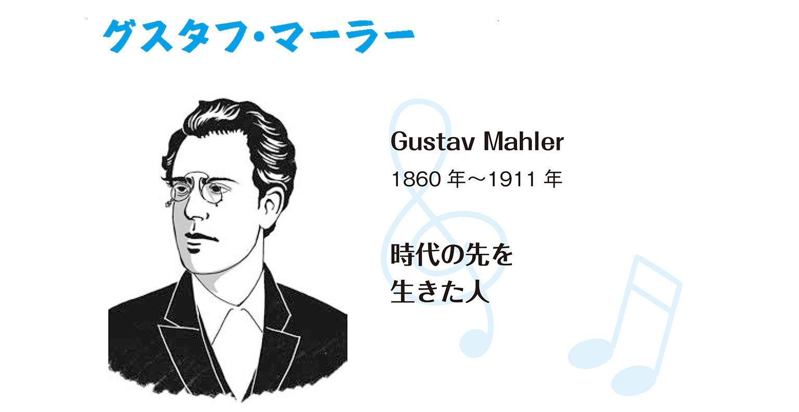
■指揮者が本業だった
オーケストラの指揮者という職業は19世紀半ばに専業となります。それまでは作曲家が副業として指揮者をしていたわけですが、専門職となるわけです。その最初の専業指揮者がハンス・フォン・ビューローだと言われています。マーラーはその次の世代にあたり、最初は作曲家を志しましたが、陽の目を見ず、指揮者として活躍しました。その夏の長期休暇に交響曲や歌曲を書いていましたが、存命中はそれほど高く評価されず、あくまで指揮者として知られていた人です。
したがって、作品数はそれほど多くありませんが、完成した9つの交響曲は未完の第10番を含め、現在では最もよく演奏されるレパートリーになっています。
■ユダヤ系の裕福な家
マーラーは、1860年、当時はオーストリア領だったボヘミアで、ユダヤ人実業家の子として生まれました。父親は酒造業を創業した人で、教養人でした。このあたりは、メンデルスゾーンと似ています。14人の子が生まれましたが、7人が生後すぐに亡くなり、第2子のマーラーは実質的には長男として育てられました。ユダヤ系でしたが、マーラーはドイツ文化のなかで育ち、4歳でアコーディオンを弾いて、10歳で最初のピアノ演奏会を行うなど、幼少期から音楽の才能が開花していました。将来は音楽家になると、自然に、自分も周囲も思っていたようです。
1875年、15歳でウィーン楽友協会音楽院（現在のウィーン国立音楽大学）に入りました。17歳になる1877年にはブルックナーによる対位法の講義を受けるようになり、師弟関係が結ばれました。
マーラーは音楽院を1878年に卒業、ウィーン楽友協会主催の公募による作曲賞であるベートーヴェン賞に応募します。しかし、審査員だったブラームスが、マーラーがワーグナー派のブルックナーに師事していたことから、落選にしてしまいます。ウィーン音楽界を二分していた派閥争いの犠牲者と言えるのです。
■生活のために指揮者に、しかし作曲も捨てられない
こうして作曲家への道が閉ざされてしまったので、マーラーは生活のため、指揮者としての仕事を始めます。その前にはピアノの家庭教師の仕事もしたのですが、レッスン料を踏み倒されるなど、なかなかうまくいきません。
最初は地方の小さな歌劇場からスタートしましたが、やがてカッセル、プラハ、ライプツィヒなどの大都市の歌劇場で指揮者として活動し始めます。1884年には、偶然知り合ったビューローに、弟子にしてくれと頼みますが、あっさりと断られてしまいました。
1888年には28歳にしてブダペストのハンガリー王立劇場の首席指揮者に就任しました。日々の公演を指揮するだけでなく、年間のプログラムを決め、歌手の人選をするなど、かなり権限が大きく、また忙しい仕事です。
この間も、作曲を完全に止めてしまったわけではなく、《さすらう若者の歌》《子供の不思議な角笛》といった歌曲を作曲し、ハンガリーに行った年には、交響曲第1番も作曲しています。またオペラの指揮だけでなく、シンフォニー・コンサートの指揮者としての仕事も始めました。マーラーは、ビューローの弟子となれなかったので、指揮を独学で学んでいったことになります。
■栄光のポスト
1889年に、マーラーはワーグナー演奏で高い評価を得て、オペラ指揮者として確固たる地位を築きますが、両親を相次いで亡くします。29歳。完全に自立する年でした。
1891年には、ハンブルク市立劇場の第一楽長になり、ここは比較的長く在任していました。このハンブルク時代には、交響曲は第2番と第3番を書き上げています。弟が21歳で自殺する悲劇もありました。
オペラ界の頂点であるウィーン宮廷歌劇場は、2010年まで小澤征爾氏が音楽監督を務めていたウィーン国立歌劇場の前身にあたる歌劇場です。マーラーは1897年5月にこの歌劇場の第一楽長に就任し、10月からは芸術監督となりました。音楽界の最高ポストに上り詰めたのです。37歳でした。
しかし、このポストに就くためには、マーラーはユダヤ教からカトリックに改宗しなければなりませんでした。
歌劇場というのは、歌手、オーケストラのほか、大道具・小道具・照明・衣装などの裏方に、事務のスタッフ、営業スタッフなど、さまざまな人がいます。さらに多くが、国立あるいは州立なので、政治家との関係も深く、魑魅魍魎が跋扈して、陰謀と確執が渦巻いている世界です。マーラーもそのなかに巻き込まれ、ただ音楽に取り組んでいればいいわけではなく、さまざまな苦労がありました。
なかでもウィーンは、長年にわたり世界政治の中心地だったこともあってか、とても政治が好きな都市で、音楽家たちも市民も政治的に行動し、持ち上げたかと思うと、潰しにかかる人々が多かったので、マーラーは苦労しました。
とくに、マーラーの場合、改宗したとはいえもとはユダヤ教徒だったため、反ユダヤ感情の濃いウィーンでは、それだけで敵が多かったのです。そこに、マーラーはオペラ上演において次々と革新的なことをやり遂げ、当時の新しい作品を意欲的に上演したので、保守的な観客層からは強い反発を受け、メディアでも叩かれました。
■運命の女性アルマ
1902年、42歳の年にマーラーはアルマ・シントラーと結婚しました。アルマは当時のウィーンでは有名な女性でした。1879年に画家の娘として生まれ、父が亡くなると、アルマの母はウィーン分離派の創始者のひとりであるカール・モルと再婚、いずれにしろ「画家の娘」であったアルマは、とても美しい女性だったので、クリムトをはじめとするウィーン世紀末の芸術家たちのあいだで、アイドル的な存在となっていました。画家や音楽家などが、彼女の愛を射止めようと競っていたのです。アルマは作曲家になりたいと考え、その勉強もし、実際に歌曲をいくつか作っていました。
そのアルマとパーティーで知り合ったマーラーは、一目惚れとなり、求婚します。アルマは数多くいた恋人たちを振って、マーラーを選びました。アルマはマーラーの19歳下、結婚した年は23歳でした。マーラーはそれまでにも歌手と噂になるなど、それなりの女性関係はあったようですが、42歳になるまで結婚はしていなかったのです。
ウィーン宮廷歌劇場芸術監督という世界最高の地位と、ウィーン一の美女の妻──マーラーの人生は絶頂にありました。歌劇場は9月にシーズンが始まり6月に終わるので、夏の間は仕事がありません。この2ヵ月の休暇を使って、マーラーは毎年交響曲を仕上げていきます。
夫婦の間には、2人の女の子が生まれました。しかし、4歳になった長女が1907年に猩紅熱で死んでしまいます。アルマはそれが原因で心神耗弱状態になり、サナトリウムで療養していましたが、そこで若い建築家グロピウスと出会い、不倫の関係になってしまいます。妻の不倫を知ったマーラーは悩み、後に精神分析医のS.フロイトに相談に行きます。
ウィーン宮廷歌劇場の仕事も、10年目にして、ついに歌劇場当局との亀裂がどうしようもなくなり、辞任します。
しかし、マーラーには新天地が待っていました。アメリカです。ニューヨークのメトロポリタン歌劇場から高額の報酬で招聘されたのです。しかし、ここでもイタリアの指揮者トスカニーニとの対立など、音楽以外の問題でトラブルが続き、1シーズンで辞め、同じニューヨークのフィルハーモニック管弦楽団の指揮者となり、このオーケストラを徹底的に鍛え直しました。
■早すぎた死
アメリカ時代も、夏にはヨーロッパに戻り、交響曲の作曲を続けました。しかし、1911年2月、アメリカで病に倒れ、どうにかウィーンに帰りましたが、5月に敗血症で亡くなりました。51歳の誕生日の直前でした。
指揮者としては頂点に達したマーラーですが、作曲家としては、早すぎる晩年になってようやく、評価されだしたところでした。まだまだこれからという時の、無念の死でした。
アルマは、マーラーの死後、画家ココシュカと関係を持ちますが、1915年にかつての不倫相手グロピウスと結婚。しかし、数年で破綻して離婚、作家ヴェルフェルと同棲して、10年ほど後の1929年に結婚しました。ナチのオーストリア併合の後、アルマはアメリカに亡命します。ナチ時代のドイツでは、マーラーがユダヤ人だったので、彼の曲はほとんど演奏されませんでした。死んだ後もマーラーの音楽は苦難が続きます。
アルマは1964年にニューヨークで亡くなります。何人もの大芸術家と関係のあったアルマでしたが、最も愛し、尊敬していたのはマーラーだったようです。マーラーの死から半世紀が過ぎ、バーンスタインらによるマーラー演奏が話題を呼び、ブームとなったのを見届けたうえでの死でした。
マーラーのブームが死後半世紀経ってから起きたのは、死後50年で著作権が切れたのでオーケストラとしてはマーラーの遺族に使用料を払わなくてよくなったという経済的理由もありました。しかし、それ以上に、起伏が激しくうねりまくり、狂気と背中合わせの音楽が、時代に合ってきたのでしょう。
20世紀半ば、ロックが大流行する時代、音楽は不安定でとらえどころのないこの社会と人間の心を、ストレートに表現するものになっていました。マーラーの音楽は、それを先取りしていたのです。
ＣＯＬＵＭＮ
国民楽派
クラシック音楽は、一種のグローバル・スタンダードでもあります。社会・経済システムはアメリカのものがスタンダードとなっているわけですが、音楽においてはドイツの音楽がグローバル・スタンダードとしてヨーロッパ各国に、そしてアメリカ、さらには日本などに広がりました。
しかし、それぞれの国には固有の文化と伝統があるわけで、音楽においても民族固有の音楽がありました。東欧、北欧など、ヨーロッパの中心部から外れた地域では、最初はドイツ音楽を取り入れて、その様式や手法を真似していましたが、やがて、自分たちの民族にふさわしい音楽を作るべきだとの考えが生まれてきます。
それは、神聖ローマ帝国がナポレオンによって崩壊した後も、オーストリア、プロイセン、ロシアといった強国の支配下にあった東欧の国々の民族独立運動の高まりとも連動したものでした。
そうしたなかで各国に生まれた音楽を「国民音楽」、その音楽家たちを「国民楽派」と呼びます。
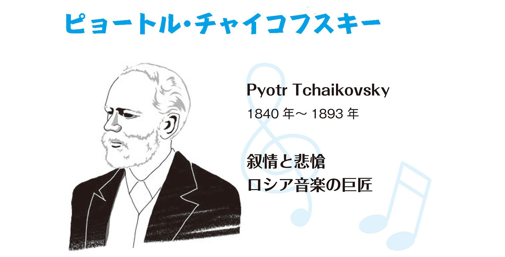
■ロシア5人組
音楽における民族主義が最初に高まったのは大国ロシアでした。ロシアはエカテリーナ2世がドイツ出身だったこともあり、国家の中枢がドイツの影響を大きく受けていました。音楽の分野でもドイツから教師が招かれ、ドイツ流の音楽が主流だったので、それへの反発が生まれるのも早かったのでしょう。
19世紀後半、ロシアの芸術家たちのあいだで、ドイツかぶれから脱却すべきという風潮が高まりました。それは文学の分野で始まり、次に音楽に影響します。
音楽評論家のバラキレフが1856年に「ロシア民族固有の音楽を作ろう」と呼びかけ、キュイ、ムソルグスキー、リムスキー＝コルサコフ、ボロディンが加わり、ロシア5人組が結成されます。ボロディンが加わるのは1862年なので、このときに5人になったわけですが、別に5人で合作したわけでもなく、いつも一緒に活動していたわけでもありません。5人はそれぞれのやり方で、ロシア的な題材のオペラを作るなどしていました。こうして、ロシア・オペラが生まれます。
この5人と同世代に生きながらも、別の道を歩んでいたのがチャイコフスキーなのです。
■最初は法律学校に進学
チャイコフスキーは1840年に、ロシアのウラル地方ヴォトキンスクで、鉱山技師の次男として生まれました。両親とも音楽には関係のない家柄です。母方の祖父がフランス人でしたので、4分の1はフランス人の血が流れています。
音楽的には恵まれた環境で育ったわけではないので、神童─天才少年コースではありません。それでも音楽の才能は子供の頃からありました。
フランス人の女性教師によって育てられ、この年上の女性が「初恋の人」とも伝えられます。
両親はチャイコフスキーを音楽家にさせるつもりはないので、10歳でペテルブルクの法律学校に入学させました。この学校は、名門校ではあるのですが、同性愛の雰囲気に満ちていた学校で、この学生時代にチャイコフスキーもこの危険な道に足を踏み入れたと推測されています。在学中の1854年には母が41歳の若さでコレラにより急死し、チャイコフスキーを悲しませました。
そしてこの法律学校時代に宮廷合唱団の指導者から音楽について本格的に学びます。
1859年、19歳の年にチャイコフスキーは親の意向に従って、法務省に勤務し、趣味として音楽を楽しむ日々を過ごしていました。
■音楽院を卒業と同時に教授に
1861年、ロシア音楽協会が専門的な音楽教育を始めます。ロシア5人組もこの頃には活動を活発化します。チャイコフスキーはこうした動きに刺激され、1863年、法務省を辞めて、創設されたばかりのペテルブルク音楽院に入学します。23歳の学生です。
1866年にペテルブルク音楽院を卒業すると、モスクワに創設された音楽院の講師となり、赴任します。ロシア音楽界は人材難だったので、チャイコフスキーのように卒業したばかりの若者を講師としたわけですが、もちろん、彼に並外れた才能があったからでした。
1866年には、チャイコフスキーの最初の交響曲《冬の日の幻想》が初演され、最初のオペラ《地方長官》も完成しました。
ロシア5人組とは音楽的には対立しますが、個人的には親しくなります。またイタリアの歌劇団がロシア公演をした際に、そのソプラノ歌手アルトーと知り合い、一目惚れし、一気に婚約にまでいたります。ところが、彼女は１カ月もたたないうちに、ワルシャワでテノール歌手と結婚してしまい、大失恋をします。
チャイコフスキーには同性愛説がありますが、女性関係もけっこう華やかなのです。
■ピアノ協奏曲第1番と破綻した結婚
初期の作品はロシア5人組の影響もあってか、民族的要素を取り入れたものが多かったのですが、しだいに、ロシアの民族色は薄まっていきます。
ロシア5人組の、リムスキー＝コルサコフ、ボロディン、ムソルグスキーなどはいまでもロシア国内では絶大な人気がありますが、世界的にはチャイコフスキーにはかないません。日本でもチャイコフスキーは圧倒的に人気があるわけですが、それはあまりロシアっぽくないからとも言えるのです。
1875年、チャイコフスキーは自信をもってピアノ協奏曲を書き上げました（第1番）。当時のロシアで最高のピアニストであるニコライ・ルビンシテインに初演してもらおうと、楽譜を見せたところ、「こんなものは弾けない」と酷評されてしまいます。
すっかり意気消沈したチャイコフスキーでしたが、自信があったので、ドイツの指揮者ハンス・フォン・ビューローに楽譜を送ると、彼は激賞し、さっそく初演してくれました。スケールの大きなこの協奏曲は、たちまちヨーロッパ中で演奏され、大評判となります。ルビンシテインは大恥をかいたのでした。これにより、チャイコフスキーとルビンシテインは決裂しました。
最も有名な作品であるバレエ《白鳥の湖》は1876年に完成しました。この頃、音楽院の男子生徒とちょっと怪しい関係になったと伝えられます。
その一方で、1877年、チャイコフスキーは音楽院の生徒だった女性と電撃結婚します。5月に愛を告白され、7月18日に結婚という慌ただしさでした。ところが、2週間にしてこの結婚は事実上、破綻します。
神経衰弱になったチャイコフスキーは新妻から逃れるように妹の家で夏を過ごし、9月に妻のもとに戻りますが、すぐにモスクワ河に入水し自殺を図るのです。幸いにも助かりますが、もう妻のもとへは帰りたくないというので、弟のもとに身を寄せました。
弟は精神科の医師と相談して診断書を書いてもらい、離婚が成立し、この奇妙な、そして悲惨な結婚生活は終わります。結婚はこれが最初で最後でした。
■女性大富豪の支援を受ける
このように、1870年代半ばには傑作も集中し、私生活も事件が多いのですが、この頃、チャイコフスキーはひとりの女性大富豪と知り合います。
作品が演奏されていたとはいえ、そこから得られる収入ではとても暮らせないので、チャイコフスキーは音楽院の仕事も続けていたのですが、この女性と知り合うことで、12年に及ぶ教師生活から足を洗い、作曲に専念できるようになりました。
その大富豪とはメック夫人。1831年生まれなので、チャイコフスキーの9歳上で、地主の娘です。もともと金持ちの娘だったのですが、16歳になる1847年にモスクワの鉄道王カール・フォン・メックと結婚、その夫が1876年に亡くなり、莫大な遺産を相続し、45歳にして未亡人となったのです。彼女は子供の頃から音楽に親しんでいたので、新進作曲家として頭角を現してきたチャイコフスキーのパトロンとなり、14年にわたり、毎年6000ルーブルを年金として与えました。チャイコフスキーの交響曲第4番はこのメック夫人に捧げられています。
こうなると、当然、2人は男女の関係にあったのではないかと邪推したくなるところですが、2人はベッドをともにするどころか、一緒に食事さえもしたことがなかったのです。つまり、一度も会わず、その代わりに14年に1300通の手紙を交わしたのでした。
ちなみに、このメック夫人は、音楽史上もうひとりの偉大な音楽家の人生にも登場します。フランスのドビュッシーは少年時代に、メック夫人の娘のピアノ教師として雇われるのです。
■次々と傑作が生まれる
チャイコフスキーは生活が安定したことで、ますます創作に打ち込みます。さらに指揮者としてもヨーロッパ各地、さらにはアメリカでも演奏し、人気がありました。
1884年のオペラ《エヴゲニー・オネーギン》はロシア皇帝から絶賛され、続いてオペラでは《スペードの女王》、バレエでは《眠りの森の美女》、交響曲第4番、第5番と次々と傑作が生まれました。
暗い影が差しかかるのは1890年で、メック夫人が精神を病み、自分が破産したと思い込み、チャイコフスキーへの資金援助を突然、一方的に打ち切ってしまうのです。チャイコフスキーには何がなんだか分からない話でした。
メック夫人の援助はなくなりましたが、すでに大作曲家にして名指揮者だったチャイコフスキーでしたので、貧乏になることはありませんでした。
1891年にはバレエ《くるみ割り人形》が完成し、さらにアメリカに旅行し、カーネギー・ホールのこけら落としに出演しました。
■斬新な終わり方だった交響曲第6番《悲愴》
そして、1893年、交響曲第6番《悲愴》を完成させ、10月28日にチャイコフスキー自身の指揮により、ペテルブルクで初演されました。
これまでの交響曲はベートーヴェンにしてもブラームスにしても、最後はジャン、ジャーンと盛り上がって終わるものでした。ところが《悲愴》は、いつ終わったのか分からないように、静かに終わるのです。こんな音楽はかつてありませんでした。初演に列席した人々は、どう反応していいのか戸惑うばかりでした。しかしチャイコフスキーはこの作品に自信を持っていました。
《悲愴》初演から9日後の11月6日、チャイコフスキーは急死します。コレラあるいは肺水腫が死因とされていますが、ある公爵の甥との同性愛が発覚し、自殺するよう強要されたとの説もあり、真相は分かりません。
メック夫人は、チャイコフスキーの死の2カ月後の1894年1月、静養先のニースで結核のため亡くなりました。
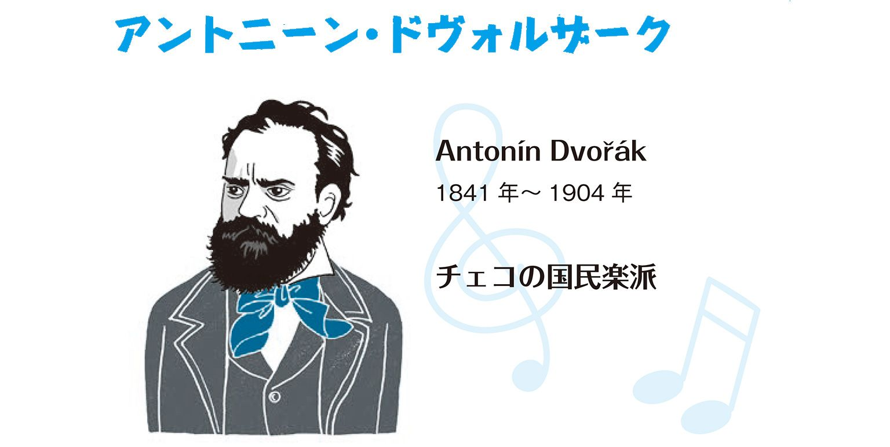
■才能はあるが無名の少年時代
国民楽派は各国にいるわけですが、なかでもチェコの2人、ドヴォルザークとスメタナが有名です。年長なのがスメタナで1824年生まれ。チェコ国民楽派の創始者とされる人です。《わが祖国》がその代表作で、民族運動と連動した作品を書き、まさに国民的作曲家となりました。ドヴォルザークはこのスメタナの一世代後となります。
ドヴォルザークは、1841年にプラハの北にある、北ボヘミア地方のクラルピ近郊の村に生まれました。生家は肉屋と宿屋を営んでいましたが、父はツィター（弦楽器）の名手として村では有名で、自作の曲を演奏していました。そんな家でしたので、ドヴォルザークは音楽が周囲にある環境で育ちました。
父親にとって、音楽はあくまで趣味として楽しむものでした。ですから息子にも自分の店を継がせるつもりで、13歳の年に小学校を中退させ、30キロ離れた町に肉屋修行に出します。父親としては肉屋にさせるつもりでしたが、運命のいたずらで音楽との本格的な出会いとなります。この町の職業専門学校の校長は、音楽家でもあり、教会のオルガニストを務め、作曲もし、小楽団の指揮者もしていたのです。この校長はドヴォルザークに音楽の才能があると見抜くと、ヴァイオリンやヴィオラ、オルガンの演奏を教え、さらには音楽理論の基礎も教えたのです。
両親は引っ越して、飲食店を始めていましたが、この経営がうまくいかず、ドヴォルザークに音楽の勉強をさせておく余裕がなくなり、学校を退学して店を手伝うように言います。これに音楽に理解のある伯父が反対し、「自分が学費を負担するから」と言って、ドヴォルザークをプラハのオルガン学校へ入れてくれます。1857年、16歳の年です。
■スメタナとの出会い
ドヴォルザークは1859年、19歳でオルガン学校を卒業すると、ホテルやレストランで演奏する、カレル・コムザーク楽団のヴィオラ奏者となりました。チェコは、ドイツのようにちょっとした町には歌劇場とオーケストラがあるという状況ではありません。そのため、こういう楽団で仕事をするしかなかったのです。他に、音楽の家庭教師もして稼ぎました。作曲も始めていましたが、まったく無名のままでした。
チェコはオーストリアの支配下にあり、首都プラハにはドイツ人のための歌劇場はありましたが（モーツァルトのオペラが初演されました）、チェコ人のための歌劇場はなかったので、1862年に国民劇場建設が決まります。ドヴォルザークは国民劇場のオーケストラのヴィオラ奏者となりました。
1866年にはこの国民劇場に、チェコを代表する作曲家であるスメタナが指揮者として着任し、ドヴォルザークは師弟関係を結びました。
■ブラームスに認められる
オーケストラの一員としての活動と並行して、ドヴォルザークは作曲も本格的に始めています。1865年には交響曲を発表していますし、1870年には最初のオペラ《アルフレート》を書き上げました。1871年に、作曲に専念したいと考え、オーケストラを退職しますが、生活のために音楽の家庭教師をすることになります。なかなか食べていけません。
最初の大成功は、1873年の愛国的カンタータ《賛歌・白山の後継者たち》でした。1875年にはオーストリアの奨学金に応募し、賞金を得ました。このときの審査員がブラームスでした。それまでのドヴォルザークはワーグナーの影響を受けていたのですが、これをきっかけにブラームスと親交を結ぶようになり、ワーグナーの影響から脱していきます。
ワーグナーから脱することで、ドイツ音楽の様式や伝統からも自由になり、ドヴォルザークはチェコ独自の音楽の確立へと進みました。チェコの民族色が前面に出たのが、1878年の《スラヴ舞曲》でした。ここに、民謡や民俗舞曲が、クラシック音楽となったのです。
■2人の国民楽派の違い
チェコ国民楽派のもうひとりの巨匠であるスメタナとドヴォルザークとは、「国民音楽」の定義で大きな違いがありました。スメタナは民族固有の歴史や物語を題材としながらも、その音楽の形式や書式は西洋音楽の普遍的な技法、すなわちドイツ音楽の伝統に従うべきと考えていたので、民謡や民俗舞曲の引用には反対していたのです。
ローカル色を出すことが国民音楽なのか、国民の物語を世界共通の音楽言語で書くことが国民音楽なのか。どちらも正しいわけで、まさに考え方の違いでした。スメタナはドヴォルザークが成功する頃から、梅毒が原因で耳が悪くなりますが、それでも作曲を続け、前述の交響詩《わが祖国》は1882年に初演されました。しかし、1884年に精神に異常をきたし、精神病院で60歳の生涯を終えます。
スメタナと入れ替わるように、ドヴォルザークの名声は高まり、交響曲やオペラ、室内楽曲を次々と発表、チェコ国内にとどまらず、ドイツやイギリスにも演奏旅行に出かけるようになります。
■アメリカへ
ヨーロッパで活躍していた音楽家がアメリカへ渡るようになるのが、19世紀の終わりからです。経済成長が著しいアメリカは、ヨーロッパ文化への憧れを強くし、資金力にものをいわせ、ヨーロッパの優秀な音楽家を招聘していきます。
ドヴォルザークは1891年からプラハ音楽院で作曲を教えていましたが、1892年秋からの2年間、ニューヨークのナショナル音楽院の院長に招聘されました。アメリカでも国民楽派を作ろうという目的で設立された学校です。
ドヴォルザークに提示された年俸は1万5,000ドル、いまの日本円で億を超える大金でした。
ドヴォルザークとしては努力したつもりでしたが、任期の2年間でアメリカ独自の作曲家を育てることはできませんでした。しかし、ドヴォルザーク自身には大きな収穫のある2年間でした。彼はネイティブ・アメリカンや黒人の音楽を研究・吸収でき、それが不朽の名曲交響曲第9番《新世界より》や弦楽四重奏曲第12番《アメリカ》になるのです。
《新世界より》の「新世界」はもちろんアメリカのことです。この交響曲の第2楽章は「家路」という歌にもなりますが、アメリカの民族音楽を引用したものだと言われています。
帰国後はプラハ音楽院の教授、後に院長にもなり、後進を育てました。多くのオペラの作曲もして、国民的作曲家として栄光の日々を送ります。
亡くなったのは、20世紀に入った1904年。63歳でした。その葬儀には大群衆が参列しました。
ＣＯＬＵＭＮ
フランス印象派音楽
音楽用語と美術用語は、バロック、古典派、ロマン派など共通でありながら、意味が異なるものが多いので、注意しなければなりません。
19世紀後半、美術の世界では印象派を中心にしたフランスが主導権を握っていましたが、音楽面ではフランスはぱっとしない状態が続いていました。オペラの人気はあり、《カルメン》で有名なビゼーなどが活躍しますが、オペラ以外のジャンルは不振だったのです。ドイツ・ロマン派が隆盛でした。
ロシアや東欧・北欧で国民音楽運動が盛り上がると、フランスでも、1871年にフランス国民音楽協会が結成され、フランスの国民音楽の確立を目指しました。この運動の中心となったのが、フランク（1822～1890）と、サン=サース（1835～1921）です。とくに、サン=サースはフランスらしい音楽を書きました。では、その「フランスらしい」とは何なのでしょうか。軽妙で色彩感があり、叙情的、というのが、なんとなくのフランスらしい音楽のイメージです。この流れの延長に登場するのが、ドビュッシーとラヴェルで、音楽における「フランス印象派」と呼ばれます。色彩感にあふれた音楽で、輪郭が曖昧で、形式から自由になっているから、印象派絵画に共通するところがあるので、「フランス印象派」と呼ばれるわけですが、彼らがそう名乗っていたわけではありません。
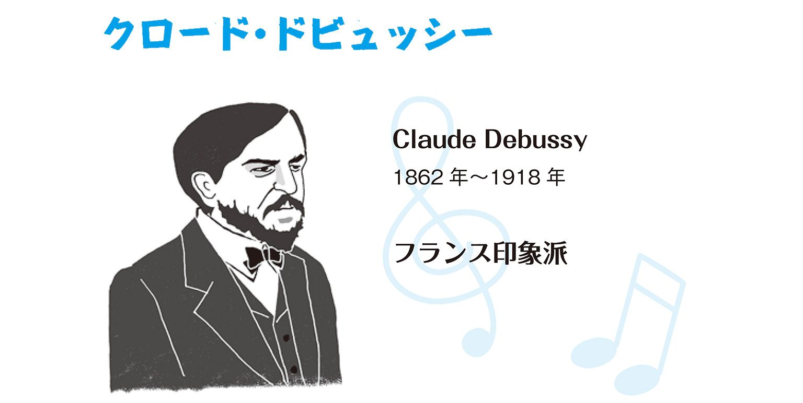
■10歳でパリ音楽院に
ドビュッシーは1862年にイヴリーヌ県のサン・ジェルマン＝アン＝レーに生まれました。父はドビュッシーが生まれた時は陶器商でしたが、職業をよく変える人で、1871年のパリ・コミューンでは国民軍に加わったため、投獄されてしまいました。そこで、ドビュッシーはカンヌにいる伯母のもとで暮らし、ピアノも習いました。ここで音楽の才能があると発見されるのです。
1872年、10歳の年にパリ音楽院に入学し、84年まで在籍し、ピアノ、音楽理論、和声学、作曲法などを学びました。
音楽院在籍中の1880年には、チャイコフスキーのパトロンだったメック夫人が娘と長期旅行した際に、娘のピアノ教師兼宴席でのピアニストとして同行しました。メック夫人とチャイコフスキーとの関係はまだ良好でしたので、夫人はドビュッシーが書いたピアノ曲をチャイコフスキーに郵送し、評価を求めました。すると、「とてもかわいらしい曲ですが、短かすぎます」との返事が届きます。要するに、まだお話にならない未熟な作品、ということでしょう。
若い男女が長期旅行に出れば、恋愛関係になるのはあまりにも当然の話で、ドビュッシーとメック夫人の娘は恋に落ち、これを知った夫人は怒って、解雇してしまいます。貴族にとって、音楽家はあくまで使用人か、庇護する対象であり、対等の人間関係などもってのほかという考えが、当時はまだ支配的だったのです。
こうして、ドビュッシーとメック夫人との関係は終わり、チャイコフスキーのように経済的支援を受けることはできなくなりました。しかし、夫人と共にロシア旅行をしたこともあり、チャイコフスキーやロシア5人組の音楽を深く知り、その影響を受けていきます。
「フランス音楽」には伝統らしきものがないため、ドビュッシーはさまざまな国の音楽を、まっさらな状態で吸収できたのです。彼がこれまでにない独自の音楽世界を築けたのは、このように、伝統に縛られていないからでもありました。
■ローマ、バイロイト、万国博
ドビュッシーの遍歴は続きます。
1884年、22歳の年に、ドビュッシーはフランス芸術アカデミーのローマ賞をカンタータ《放蕩息子》で受賞します。かつてベルリオーズもこれを受賞してローマ留学しますが、すぐに帰国してしまいました。ドビュッシーにとっても、ローマはあまり面白くなかったようで、予定より早く帰国してしまいますが、他にも理由がありました。これもベルリオーズと同じで、「女」。相手は14歳年上の人妻ヴァニエ夫人でした。
ドビュッシーがパリの上流階級の女性たちの声楽塾でのピアノ伴奏の仕事をしていた際に、知り合ったのです。32歳の女ざかりの妖艶な人妻に、18歳のドビュッシーは簡単に落とされてしまいます。彼の初体験はこの人妻だという説が有力です。
夫人に気に入られたドビュッシーは、ヴァニエ家に出入りするようになり、弁護士だった夫ヴァニエ氏も彼を気に入って、一部屋与えてくれたり、別荘に連れて行ってくれたりします。はたして、このヴァニエ氏が妻とドビュッシーの不倫の関係を知っていたのかどうかは、永遠の謎です。
ヴァニエ夫人と関係を持ったことで、ドビュッシーは「女」を学んだだけでなく、「文学」も学びました。ヴァニエ家は蔵書がたくさんあり、ドビュッシーはそれを片っ端から読んでいったのです。ドビュッシーは音楽の勉強はしていましたが、正規の学校教育は受けていなく、一般教養に欠けていましたが、それをヴァニエ家の蔵書を読むことで身に付けていったのです。
こうしてドビュッシーは文学に親しむようになります。当時の文学の最先端は象徴主義でした。ドビュッシーの音楽の題材になるのは、この象徴主義文学なのです。ヴェルレーヌやマラルメの詩集に彼は深く傾斜していきます。
1888年と89年、ドビュッシーはまだ創生期といえるバイロイト音楽祭に行き、ワーグナーの音楽に接しました。ドビュッシーのオペラにはワーグナーの影響があるとされますが、この体験が脳裡に残っていたのでしょう。
1889年はパリで万国博覧会が開かれた年でもあります。日本は明治22年で、この万博に出展しています。ドビュッシーはこの万博を訪れ、日本をはじめとする東洋の芸術と触れ合いました。音楽としてはジャワ島のガムラン音楽の演奏を聴きます。ドビュッシーの曖昧な音楽の原点はこのあたりなのかもしれません。
この1889年はドビュッシーがフランス国民音楽協会に入会した年でもあります。ドビュッシーは、国民音楽協会の演奏会で、《牧神の午後への前奏曲》、《版画》など、次々と作品を発表していきます。1902年にはオペラ《ペレアスとメリザンド》も初演され、作曲家としての地位を確固たるものとしました。
■女性を不幸にしていく男
優れた創作と乱れた女性関係が同時期に進行するタイプの芸術家がいますが、ドビュッシーもそのひとりでした。
ヴァニエ夫人との不倫の関係は8年で終わり（かなり長いとは言えます）、1889年、27歳の年にはガブリエル・デュポンというお針子と同棲を始めます。もちろん彼女は裕福ではなく、献身的にドビュッシーに尽くすのです。しかし、10年も同棲していたのに結婚はせず、ドビュッシーはロザリーという女性と知り合うと、あっさりとガブリエルを捨てて、結婚してしまうのです。1899年のことでした。
ガブリエルは絶望しピストル自殺を図ります。一命は取り留めましたが、こうしてガブリエルはドビュッシーの前から消えてしまいます。
ドビュッシーの最初の正式な妻となったロザリーでしたが、その地位は長くは続きませんでした。結婚して5年目の1904年になると、ドビュッシーはピアノの教え子の母親、銀行家の人妻であるエンマ・バルダックと不倫関係になるのです。彼は、年上の人妻が好きというか、好かれるタイプのようです。
この不倫を知ったロザリーはコンコルド広場で胸を銃で撃ち自殺を図ります。彼女も命は取り留めますが、翌年に離婚しました。彼と付き合ったがために、2人の女性が自殺未遂に追い込まれたのです。
ガブリエルのとき、友人たちは「しょうがない奴」だとは思いましたが、それほどドビュッシーを糾弾しませんでした。しかし、今回は友人たちも赦さず、ドビュッシーは孤立してしまいます。
■交響詩《海》が酷評された理由
この頃に発表された交響詩《海》は、ドビュッシーの最高傑作として讃えられていますが、そんな事情で当時はこの作品まで酷評されました。坊主憎けりゃ袈裟まで憎い、といったところでしょうか。
エンマがドビュッシーの子を身ごもったと分かると、2人はイギリスに逃避行しました。その子が生まれるときにはパリに戻り、同棲生活が始まり、エンマの離婚後、1908年に結婚しました。2人の間の娘クロード・エマはドビュッシーに溺愛され、《子供の領分》はこの娘のために書かれたものです。
エンマと正式に結婚したあたりから、周囲の人々も寛容になりました。ドビュッシーは私生活も落ち着き（そのために泣いた女性もいたわけですが）、「前奏曲集 第1集」、舞台音楽劇《聖セバスティアンの殉教》など、後期の傑作を書いていきます。
1914年、ドビュッシーは第1次世界大戦勃発の年に大腸癌を発病し、1918年に亡くなりました。彼の最愛の娘は、まるで彼があの世から呼んだかのように、その翌年に14歳で亡くなりました。
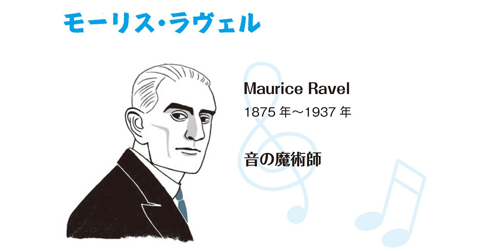
■魔術的な音楽
ドビュッシーと並ぶ、フランス印象派音楽の巨匠がモーリス・ラヴェルです。ドビュッシーより一世代後になり、同じ国に同じ時代に生きたのですが、それほど深い関係はありません。
ドビュッシーによって輪郭を失った音楽は、ラヴェルにより、さらに曖昧なものとなり、オーケストラの色彩はより豊かになります。曖昧といっても、メロディーは明確で、リズムもしっかりあるのですが、どこかとらえどころのない音楽なのです。それは魔術的とでも表現したらいいでしょう。
ラヴェルによって、フランス音楽はひとつの頂点を極めるのです。
■パリで育った音楽少年
ラヴェルは1875年に、フランス南西部、スペインとの国境に近いバスク地方のシブールで生まれました。父はスイス系フランス人、母はこの地域の人で、スペイン系の血も混ざっていました。バスク地方は魔術への関心が高い地域でもあり、ラヴェルの音楽に魔術的な響きがあるのはその影響ではないかとも解説されています。
父ジョゼフは「発明家兼実業家」なのですが、要するに山師的な人でした。一説には、自動車へ繋がる内燃機関の開発者でもあるといいます。母マリーと知り合った時はスペインで鉄道建設に従事していました。母については30代半ばまでの経歴が不明の、謎の女性のようです。一家がパリへ移住したのもはっきりしませんが、1879年に弟エドゥアールが生まれる頃にはパリにいたようです。パリでは何度も引っ越していました。
けっして裕福な家庭ではありませんでしたが、ラヴェルは7歳でピアノを始め、やがて和声法と対位法の作曲のレッスンも受けるようになります。
両親はラヴェルに音楽の才能があることを喜び、パリ音楽院へ送り出します。1889年、14歳になる年でした。ドビュッシーが万国博覧会に行った年でもあります。ラヴェルもこの博覧会に行き、ロシアとアジアの音楽を聴きました。音楽院では、ピアノのクラスに入りました。
音楽院の3年目の1891年にはピアノと和声法のクラスに入りました。この頃から作曲を本格的に始めています。
6年にわたりピアノと和声法を勉強したラヴェルは、いったん音楽院を退学しますが、1897年に復学して、フォーレのもとで作曲の勉強を始めました。
一方、1898年3月5日には国民音楽協会のコンサートで作曲家として公式デビューを果たします。
■ローマ賞に5回落選
1900年には、ベルリオーズやドビュッシーと同様にローマ賞に挑みました。作曲家としての登竜門とされていた賞なのでチャレンジしたのです。しかし、落選してしまいます。賞を取れなかったことで、ラヴェルは音楽院の登録を抹消されてしまいますが、聴講生としてフォーレのクラスに出席し続けました。そしてローマ賞に挑戦し続けるのですが、1901年は3位入賞、1902、1903年は入賞せず。1904年はエントリーしませんでした。
1905年はラヴェルが30歳になる年です。ローマ賞には年齢制限があったので、これが最後となるのですが、大賞どころか予選段階で落選してしまいます。すでに《亡き王女のためのパヴァーヌ》、《水の戯れ》など、いまもコンサートの定番となっている名曲を発表していたラヴェルが予選落ちしたことは、ひとつの「スキャンダル」となり、フランス音楽史には「ラヴェル事件」として記されています。
ラヴェルの師であるフォーレをはじめ、作家のロマン・ロランらも、この予選落ちに抗議しました。問題が大きくなったのは、この年の本選通過者6名すべてがパリ音楽院の作曲科教授ルヌヴーの門下生だったことです。というのも、ルヌヴーはコンクールの審査員でもあったからで、自分の弟子を優遇したのではないかと公正さの点で問題となったのです。事件は音楽界のみならず、パリ中の話題となり、ついにパリ音楽院院長デュボワは辞職に追い込まれます。後任の院長にはフォーレが就任しました。
ラヴェルの音楽はパリ音楽院の院長をクビにするだけの力を持っていたのです。フォーレは音楽院のカリキュラム改革に着手しましたが、自分に批判的な教授を辞任させるなど、強権的でした。そのため、音楽院の「ロベスピエール」と恐れられたそうです。
■オーケストラの腕を問う《ボレロ》
ローマ賞は結局、逃したわけですが、ラヴェルはすでに有名でした。よく、演奏にしろ作曲にしろ、コンクールでは本当の才能は見出せないと言われますが、まさにラヴェルはその典型例でした。
1909年、ラヴェルはパリに来ていたロシアのバレエ団の主催者ディアギレフからの依頼で《ダフニスとクロエ》を作曲しました。この年には国民音楽協会と決別し、もっと新しい音楽の創造を目指す団体、独立音楽協会を旗揚げします。
1914年に第1次世界大戦が勃発すると、ラヴェルは空軍のパイロットに志願しますが、年齢と虚弱体質から叶わず、トラック輸送兵となりました。ラヴェルは愛国心の強い人だったのですが、兵士としてどの程度の役に立ったのかはよく分かりません。この戦争中の1917年には最愛の母が76歳で亡くなりました。このショックからか、3年ほど新曲が書けなくなります。1920年にようやく《ラ・ヴァルス》を発表しますが、以後も創作のペースは落ちてしまいます。
この時代、アメリカから新しい音楽であるジャズがヨーロッパにも紹介されました。最先端をいっていたと思われていた自分の音楽が旧時代のものになろうとしているのを、ラヴェルは認識します。フランスでもサティを盟主とする「フランス6人組」が登場していました。
時代遅れになりつつも、名声は高かったので、ラヴェルは指揮者としての演奏旅行ではいつも喝采を浴びていました。1928年にはアメリカ公演も成功させています。この旅行では、黒人霊歌やジャズをナマで聴いて、感銘を受けました。
アメリカからの帰国後に書いたのが、最も有名な《ボレロ》です。コマーシャルなどでも使われる曲で、同じメロディ、同じリズムが楽器を変えるだけで何度も繰り返される、不思議な曲です。普通なら退屈で、途中で飽きてしまうところですが、だんだんに楽器が増えていくので、盛り上がっていき、いったい最後はどうなるんだろうと、息を詰めて聴くことになるのです。ラヴェルはムソルグスキーのピアノ曲《展覧会の絵》をオーケストラ用に編曲したことでも知られますが、編曲の名手でもありました。弦楽器、管楽器、打楽器のすべてを熟知し、自由自在に音を操る力があったのです。
《ボレロ》は、まるで風船がしぼむように、突然、終息する、完璧に計算されている音楽なのですが、その計算を意識させない、原始的でありながら現代的な、不思議な曲で、人々の心をつかみます。もっとも、この曲はオーケストラの各パートのソロ奏者の腕が問われるので、下手なオーケストラの演奏では聴いていられない、オーケストラの腕が問われる難曲でもあるのです。
■不幸な晩年
この《ボレロ》を書いていた頃から、ラヴェルは軽度の記憶障害や言語障害に悩まされていました。そして1932年、タクシーに乗っている時に交通事故にあい、症状は深刻化していきます。
1933年11月の《ボレロ》などを指揮したのが、最後のコンサートとなりました。
スイスのモンペルランで療養することになり、1934年にパリを去りました。症状が回復しないので、1937年には脳の手術を受けますが、失敗に終わり、それが原因で10日ほど後に亡くなりました。62年の生涯でした。
同性愛説もあり、そのためなのか、無神論者でもあったようで、ヨーロッパの音楽家には珍しく、宗教音楽はありません。神話に題材をとったものがあるだけなのです。
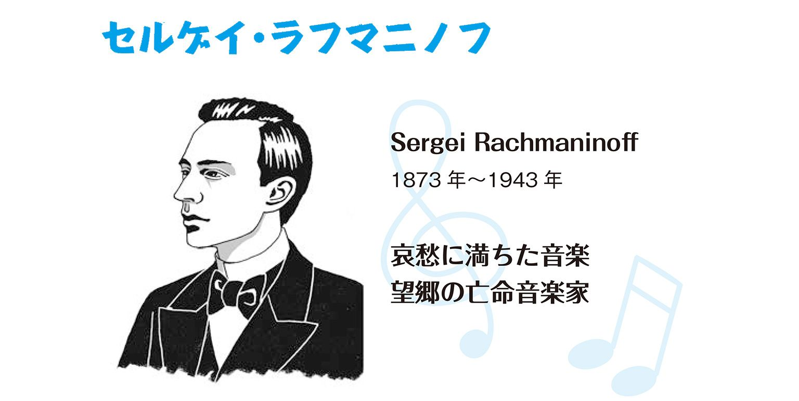
■没落したロシア貴族
ラフマニノフは、ロシアのノヴゴロド州に由緒あるロシア貴族の子として、1873年に生まれました。男女3人ずつの6人きょうだいの次男で、家は広い農地に囲まれた大邸宅だったそうです。父方の祖父はアマチュアのピアニストとしても知られ、母の実家も裕福な貴族で彼女もピアノをたしなみました。では父はどんな人だったのかというと、あまり有能な人ではなかったようで、この父の代でラフマニノフ家は没落します。母が実家から持参した広大な農地まで次々と手放し、ラフマニノフが9歳になる1882年にはすべての財産を失い、一家は当時のロシアの首都であるペテルブルクの賃貸住宅に住むようになります。
悲劇は続きます。ラフマニノフの両親は離婚し、父が出て行きました。さらに、2人の姉が死んでしまいます。
■ピアノの才能だけはあった少年時代
祖父も母も音楽の素養があったので、ラフマニノフは4歳から母にピアノを習っていました。当時のロシアでは、音楽は貴族の趣味として認められていましたが、職業音楽家は卑しい職業で、貴族の息子が目指すものではありませんでした。彼の前の世代であるロシア5人組やチャイコフスキーもみな本業があって、趣味として作曲し演奏していたのです。ですから、ラフマニノフも没落しなければ、プロの音楽家にはならなかったかもしれません。
彼のピアノの才能を知った母の娘時代のピアノ教師がペテルブルク音楽院の奨学金を手配してくれ、ラフマニノフは9歳からこの音楽院に通うようになりました。音楽院とはいえ、一般教育の授業もありましたが、ラフマニノフはピアノの成績は抜群なのにそれ以外はまるでダメ。そのため、12歳の年、奨学金が取り消され、退学寸前になります。あわてた母が、親戚にジロティという高名なピアニストがいたのを思い出して、相談に行きました。ジロティはリストの弟子だった人で、すぐにラフマニノフの才能を認め、モスクワの高名なピアノ教師ズヴェーレフを紹介し、彼の内弟子になり、モスクワ音楽院に入るように手配してくれました。
■交響曲の失敗
こうしてラフマニノフはモスクワに行き、ズヴェーレフのもとでピアノ演奏を基礎から学びます。音楽院ではチャイコフスキーにも才能を認められ、作曲も学ぶようになりました。
青年期までのラフマニノフは、「神童→天才少年コース」を歩んでいますが、モーツァルトのように、幼い頃から作曲の才能を発揮していたわけではないのです。
ラフマニノフはモスクワ音楽院ピアノ科を1891年に18歳で金メダルを得て卒業しました。この時、同期で金メダルを同時受賞したのがスクリャービン。前衛的な音楽に向かうスクリャービンと、最後のロマン派とも言うべき保守的なラフマニノフとは音楽の傾向は正反対でしたが、仲はよかったようです。
ピアノ科を卒業した後も、ラフマニノフは音楽院の作曲科に通い続け、1892年に卒業制作としてオペラ《アレコ》を書き上げました。このオペラは1893年にボリショイ劇場で上演されます。ピアノ協奏曲第1番も卒業制作として作られたものでしたが、後に大幅に改訂されます。
ピアニストとしても作曲家としても順調にスタートしたかにみえたラフマニノフは、1895年に交響曲第1番を完成させ、97年にそれが初演されたのですが、さんざんな不評にさらされ、大失敗に終わります。
不評の原因は曲よりも指揮者とオーケストラにあったようですが、この失敗のショックでラフマニノフは欝になってしまい、何も作曲できないしピアノも弾けなくなります。それでも食べていかなければならないので、小さな歌劇場の指揮者となり、この時にテノール歌手シャリアピンとの友情が生まれました。
■ピアノ協奏曲第2番で復活
ラフマニノフを心配した友人たちの紹介で、アマチュアのヴィオラ奏者でもある精神科医が彼の主治医となり、暗示療法によってラフマニノフは自信を回復し、1900年から作曲を始め、翌年ピアノ協奏曲第2番を完成させます。この曲が彼自身のピアノ演奏、ジロティの指揮で初演されると大成功しました。見事、復活したのです。モーツァルトによって本格的に始まったピアノ協奏曲というジャンルの到達点といっていい名曲です。
復活したラフマニノフは従妹のナターリヤ・サーチナとも結婚し、公私ともに充実した日々となります。1904年からボリショイ劇場の指揮者となり、これを生活の基盤としていましたが、1906年に辞めます。作曲家としての仕事が増えてきたからでした。ピアノ協奏曲第3番は1909年に完成しました。2番ほど有名ではありませんが、難易度はこちらのほうが高く、これも名曲です。
その後もヨーロッパ各地を旅する生活となります。1909年秋には初のアメリカ・ツアーも行い、ニューヨークで新作のピアノ協奏曲第3番を初演しました。ウィーンの歌劇場の指揮者を辞任してニューヨークに来ていたマーラーが指揮し、ラフマニノフがピアノを弾いたコンサートもありました。
ピアニストにして作曲家であるラフマニノフの名声は、どんどん高まっていくのです。
■ロシア革命と亡命
1917年秋、ロシア革命により史上初の社会主義国家が誕生します。その直前、ラフマニノフはかつて音楽院の卒業制作として書いたピアノ協奏曲第1番の改訂版を完成させました。これがロシアで書いた最後の作品となります。
ラフマニノフは没落したとはいえ貴族の家に生まれたので、ソビエト政権には否定的だったようです。革命から数週間後にスウェーデンの興行師から出演依頼の電報を受け取ると、妻と子供を連れて、ロシアを離れます。荷物は小さなスーツケース1つだけだったので、国境でも「亡命」とは疑われず、ストックホルムに到着しました。
ここから彼の生涯にわたる亡命生活が始まりました。
ヨーロッパ各地を演奏する生活が始まりましたが、亡命から1年後、ラフマニノフはアメリカに渡り、そこに永住することを決意します。
■アメリカでコンサート・ピアニストに
亡命した音楽家は、演奏して稼がなければ生活ができません。ラフマニノフは作曲家ではなく、コンサート・ピアニストに転身します。自作だけでなく、ベートーヴェンやショパンの作品も弾いて、喝采を浴びるという日々になりました。彼の演奏は各地で絶賛され、人気・実力とも当代一のピアニストとなります。
また、指揮者としても活躍しました。その分、作曲はできなくなりましたが、時々は作曲もし、1926年にラフマニノフはピアノ協奏曲第4番を完成させました。これが、このジャンルの最後の作品となります。
栄光の日々ではありましたが、ラフマニノフは常に祖国ロシアへの郷愁を抱き続けていました。
やがて第2次世界大戦が始まります。ラフマニノフはソ連の戦争犠牲者を救済するためのコンサートを何度も開き、収益を送金しました。この戦争では米ソは仲間だったので、アメリカ市民も協力したのです。ソ連も、亡命した音楽家であるにもかかわらず、ラフマニノフを自国が誇る偉大な音楽家として扱っていました。革命直後の混乱期の亡命でしたので、「裏切り者」扱いはされなかったのです。
1943年、ラフマニノフはようやくアメリカ市民権を得ましたが、この年の3月に亡くなりました。とうとう、ロシアには帰れませんでした。
ラフマニノフはレコードに録音した最初の音楽家の世代でもあります。ですから、4つのピアノ協奏曲をはじめ、自作はもちろん、ベートーヴェンやショパンなどの彼の演奏もCDで聴くことができます。
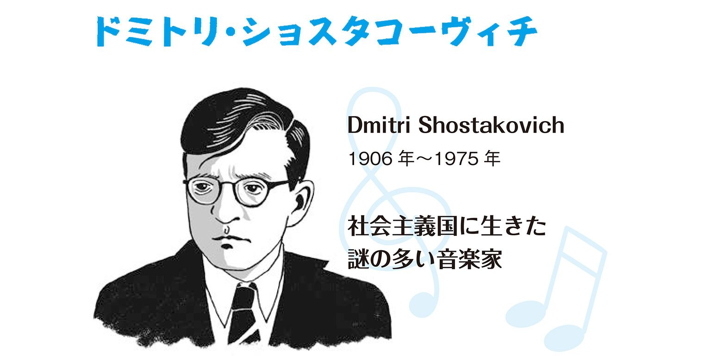
■社会主義・ソ連の音楽家
ソ連崩壊から20年が過ぎようとしています。ショスタコーヴィチは、社会主義という体制で生きた芸術家でした。お金の心配はせず、純粋に芸術のことだけを考えていればよかったのですが、その一方で国家権力に睨まれると命が危ないという状況下で生きなければなりませんでした。
ショスタコーヴィチは20世紀の人ですので、その生涯はかなり克明に分かっています。しかし、ソ連時代は秘密警察が市民を監視し、市民同士も監視しあった密告社会だったので、ショスタコーヴィチ自身と関係者の多くの手紙や日記は、どこまで真実が書かれているのか分からないという、複雑な事情を抱えています。
■ソ連の音楽英雄
ショスタコーヴィチは1906年に、帝政時代のロシアの首都サンクトペテルブルクに生まれました。父は技師で、母はピアニストを目指したが結婚で断念した人でした。姉と妹がいました。家庭には常に音楽がありました。姉がピアノを習っていたのを、そばで聴いていたのが音楽との出会い。つまり、モーツァルトやメンデルスゾーンと同じです。そして、彼ら同様に姉よりも先に覚えてしまうのです。やがて母から本格的にピアノを習うようになります。
ショスタコーヴィチは少年時代の1917年にロシア革命を経験しました。ソ連時代に書かれた伝記では、11歳のショスタコーヴィチが革命の指導者レーニンの演説を聞いて感動したことになっていますが、これは創作のようです。
ショスタコーヴィチは1919年にペテルブルク音楽院に入学し、音楽家への道を本格的に歩み始めました。ピアニストになるか作曲家になるか、彼は悩んでいました。というのも、その両方に抜群の才能があったからです。ところが、1922年に父が亡くなり、ショスタコーヴィチが一家の長として母と姉と妹の3人を養わなければならなくなりました。そこで、映画館でピアノを弾くアルバイトを始めたのです。当時はまだサイレント映画で、映画館ごとにピアニストがいて、生演奏をしていました。
1925年に音楽院を卒業し、その卒業制作として書いた交響曲第1番は絶賛されます。ソ連の輝ける若い音楽英雄としての人生が順調に始まりました。1927年には第1回ショパン国際ピアノコンクールにソ連代表として出場し、最終選考まで残ります。ピアニストとしてもいかに優秀であったかが分かります。
■プラウダでの大批判
順調だったショスタコーヴィチの音楽家人生が一転するのが、1936年です。すでにソ連ではスターリンの独裁体制が確立していました。スターリン体制に反対する者は逮捕されて即日死刑になるか強制収容所に送られるかという、大粛清の時代となっていたのです。
ショスタコーヴィチが1934年に完成させたオペラ《ムツェンスク郡のマクベス夫人》は、ソ連国内各地で上演され、好評でしたが、モスクワのボリショイ劇場での上演をスターリンが観劇したところ、途中で席を立ってしまいます。何かが気に触ったのです。
その数日後、ソ連共産党機関紙「プラウダ」は第1面で、ショスタコーヴィチとこのオペラを全面否定する大論文を掲載、ショスタコーヴィチは、一夜にして「人民の敵」となってしまいます。
「これでもうショスタコーヴィチは終わりだ」とソ連の誰もが思いました。当人も、いつ逮捕されるか気が気でない日々が続きます。
しかし、ショスタコーヴィチは奇跡の復活を遂げます。翌1937年はロシア革命から20年の記念すべき年でした。そこでショスタコーヴィチは、革命の勝利を讃えるかのような曲、交響曲第5番を書いて、絶賛されるのです。
しかし、その前に書いた第4番はリハーサルまでしながら、初演が中止になりました。その理由は謎に包まれています。
復権すると、その後しばらくは順調で、ソ連を代表する音楽家として作曲を続けました。
第2次世界大戦に突入すると、体力のないショスタコーヴィチは人民義勇軍に入りますが、戦場では役に立たないので、志願しても前線には出ず、レニングラードを防衛していました。
レニングラードがドイツ軍に包囲されると、ショスタコーヴィチはその戦いを、音楽として描きます。この交響曲第7番《レニングラード》は、ソ連はもとより、ドイツと戦っていたアメリカでも大評判となりました。
戦争中の1943年にはモスクワ音楽院教授に就任し、教育者としても活躍します。
ところが、1948年に、またも共産党からの大批判を受けます。そこで書いたのが、ソ連を讃えたオラトリオ《森の歌》で、これによりスターリン賞第一席を受賞し、復権しました。
続いて書いた交響曲には《1905年》《1917年》など、革命を描いたものもあり、こうした行動が、西側では体制迎合の作曲家、ソ連共産党の御用作曲家とみなされてしまいます。
1975年、ショスタコーヴィチは「ソ連の偉大な作曲家」として亡くなりました。
■20世紀最大の偽書
ショスタコーヴィチの死から4年後の1979年、ソ連からアメリカに渡ったヴォルコフという音楽学者が『ショスタコーヴィチの証言』なる本の存在を明らかにしました。ショスタコーヴィチが生前に「死後出版すること」との条件付きで、回想録を口述したものとの触れ込みでした。
アメリカで英語版が出版されると、この『証言』はたちまちベストセラーとなり、世界各国で翻訳出版されます。当時は東西の冷戦のさなかでした。
出版された『ショスタコーヴィチの証言』は、これまでのショスタコーヴィチの発言を大きく覆すものでした。
革命の勝利を謳いあげたと思われていた交響曲第5番は、実は「強制された喜び」を表現していたものだと書いてあるのです。さらに、彼の作品を最も多く演奏していた指揮者ムラヴィンスキーのことも、何も理解できない指揮者と評されていました。
それよりも、真面目な共産党員だと思われていたショスタコーヴィチは、実はそうではなく、共産主義者のふりをしていただけだったと「衝撃の告白」が続くのです。
ちょうど作家ソルジェニーツィンが亡命し、ソ連の暗部を描いた『収容所群島』が出版された直後でしたので、ソ連当局は、この『証言』はヴォルコフがでっちあげた偽書であるとの大キャンペーンを展開していきます。ソ連を代表する作曲家ショスタコーヴィチが「反共の闘士」だったとなると、ソ連の面目は丸つぶれです。
一方のアメリカをはじめとする西側諸国は、ソ連を代表する作曲家が仮面をかぶっていた、ソ連がいかに芸術家を苦しめていたかが明らかになったと、鬼の首をとったかのような大騒ぎとなったのです。
当初は「偽書だ」と主張していたのはソ連当局だけでしたが、ソ連崩壊後、外国の研究者がロシアに行き、ショスタコーヴィチとその関係者の日記や手紙を調査できるようになりました。その結果、今日では大半の研究者が、これはヴォルコフによる創作だと結論づけていますが、ヴォルコフ自身は偽書と認めていません。
真相は、いつ明らかになるのでしょうか。
もっと知りたい人のための参考文献
●ヴィヴァルディ
評伝は、現在では子供向きの「伝記 世界の作曲家」のなかの『ビバルディ──バロック音楽を代表するイタリアの作曲家』（パム・ブラウン著、橘高弓枝訳、偕成社、2100円）しかありません。このシリーズには他の作曲家もあるので、お子さんのいらっしゃる方は揃えて、一緒に楽しみながら勉強するのもいいかもしれません。
●ヘンデル
評伝としては、音楽之友社の「作曲家・人と作品シリーズ」の『ヘンデル』（三澤寿喜著、1470円）が分かりやすい。本文で紹介したスパイ説について詳しく知りたい方は『原初バブルと《メサイア》伝説』（山田由美子著、世界思想社、2730円）が当時の社会情勢も含めよく分かります。
●バッハ
「音楽の父」だけあって、関連書籍は山のようにあります。最も安くて、分かりやすいのが、「カラー版作曲家の生涯」『バッハ』 （樋口隆一著、新潮文庫、580円）。写真など図版もふんだんに入っています。バッハの音楽について詳しく知りたい方には、『J・S・バッハ』（礒山雅著、講談社現代新書、756円）が入門書として最適です。
●ハイドン
評伝は、現在は手頃なものがありません。『ハイドン 106の交響曲を聴く』（井上太郎著、春秋社、2415円）は、交響曲を解説したものですが、簡単な伝記の役割も果たします。
●モーツァルト
山ほどあるモーツァルトの評伝のなかでは、音楽に詳しくない人でも楽しめるのが『モーツァルトとベートーヴェン』（中川右介著、青春新書、1000円）ですが、音楽の解説はないので、音楽を知りたい方は『モーツァルト──音楽における天才の役割』（H・C・ロビンズ・ランドン著、石井宏訳、中公新書、777円）。映画『アマデウス』もDVDになっていますので必見。
●ベートーヴェン
評伝としては『ベートーヴェンの生涯』（青木やよひ著、平凡社新書、966円）が新書ながら、実に詳しく分かりやすい。交響曲について知りたい方は現役の指揮者と評論家の対談による『ベートーヴェンの交響曲』（金聖響、玉木正之著、講談社現代新書、798円）。
●シューベルト
音楽之友社の「作曲家・人と作品シリーズ」の『シューベルト』（村田千尋著、1260円）が、最適です。シューベルトを主人公にした戦前の映画『未完成交響楽』がDVDになっていますが、これはまったくのフィクション。
●ロッシーニ
本文でも紹介した文豪スタンダールの『ロッシーニ伝』（山辺雅彦訳）がみすず書房から出ていましたが、現在は絶版。
●ベルリオーズ
自伝『ベルリオーズ回想録』（丹治恒次郎訳、白水社）は絶版、現在は評伝はなく、『クラシック 名曲を生んだ恋物語』（西原稔著、講談社プラスアルファ新書、920円）に女優との物語が載っています。
●メンデルスゾーン
子供向きですが、『メンデルスゾーン──美しくも厳しき人生』（ひのまどか著、リブリオ出版、2100円）。姉ファニーについての『もう一人のメンデルスゾーン──ファニー・メンデルスゾーン=ヘンゼルの生涯』（山下剛著、未知谷、2520円）は専門書ですが、読みやすい本です。
●ショパン
2010年は生誕200年だったので関連書がたくさん出ましたが、その一冊『ショパン 天才の秘話』（中川右介著、静山社文庫、780円）は、ショパンの青年時代までを描いたもの。同世代の他の作曲家も登場。新潮文庫の「カラー版作曲家の生涯」の『ショパン』（遠山一行著、580円）はロングセラー。本格的な評伝としては、音楽之友社の「作曲家・人と作品シリーズ」の『ショパン』（小坂裕子著、1260円）。
●シューマン
かつてはクララの評伝は何種類もありましたが、いまは学習漫画『クララ・シューマン─愛をつらぬいた女性ピアニスト』 （高瀬直子著、笠間春子編、集英社、945円）しかないようです。夫ロベルトの評伝は音楽之友社の「作曲家・人と作品シリーズ」の『シューマン』（藤本一子著、1470円）。
●リスト
人気がないのか、音楽之友社の「作曲家・人と作品シリーズ」の『リスト』（福田弥著、1575円）しかありません。
●ワーグナー
たくさんありますが、音楽之友社の「作曲家・人と作品シリーズ」の『ワーグナー』（吉田真著、1575円）が最適。一族の歴史に興味のある方は、『ワーグナー王朝──舞台芸術の天才、その一族の権力と秘密』（バウアー著、吉田真/滝藤早苗訳、音楽之友社、3150円）。
●ブラームス
新潮文庫の「カラー版作曲家の生涯」の『ブラームス』（三宅幸夫著、580円）と、音楽之友社の「作曲家・人と作品シリーズ」の『ブラームス』（西原稔著、1470円）があります。
●マーラー
音楽之友社の「作曲家・人と作品シリーズ」の『マーラー』（村井翔著、1575円）が評伝としては手頃です。妻アルマが書いた回想録の『グスタフ・マーラー─愛と苦悩の回想（石井宏訳、中公文庫、840円）は読み物として面白い。
●チャイコフスキー
音楽之友社の「作曲家・人と作品シリーズ」の『チャイコフスキー』（伊藤恵子著、1680円）。子供向きの伝記もあります。
●ドヴォルザーク
音楽之友社の「作曲家・人と作品シリーズ」の『ドヴォルジャーク』（内藤久子著、1680円）くらいしかありません。
●ドビュッシー
音楽之友社の「作曲家・人と作品シリーズ」の『ドビュッシー』（松橋麻利著、1470円）は客観的な評伝。『ドビュッシー──想念のエクトプラズム』（青柳いづみこ著、中公文庫、1200円）はピアニストでもある著者による評論で、面白く読めます。
●ラヴェル
手頃な値段の評伝はなく、専門書となりますが、『ラヴェル』（ジャン・エシュノーズ著、関口涼子訳、みすず書房、2310円）。
●ラフマニノフ
『ラフマニノフ その作品と生涯』（ソコロワ著、佐藤靖彦訳、新読書社、2625円）がありますが、あまり詳しくないので、むしろCDの「セルゲイ・ラフマニノフ全集」（SICC-1300/9、ソニー・ミュージック、10000円）の解説書が評伝として充実しています。ピアニストとしてのラフマニノフの全集で10枚組ですので、お買い得です。
●ショスタコーヴィチ
音楽之友社の「作曲家・人と作品シリーズ」の『ショスタコーヴィチ』（千葉潤著、1260円）。本文で触れた偽書の疑いの濃い『ショスタコーヴィチの証言』（ヴォルコフ編、水野忠夫訳、中公文庫、1500円）も、読み物としては面白い。本格的な評伝としては『ショスタコーヴィチ ある生涯』（ファーイ著、藤岡啓介/佐々木千恵訳、アルファベータ、3360円）。
「偉人伝」が書かれるような人物は、有名であり、なおかつ業績があり、そして何よりも成功した人生であるはずです。人生に迷った際に、何か指標とかお手本になるものがないかと思う方が、「偉人伝」を手に取るのではないでしょうか。
クラシック音楽を日頃からよく聴いている私たちは、この本を書くにあたり、有名で業績のある音楽家たちを、思いつくままあげていきました。すぐに40人ほどの名があがり、20人くらいに絞る作業に入りましたが、その時点でも、知名度と音楽史における業績を重視しました。
ところが、書いてみると、音楽史における業績というのは、世間一般にはほとんど関係がないことが分かりました。たとえば「電球の発明」は世界の生活と産業を激変させましたが、「交響曲の様式を確立した」なんていうことは、音楽業界以外には何の関係もないことです。そういうわけで、「業績」よりも、その人物のキャラクターとか人生のストーリーに重点をあてて書いたのですが、そうすると今度は、音楽家たちのスキャンダラスな話題が多くなってしまいました。
もともと、この本に登場するクラスの音楽家は、それぞれの国で100年に1人出るかどうかという天才です。「普通ではない人」なのです。だから、その人生を真似ようとしても無理というもの、諦めてください。さらに他の分野の偉人伝と異なるのは、存命中は無名だった人もいることです。そこが、芸術の面白いところです。
選ばれた人たちは、クラシック音楽の歴史において重要な人たちばかりです。最初から順番に読んでいただければ、音楽史の流れも何となく分かるようになっています。音楽家たちは、生まれた国や時代が違いますが、師弟関係があったり、友人関係だったり、あるいは三角関係だったりと、けっこう人間関係が濃いのです。あるところでは主役だった人が、別の人の人生においては脇役となったり、複数の音楽家の人生に共通して登場する人がいたり、そんな歴史における意外な人間関係も、楽しんでいただければと思います。
そういうわけで、この本は「人生のお手本」となるような偉人伝ではありません。ですが、「天才」というちょっと変わった人たちの生涯の物語として、読み物としては面白くできたのではないかと思っています。この本をきっかけに、多くの方がクラシック音楽に関心を寄せていただければ、うれしく思います。
クラシックジャーナル編集長 中川右介
クラシックジャーナル
2003年創刊のクラシック音楽専門誌。アルファベータ発行、編集長は中川右介。マニア向きの雑誌でCD批評を中心とする。当初は隔月刊だったが、2010年から不定期刊行。
［おとなの楽習］刊行に際して
［現代用語の基礎知識］は1948年の創刊以来、一貫して"基礎知識"という課題に取り組んで来ました。時代がいかに目まぐるしくうつろいやすいものだとしても、しっかりと地に根を下ろしたベーシックな知識こそが私たちの身を必ず支えてくれるでしょう。創刊60周年を迎え、これまでご支持いただいた読者の皆様への感謝とともに、新シリーズ［おとなの楽習］をここに創刊いたします。
2008年 陽春
現代用語の基礎知識編集部
おとなの楽習 偉人伝
クラシックの偉人伝
電子版発行日 平成28年７月１日
著 者 クラシックジャーナル編集部
© Classic Journal
発行所 株式会社自由国民社
発 売 株式会社インプレス
装 画 長谷川義史
挿 画 クリタミノリ